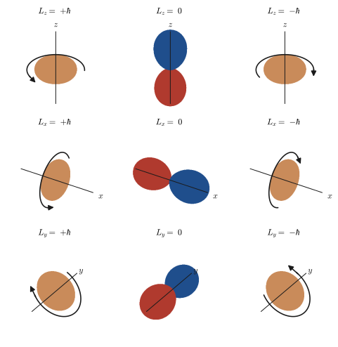

Chapter 24Ladder Operators and the Matrix Representation of Angular Momentum
In Chapter 21 we turned angular momentum into an operator $\hat{\bm{L}}$ and derived its commutation relations. In Chapter 22 we checked that the spherical harmonics $Y_l^m$ are eigenfunctions of $\hat{L}^2$ and $\hat{L}_z$, and that the eigenvalues are $l(l+1)\hbar^2$ and $m\hbar$. Then, in Chapter 23, we saw that the electron has another angular momentum besides its orbital motion—spin. In this chapter we make it possible to treat all of these angular momenta with a single tool. That tool is the ladder operators $\hat{L}_\pm=\hat{L}_x\pm i\hat{L}_y$, which raise or lower the magnetic quantum number $m$ by exactly one. In the harmonic oscillator, $\hat{a}^\dagger$ and $\hat{a}$, which raise and lower the energy by $\hbar\omega$ (Chapter 13, Section 13.8), played the role of a “ladder.” By the same idea, in angular momentum $\hat{L}_+$ and $\hat{L}_-$ climb up and down a ladder of $2l+1$ rungs, $m=l,l-1,\dots,-l$.
Counting the rungs of the ladder shows that the quantization of angular momentum follows from just a single commutation relation. If we assume only the commutation relations of $\hat{L}_x,\hat{L}_y,\hat{L}_z$, then the quantum number $j$ that determines the magnitude of the angular momentum must be one of $0,\tfrac12,1,\tfrac32,\dots$, and $m$ takes $2j+1$ values from $-j$ to $j$; this can be derived without solving a single differential equation (Section 24.3). For orbital angular momentum, $j$ can only be an integer, whereas for spin, $\tfrac12$ is also allowed.
Moreover, the same algebra lets us write the angular momentum operators down as $(2l+1)\times(2l+1)$ matrices. For $l=1$ they are $3\times3$, and for spin $\tfrac12$ they are $2\times2$. Once they are matrices, the eigenvalues and eigenvectors follow mechanically by diagonalizing the matrix (University Mathematics, Chapter 12, Section 12.1) (Sections 24.4–24.6). In this way we find that an eigenstate of $\hat{L}_x$ is in fact a superposition such as $\mathrm{p}_y\pm i\mathrm{p}_z$.
Finally, in one continuous calculation we can understand the following: for spin $\tfrac12$, the “sign” and the “imaginary number” in a two-component vector mean the relative phase (= the azimuthal angle of the spin direction); the Bloch sphere represents a spin in any direction by a single point on a sphere; and a spin changes sign when it is rotated by $2\pi$ (Sections 24.7–24.9).
In classical mechanics, the three components $L_x,L_y,L_z$ of the angular momentum vector all had definite values at the same time (AD 03, Chapter 2, Section 2.5). In quantum mechanics the three components are never simultaneously definite; in terms of matrices, if we make $\hat{L}_z$ diagonal, then $\hat{L}_x,\hat{L}_y$ are no longer diagonal. This language of “ladders” and “matrices” is the starting point for the magnetic moments of magnetic ions, the spin levels in NMR and ESR, the splitting of orbitals in a ligand field (Part VIII), and furthermore group theory (“Solid-State Physics,” AD 06; “Elementary Particle Physics,” AD 09). When we combine orbital and spin angular momenta in the next chapter (Chapter 25), the matrices we build in this chapter will serve, as they are, as building blocks of $6\times6$ and $10\times10$ matrices.
- Be able to define the ladder operators $\hat{L}_\pm=\hat{L}_x\pm i\hat{L}_y$; derive $\comm{\hat{L}_z}{\hat{L}_\pm}=\pm\hbar\hat{L}_\pm$ and $\comm{\hat{L}_+}{\hat{L}_-}=2\hbar\hat{L}_z$ without skipping a step; and explain what “raising or lowering $m$ by one” means
- Be able to derive $\hat{L}_\pm Y_l^m=\hbar\sqrt{(l\mp m)(l\pm m+1)}\,Y_l^{m\pm1}$ from the polar-coordinate forms of $\hat{L}_\pm$, $\hat{L}_+=\hbar e^{i\varphi}\bigl(\partial_\theta+i\cot\theta\,\partial_\varphi\bigr)$ and $\hat{L}_-=\hbar e^{-i\varphi}\bigl(-\partial_\theta+i\cot\theta\,\partial_\varphi\bigr)$
- Be able to derive $j=0,\tfrac12,1,\tfrac32,\dots$, $m=-j,\dots,j$, and $\hat{J}_\pm\ket{j,m}=\hbar\sqrt{j(j+1)-m(m\pm1)}\,\ket{j,m\pm1}$ from the commutation relations alone, and explain why only integer $j$ is allowed for orbital angular momentum (the single-valuedness of $e^{im\varphi}$)
- Be able to write $\hat{L}^2$, $\hat{L}_z$, $\hat{L}_\pm$, $\hat{L}_x$, and $\hat{L}_y$ as matrices for $l=1,2$ (and for general $l$), and to check the commutation relations and $\hat{L}^2=\hat{L}_x^2+\hat{L}_y^2+\hat{L}_z^2$ with these matrices
- Be able to find the eigenvalues and eigenvectors of $\hat{L}_x$, $\hat{L}_y$, $\hat{L}_z$ using determinants, and to calculate how the eigenfunctions correspond to the real orbitals $\mathrm{p}_x,\mathrm{p}_y,\mathrm{p}_z$ and which values appear, with what probabilities, in a measurement
- Be able to find the eigenvectors $(1,\pm1)^{\mathsf T}/\sqrt2$, $(1,\pm i)^{\mathsf T}/\sqrt2$ of $\hat{S}_x,\hat{S}_y,\hat{S}_z$ for spin $\tfrac12$; to explain that the “sign” and the “imaginary number” express a relative phase = a direction (the amplitudes do not cancel each other out); and to calculate the intensity $I_0/8$ in the sequential Stern–Gerlach experiment
- Be able to show that a change of basis by a unitary matrix, $A'=U^{\dagger}AU$, leaves the commutation relations and the eigenvalues unchanged, and to calculate $U^{-1}\sigma_xU=\sigma_z$
- Be able to handle the eigenvectors $(\cos\tfrac\theta2,e^{i\varphi}\sin\tfrac\theta2)^{\mathsf T}$ of a spin pointing in an arbitrary direction $\bm{n}$, the Bloch sphere, the rotation operator $e^{-i\alpha\,\bm{n}\cdot\bm{\sigma}/2}$, the $4\pi$ periodicity, and Larmor precession
Source notes: Yasuhide Mochizuki, “Physics Notes: Quantum Mechanics 2,” pp. 32–38, and “Physics Notes: Quantum Mechanics 3,” pp. 8–10.
24.1 Definition and Commutation Relations of the Ladder Operators — The “Ladder” Operators
24.1.1 The idea of the ladder
For a given $l$, there are $2l+1$ spherical harmonics $Y_l^m$, with $m=l,l-1,\dots,-l$. Since the eigenvalue of $\hat{L}_z$ is $m\hbar$, these form a “ladder” of $2l+1$ rungs on which the value of $\hat{L}_z$ differs by $\hbar$ from one rung to the next (Figure 24.1). Can we construct one operator that climbs one rung of this ladder and another that descends one rung? If we could, then knowing just one rung, the top (or the bottom) one, would let us build all the remaining rungs. We did the same thing for the harmonic oscillator: acting with $\hat{a}^\dagger$ raised the energy by exactly $\hbar\omega$, and acting with $\hat{a}$ lowered it (Chapter 13, Section 13.8). For angular momentum, the rungs of the ladder are the eigenvalues of $\hat{L}_z$, and the spacing between the rungs is $\hbar$.
In this section we first define the ladder operators and derive their commutation relations. The commutation relations are the linchpin of the calculation. This is because the property “raise $m$ by 1” is itself nothing but a restatement of the commutation relation $\comm{\hat{L}_z}{\hat{L}_+}=\hbar\hat{L}_+$. The starting point for the calculation is the three commutation relations of angular momentum derived in Chapter 21.
Here $\comm{\hat{A}}{\hat{B}}=\hat{A}\hat{B}-\hat{B}\hat{A}$ is the commutator, and $\hat{L}_x,\hat{L}_y,\hat{L}_z$ are Hermitian operators. The right-hand side of Eq. \eqref{eq:24-comm3} has the indices running cyclically, $x\to y\to z\to x$. Also, since $\comm{\hat{B}}{\hat{A}}=-\comm{\hat{A}}{\hat{B}}$, we have, for example, $\comm{\hat{L}_z}{\hat{L}_y}=-i\hbar\hat{L}_x$ and $\comm{\hat{L}_y}{\hat{L}_x}=-i\hbar\hat{L}_z$.
24.1.2 Definition of the ladder operators
Definition 24.1: Ladder operators (raising and lowering operators)
Using the angular momentum operators, we define the raising operator $\hat{L}_+$ and the lowering operator $\hat{L}_-$ as follows.
\begin{equation} \hat{L}_+\equiv\hat{L}_x+i\hat{L}_y,\qquad \hat{L}_-\equiv\hat{L}_x-i\hat{L}_y \label{eq:24-Lpm-def} \end{equation}The two together are called the ladder operators and are written $\hat{L}_\pm$. Conversely, solving these two equations for the Cartesian components gives
$$ \hat{L}_x=\frac12\bigl(\hat{L}_++\hat{L}_-\bigr),\qquad \hat{L}_y=\frac{1}{2i}\bigl(\hat{L}_+-\hat{L}_-\bigr) $$These follow simply by adding and subtracting the two equations.
$\hat{L}_+$ and $\hat{L}_-$ are not Hermitian operators. Since $\hat{L}_x,\hat{L}_y$ are Hermitian operators and the imaginary unit $i$ becomes $-i$ under the adjoint ($\dagger$), we have
\begin{equation} \hat{L}_+^{\dagger}=\bigl(\hat{L}_x+i\hat{L}_y\bigr)^{\dagger}=\hat{L}_x^{\dagger}-i\hat{L}_y^{\dagger}=\hat{L}_x-i\hat{L}_y=\hat{L}_-,\qquad \hat{L}_-^{\dagger}=\hat{L}_+ \label{eq:24-Lpm-dagger} \end{equation}That is, $\hat{L}_+$ and $\hat{L}_-$ are Hermitian conjugates of each other (in terms of complex numbers, the relation between $z=x+iy$ and $\bar{z}=x-iy$). Because they are not Hermitian operators, $\hat{L}_\pm$ are not measurable physical quantities. Nor is there any guarantee that their eigenvalues are real. They are, after all, just “tools” that carry one state into another state.
24.1.3 Commutation relations
Since $\hat{L}_+$ and $\hat{L}_-$ are expressed in terms of $\hat{L}_x$ and $\hat{L}_y$, they do not commute with $\hat{L}_z$ (because $\hat{L}_z$ commutes with neither $\hat{L}_x$ nor $\hat{L}_y$). We now calculate how far from commuting they are. The starting point is to expand the product according to the definition of the commutator.
Derivation: $\comm{\hat{L}_z}{\hat{L}_+}=\hbar\hat{L}_+$
From the definition of the commutator,
$$ \comm{\hat{L}_z}{\hat{L}_+}=\hat{L}_z\bigl(\hat{L}_x+i\hat{L}_y\bigr)-\bigl(\hat{L}_x+i\hat{L}_y\bigr)\hat{L}_z =\bigl(\hat{L}_z\hat{L}_x-\hat{L}_x\hat{L}_z\bigr)+i\bigl(\hat{L}_z\hat{L}_y-\hat{L}_y\hat{L}_z\bigr) $$The two parentheses on the right-hand side are $\comm{\hat{L}_z}{\hat{L}_x}$ and $\comm{\hat{L}_z}{\hat{L}_y}$, respectively. From Eq. \eqref{eq:24-comm3}, $\comm{\hat{L}_z}{\hat{L}_x}=i\hbar\hat{L}_y$ and $\comm{\hat{L}_z}{\hat{L}_y}=-i\hbar\hat{L}_x$, so
$$ \comm{\hat{L}_z}{\hat{L}_+}=i\hbar\hat{L}_y+i\bigl(-i\hbar\hat{L}_x\bigr)=i\hbar\hat{L}_y+\hbar\hat{L}_x=\hbar\bigl(\hat{L}_x+i\hat{L}_y\bigr)=\hbar\hat{L}_+ $$Thus we obtain the result. Along the way, we used $i\cdot(-i)=1$.
∎
Derivation: $\comm{\hat{L}_z}{\hat{L}_-}=-\hbar\hat{L}_-$
Similarly,
$$ \comm{\hat{L}_z}{\hat{L}_-}=\hat{L}_z\bigl(\hat{L}_x-i\hat{L}_y\bigr)-\bigl(\hat{L}_x-i\hat{L}_y\bigr)\hat{L}_z =\underbrace{\bigl(\hat{L}_z\hat{L}_x-\hat{L}_x\hat{L}_z\bigr)}_{\comm{\hat{L}_z}{\hat{L}_x}=i\hbar\hat{L}_y}-i\underbrace{\bigl(\hat{L}_z\hat{L}_y-\hat{L}_y\hat{L}_z\bigr)}_{\comm{\hat{L}_z}{\hat{L}_y}=-i\hbar\hat{L}_x} $$ $$ =i\hbar\hat{L}_y-i\bigl(-i\hbar\hat{L}_x\bigr)=i\hbar\hat{L}_y-\hbar\hat{L}_x=-\hbar\bigl(\hat{L}_x-i\hat{L}_y\bigr)=-\hbar\hat{L}_- $$This is the result (we used $-i\cdot(-i)=i^2=-1$).
∎
Derivation: $\comm{\hat{L}_+}{\hat{L}_-}=2\hbar\hat{L}_z$
First we expand the two products. Since $\hat{L}_x$ and $\hat{L}_y$ do not commute with each other, we expand while keeping the order:
$$ \hat{L}_+\hat{L}_-=\bigl(\hat{L}_x+i\hat{L}_y\bigr)\bigl(\hat{L}_x-i\hat{L}_y\bigr)=\hat{L}_x^2-i\hat{L}_x\hat{L}_y+i\hat{L}_y\hat{L}_x+\hat{L}_y^2=\hat{L}_x^2+\hat{L}_y^2+i\bigl(\hat{L}_y\hat{L}_x-\hat{L}_x\hat{L}_y\bigr) $$ $$ \hat{L}_-\hat{L}_+=\bigl(\hat{L}_x-i\hat{L}_y\bigr)\bigl(\hat{L}_x+i\hat{L}_y\bigr)=\hat{L}_x^2+i\hat{L}_x\hat{L}_y-i\hat{L}_y\hat{L}_x+\hat{L}_y^2=\hat{L}_x^2+\hat{L}_y^2-i\bigl(\hat{L}_y\hat{L}_x-\hat{L}_x\hat{L}_y\bigr) $$Taking the difference, $\hat{L}_x^2$ and $\hat{L}_y^2$ cancel each other, and
$$ \comm{\hat{L}_+}{\hat{L}_-}=\Bigl\{\hat{L}_x^2+\hat{L}_y^2+i\bigl(\hat{L}_y\hat{L}_x-\hat{L}_x\hat{L}_y\bigr)\Bigr\}-\Bigl\{\hat{L}_x^2+\hat{L}_y^2-i\bigl(\hat{L}_y\hat{L}_x-\hat{L}_x\hat{L}_y\bigr)\Bigr\} =2i\underbrace{\bigl(\hat{L}_y\hat{L}_x-\hat{L}_x\hat{L}_y\bigr)}_{\comm{\hat{L}_y}{\hat{L}_x}=-i\hbar\hat{L}_z}=2i\cdot(-i\hbar\hat{L}_z)=2\hbar\hat{L}_z $$∎
Theorem 24.1: Commutation relations of the ladder operators
\begin{equation} \comm{\hat{L}_z}{\hat{L}_+}=\hbar\hat{L}_+,\qquad \comm{\hat{L}_z}{\hat{L}_-}=-\hbar\hat{L}_-,\qquad \comm{\hat{L}_+}{\hat{L}_-}=2\hbar\hat{L}_z \label{eq:24-zpm} \end{equation}24.1.4 The meaning of “raising and lowering” — raising and lowering $m$ by 1
The first two relations in Eq. \eqref{eq:24-zpm} are the reason that $\hat{L}_\pm$ are called “ladder operators.”
Intuition: $\hat{L}_+$ raises the eigenvalue of $\hat{L}_z$ by $\hbar$
Suppose there is an eigenfunction $\psi$ of $\hat{L}_z$ (with eigenvalue $m\hbar$): $\hat{L}_z\psi=m\hbar\psi$. Let us further act with $\hat{L}_z$ on the function $\hat{L}_+\psi$ obtained by acting on it with $\hat{L}_+$. Rewriting $\hat{L}_z\hat{L}_+=\hat{L}_+\hat{L}_z+\comm{\hat{L}_z}{\hat{L}_+}$ and using Eq. \eqref{eq:24-zpm}, we get
$$ \hat{L}_z\bigl(\hat{L}_+\psi\bigr)=\bigl(\hat{L}_+\hat{L}_z+\hbar\hat{L}_+\bigr)\psi=\hat{L}_+\bigl(m\hbar\psi\bigr)+\hbar\hat{L}_+\psi=(m+1)\hbar\,\bigl(\hat{L}_+\psi\bigr) $$That is, $\hat{L}_+\psi$ is an eigenfunction of $\hat{L}_z$ with eigenvalue $(m+1)\hbar$ (unless $\hat{L}_+\psi=0$). Similarly, $\hat{L}_z\bigl(\hat{L}_-\psi\bigr)=(m-1)\hbar\,\bigl(\hat{L}_-\psi\bigr)$. This is exactly the same argument by which, for the harmonic oscillator, the statement “$\hat{a}^\dagger$ raises the energy by $\hbar\omega$” followed from $\comm{\hat{H}}{\hat{a}^\dagger}=\hbar\omega\hat{a}^\dagger$.
There is one more important point. $\hat{L}^2$ commutes with each of $\hat{L}_x,\hat{L}_y,\hat{L}_z$ (Chapter 22), so it also commutes with $\hat{L}_\pm$:
\begin{equation} \comm{\hat{L}^2}{\hat{L}_\pm}=\comm{\hat{L}^2}{\hat{L}_x}\pm i\comm{\hat{L}^2}{\hat{L}_y}=0 \label{eq:24-L2-pm} \end{equation}Hence, acting with $\hat{L}_\pm$ does not change the eigenvalue $l(l+1)\hbar^2$ of $\hat{L}^2$. That is, the ladder operators are operators that “move only $m$ by one, without changing $l$.” $\hat{L}_+\psi$ has the eigenvalue $l(l+1)\hbar^2$ of $\hat{L}^2$ and the eigenvalue $(m+1)\hbar$ of $\hat{L}_z$.
24.1.5 The relation between $\hat{L}^2$ and the ladder operators
We substitute the commutation relation $\comm{\hat{L}_y}{\hat{L}_x}=-i\hbar\hat{L}_z$ into the results of the expansion in the previous subsection and simplify $\hat{L}_-\hat{L}_+$ and $\hat{L}_+\hat{L}_-$.
Derivation: Expressing $\hat{L}^2$ in terms of the ladder operators and $\hat{L}_z$
From the expansion in Section 24.1.3, $\hat{L}_-\hat{L}_+=\hat{L}_x^2+\hat{L}_y^2-i\comm{\hat{L}_y}{\hat{L}_x}=\hat{L}_x^2+\hat{L}_y^2-i(-i\hbar\hat{L}_z)=\hat{L}_x^2+\hat{L}_y^2-\hbar\hat{L}_z$. Hence $\hat{L}_x^2+\hat{L}_y^2=\hat{L}_-\hat{L}_++\hbar\hat{L}_z$, and
$$ \hat{L}^2=\hat{L}_x^2+\hat{L}_y^2+\hat{L}_z^2=\hat{L}_-\hat{L}_++\hat{L}_z^2+\hbar\hat{L}_z $$Similarly, from $\hat{L}_+\hat{L}_-=\hat{L}_x^2+\hat{L}_y^2+i\comm{\hat{L}_y}{\hat{L}_x}=\hat{L}_x^2+\hat{L}_y^2+\hbar\hat{L}_z$ we obtain $\hat{L}^2=\hat{L}_+\hat{L}_-+\hat{L}_z^2-\hbar\hat{L}_z$.
∎
Formula 24.1: $\hat{L}^2$ and the ladder operators
\begin{equation} \hat{L}^2=\hat{L}_-\hat{L}_++\hat{L}_z^2+\hbar\hat{L}_z=\hat{L}_+\hat{L}_-+\hat{L}_z^2-\hbar\hat{L}_z,\qquad \hat{L}_x^2+\hat{L}_y^2=\tfrac12\bigl(\hat{L}_+\hat{L}_-+\hat{L}_-\hat{L}_+\bigr) \label{eq:24-L2-ladder} \end{equation}The equation on the right follows from the fact that adding the two products $\hat{L}_+\hat{L}_-$ and $\hat{L}_-\hat{L}_+$ above gives twice $\hat{L}_x^2+\hat{L}_y^2$ (the terms containing $\comm{\hat{L}_y}{\hat{L}_x}$ cancel). In Section 24.3, where we determine the eigenvalues of $\hat{L}^2$ from the condition that the ladder “stops at its end,” Eq. \eqref{eq:24-L2-ladder} plays a decisive role.
24.1.6 The ladder operators in Cartesian coordinates
Substituting $\hat{L}_x=-i\hbar\bigl(y\,\partial_z-z\,\partial_y\bigr)$ and $\hat{L}_y=-i\hbar\bigl(z\,\partial_x-x\,\partial_z\bigr)$ (Chapter 21) into Eq. \eqref{eq:24-Lpm-def} gives the form of the ladder operators in Cartesian coordinates.
Derivation: $\hat{L}_\pm$ in Cartesian coordinates
$$ \hat{L}_+=-i\hbar\Bigl\{y\,\partial_z-z\,\partial_y+i\bigl(z\,\partial_x-x\,\partial_z\bigr)\Bigr\} =-i\hbar\Bigl\{(y-ix)\,\partial_z+i\,z\bigl(\partial_x+i\,\partial_y\bigr)\Bigr\} $$Here $y-ix=-i(x+iy)$, so $-i\hbar\cdot(-i)(x+iy)\partial_z=-\hbar(x+iy)\partial_z$ and $-i\hbar\cdot i\,z(\partial_x+i\partial_y)=\hbar z(\partial_x+i\partial_y)$, and therefore
$$ \hat{L}_+=\hbar\Bigl\{z\bigl(\partial_x+i\,\partial_y\bigr)-(x+iy)\,\partial_z\Bigr\} $$Similarly, for $\hat{L}_-$, using $y+ix=i(x-iy)$,
$$ \hat{L}_-=-i\hbar\Bigl\{(y+ix)\,\partial_z-z\bigl(\partial_y+i\,\partial_x\bigr)\Bigr\}=\hbar\Bigl\{(x-iy)\,\partial_z-z\bigl(\partial_x-i\,\partial_y\bigr)\Bigr\} $$This is the result (note that $\partial_y+i\partial_x=i(\partial_x-i\partial_y)$).
∎
Formula 24.2: The ladder operators in Cartesian coordinates
\begin{equation} \hat{L}_+=\hbar\Bigl\{z\bigl(\partial_x+i\,\partial_y\bigr)-(x+iy)\,\partial_z\Bigr\},\qquad \hat{L}_-=\hbar\Bigl\{(x-iy)\,\partial_z-z\bigl(\partial_x-i\,\partial_y\bigr)\Bigr\} \label{eq:24-cart} \end{equation}Using this form, the ladder for $l=1$ (p orbitals) can be built with hardly any differentiation. The three basic functions of the p orbitals are $z$, $x+iy$, and $x-iy$ (the real orbitals $\mathrm{p}_x,\mathrm{p}_y,\mathrm{p}_z$ of Chapter 16, Section 16.6, and the complex orbitals $\mathrm{p}_x\pm i\mathrm{p}_y$ built from them). Since $r=\sqrt{x^2+y^2+z^2}$ is unchanged by the action of $\hat{L}_\pm$ ($\hat{\bm{L}}$ acts only on the angles), for $Y_1^m\propto(\text{the above three})/r$ the action is as follows.
Example 24.1: The ladder of p orbitals and a check of $\hat{L}^2=\hat{L}_-\hat{L}_++\hat{L}_z^2+\hbar\hat{L}_z$
(1) Using Eq. \eqref{eq:24-cart}, find $\hat{L}_+z$, $\hat{L}_+(x-iy)$, $\hat{L}_+(x+iy)$, $\hat{L}_-z$, $\hat{L}_-(x+iy)$, and $\hat{L}_-(x-iy)$. (2) Using $Y_1^0=\sqrt{3/4\pi}\,z/r$ and $Y_1^{\pm1}=\mp\sqrt{3/8\pi}\,(x\pm iy)/r$, verify from (1) that $\hat{L}_+Y_1^0=\sqrt2\hbar\,Y_1^1$. (3) Act with $\hat{L}^2=\hat{L}_-\hat{L}_++\hat{L}_z^2+\hbar\hat{L}_z$ on $z$ and show that $\hat{L}^2z=2\hbar^2z$.
Solution. (1) Since $\partial_z z=1$ and $\partial_x z=\partial_y z=0$, we have $\hat{L}_+z=\hbar\{0-(x+iy)\cdot1\}=-\hbar(x+iy)$. For $\hat{L}_+(x-iy)$, since $\partial_z(x-iy)=0$ and $(\partial_x+i\partial_y)(x-iy)=1+i(-i)=2$, we get $\hat{L}_+(x-iy)=2\hbar z$. For $\hat{L}_+(x+iy)$, since $(\partial_x+i\partial_y)(x+iy)=1+i\cdot i=0$, the result is $0$ (it cannot be raised any further). Similarly, $\hat{L}_-z=\hbar(x-iy)$, $\hat{L}_-(x+iy)=\hbar\{0-z(1-i\cdot i)\}=-2\hbar z$, and $\hat{L}_-(x-iy)=0$.
(2) $\hat{L}_+Y_1^0=\sqrt{\dfrac{3}{4\pi}}\dfrac{\hat{L}_+z}{r}=-\hbar\sqrt{\dfrac{3}{4\pi}}\dfrac{x+iy}{r}=\sqrt2\,\hbar\Bigl(-\sqrt{\dfrac{3}{8\pi}}\dfrac{x+iy}{r}\Bigr)=\sqrt2\,\hbar\,Y_1^1$. In the last step we used $\sqrt{3/4\pi}=\sqrt2\sqrt{3/8\pi}$.
(3) Acting with $\hat{L}_-$ on $\hat{L}_+z=-\hbar(x+iy)$ gives $\hat{L}_-\hat{L}_+z=-\hbar\cdot\hat{L}_-(x+iy)=-\hbar\cdot(-2\hbar z)=2\hbar^2z$. Also, since $\hat{L}_zz=-i\hbar(x\partial_y-y\partial_x)z=0$, we have $\hat{L}_z^2z=0$ and $\hbar\hat{L}_zz=0$. Therefore $\hat{L}^2z=2\hbar^2z+0+0=1\cdot(1+1)\hbar^2z$, which gives the $l=1$ eigenvalue $l(l+1)\hbar^2=2\hbar^2$.
Related simulator: to check the coefficients while going up and down the ladder, see the Lie Group simulator ③ Irreducible representations and multiplets.
24.2 Ladder Operators in Polar Coordinates and the Spherical Harmonics — Computing $\hat{L}_\pm Y_l^m$
In the previous section, we showed from the commutation relations that the ladder operators shift the eigenvalue of $\hat{L}_z$ by $\hbar$. Then what function results, concretely, when $\hat{L}_\pm$ acts on a spherical harmonic $Y_l^m(\theta,\varphi)$? In this section, we write $\hat{L}_\pm$ as differential operators in the polar coordinates $(\theta,\varphi)$, apply them to $Y_l^m$ explicitly, and derive the following result: $\hat{L}_\pm Y_l^m=\hbar\sqrt{(l\mp m)(l\pm m+1)}\,Y_l^{m\pm1}$. This fixes concretely the “connecting coefficient” $\sqrt{(l\mp m)(l\pm m+1)}$ between neighboring rungs of the ladder.
24.2.1 Polar form of the ladder operators
In Chapter 21, we expressed $\hat{L}_x$ and $\hat{L}_y$ in polar coordinates:
\begin{equation} \hat{L}_x=-\frac{\hbar}{i}\left(\sin\varphi\,\pdiff{}{\theta}+\frac{\cos\varphi}{\tan\theta}\,\pdiff{}{\varphi}\right),\qquad \hat{L}_y=-\frac{\hbar}{i}\left(-\cos\varphi\,\pdiff{}{\theta}+\frac{\sin\varphi}{\tan\theta}\,\pdiff{}{\varphi}\right) \label{eq:24-Lxy-polar} \end{equation}Here $\theta$ is the angle from the $z$ axis (the polar angle) and $\varphi$ is the azimuthal angle. If we move the $i$ in the denominator of the coefficient $-\hbar/i$ up to the numerator, we get $-\hbar/i=-\hbar\cdot(-i)=i\hbar$ ($1/i=-i$). We substitute this form into Eq. \eqref{eq:24-Lpm-def}.
Derivation: Polar form of $\hat{L}_+$
Using $-\hbar/i=i\hbar$, we organize $\hat{L}_x+i\hat{L}_y$ by separating it into a $\partial_\theta$ term and a $\partial_\varphi$ term.
$$ \hat{L}_+=\hat{L}_x+i\hat{L}_y=i\hbar\Bigl\{\bigl(\sin\varphi-i\cos\varphi\bigr)\pdiff{}{\theta}+\frac{1}{\tan\theta}\bigl(\cos\varphi+i\sin\varphi\bigr)\pdiff{}{\varphi}\Bigr\} $$The coefficient of $\partial_\theta$ comes from $\sin\varphi$ and $i\cdot(-\cos\varphi)$. Here $\sin\varphi-i\cos\varphi=-i(\cos\varphi+i\sin\varphi)=-ie^{i\varphi}$ (Euler's formula, University Mathematics, Chapter 21, Section 21.4; indeed, $-i\cos\varphi-i\cdot i\sin\varphi=-i\cos\varphi+\sin\varphi$, which agrees). Therefore $i\hbar\cdot(-i)e^{i\varphi}=\hbar e^{i\varphi}$, and
$$ \hat{L}_+=\hbar\Bigl\{(\cos\varphi+i\sin\varphi)\pdiff{}{\theta}+i\frac{1}{\tan\theta}(\cos\varphi+i\sin\varphi)\pdiff{}{\varphi}\Bigr\}=\hbar\,e^{i\varphi}\left(\pdiff{}{\theta}+i\cot\theta\,\pdiff{}{\varphi}\right) $$∎
Derivation: Polar form of $\hat{L}_-$
For $\hat{L}_-=\hat{L}_x-i\hat{L}_y$, the coefficient of $\partial_\theta$ becomes $\sin\varphi-i(-\cos\varphi)=\sin\varphi+i\cos\varphi=i(\cos\varphi-i\sin\varphi)=ie^{-i\varphi}$ (note that $-i\cdot(-\cos\varphi)=+i\cos\varphi$), and the coefficient of $\partial_\varphi$ becomes $\cos\varphi-i\sin\varphi=e^{-i\varphi}$:
$$ \hat{L}_-=i\hbar\Bigl\{\bigl(\sin\varphi+i\cos\varphi\bigr)\pdiff{}{\theta}+\frac{1}{\tan\theta}\bigl(\cos\varphi-i\sin\varphi\bigr)\pdiff{}{\varphi}\Bigr\} =i\hbar\Bigl\{ie^{-i\varphi}\pdiff{}{\theta}+\cot\theta\,e^{-i\varphi}\pdiff{}{\varphi}\Bigr\} $$Since $i\hbar\cdot i=-\hbar$,
$$ \hat{L}_-=\hbar\Bigl\{-(\cos\varphi-i\sin\varphi)\pdiff{}{\theta}+i\frac{1}{\tan\theta}(\cos\varphi-i\sin\varphi)\pdiff{}{\varphi}\Bigr\}=\hbar\,e^{-i\varphi}\left(-\pdiff{}{\theta}+i\cot\theta\,\pdiff{}{\varphi}\right) $$∎
Formula 24.3: Polar form of the ladder operators
\begin{equation} \hat{L}_+=\hbar\,e^{i\varphi}\left(\pdiff{}{\theta}+i\cot\theta\,\pdiff{}{\varphi}\right),\qquad \hat{L}_-=\hbar\,e^{-i\varphi}\left(-\pdiff{}{\theta}+i\cot\theta\,\pdiff{}{\varphi}\right) \label{eq:24-Lpm-polar} \end{equation}Caution: The sign of the $\partial_\theta$ term in $\hat{L}_-$ is opposite to that in $\hat{L}_+$
As Eq. \eqref{eq:24-Lxy-polar} shows, $\hat{L}_x$ and $\hat{L}_y$ have the form “$i\hbar\times$ (a differential operator with real coefficients).” Therefore, if we replace every $i$ in the expression for $\hat{L}_+$ by $-i$ (that is, take the complex conjugate), we do not obtain $\hat{L}_-$; we obtain $-\hat{L}_-$, whose overall sign is opposite: $\hbar e^{-i\varphi}\bigl(\partial_\theta-i\cot\theta\,\partial_\varphi\bigr)=-\hat{L}_-$. In $\hat{L}_-$ of Eq. \eqref{eq:24-Lpm-polar}, it is correct that the sign of the $\partial_\theta$ term is opposite to that in $\hat{L}_+$. This is also confirmed in Section 24.2.5 below: when the operator acts on $Y_l^m$, the coefficient comes out to be a positive real number.
Intuition: Multiplying by $e^{\pm i\varphi}$ shifts $m$ by $\pm1$
Let us look at the prefactor $e^{i\varphi}$ in Eq. \eqref{eq:24-Lpm-polar}. The $\varphi$ dependence of $Y_l^m$ is $e^{im\varphi}$, so multiplying by $e^{i\varphi}$ gives $e^{i(m+1)\varphi}$, that is, $m\to m+1$. $\hat{L}_-$ multiplies by $e^{-i\varphi}$, so $m\to m-1$. The derivatives inside the parentheses play the role of converting the $\theta$ dependence into the function that matches $m+1$ (namely $P_l^{m+1}$). That “$m\to m+1$” can be seen at a glance even in the polar form.
24.2.2 The expression for the spherical harmonics and $P_l^m$
To apply $\hat{L}_\pm$ to $Y_l^m$, we first write down the expression for $Y_l^m$. Its derivation is in Chapters 14 and 22, so here we simply use the result.
Definition 24.2: Spherical harmonics $Y_l^m(\theta,\varphi)$
For the azimuthal quantum number $l=0,1,2,\dots$ and the magnetic quantum number $m=-l,-l+1,\dots,l$, the spherical harmonics are defined by
\begin{equation} Y_l^m(\theta,\varphi)=(-1)^{\frac{m+\abs{m}}{2}}\sqrt{\frac{2l+1}{4\pi}\,\frac{(l-\abs{m})!}{(l+\abs{m})!}}\;\frac{(1-\cos^2\theta)^{\abs{m}/2}}{2^l\,l!}\,\frac{\dd^{\,l+\abs{m}}}{\dd(\cos\theta)^{l+\abs{m}}}\bigl(\cos^2\theta-1\bigr)^l\,e^{im\varphi} \label{eq:24-Ylm} \end{equation}We also write $Y_l^m$ as $Y_{l,m}$. For $m\ge0$ the phase factor is $(-1)^m$, and for $m\le0$ it is $1$ ($(m+\abs{m})/2$ equals $m$ for $m\ge0$ and $0$ for $m\le0$). This is the Condon–Shortley choice of phase.
Note that the ratio of factorials is $(l-\abs{m})!/(l+\abs{m})!$ (the numerator is $l-\abs{m}$). This is fixed by the normalization $\int\abs{Y_l^m}^2\sin\theta\,\dd\theta\,\dd\varphi=1$.
The part of Eq. \eqref{eq:24-Ylm} that contains $\theta$ can be written with the associated Legendre function. Let $x=\cos\theta$. If we differentiate Rodrigues' formula for the Legendre polynomials, $P_l(x)=\dfrac{1}{2^ll!}\dfrac{\dd^l}{\dd x^l}(x^2-1)^l$ (University Mathematics, Chapter 40, Section 40.5), $\abs{m}$ times, we obtain
\begin{equation} P_l^{m}(x)\equiv(1-x^2)^{\abs{m}/2}\,\frac{\dd^{\abs{m}}P_l(x)}{\dd x^{\abs{m}}}=\frac{(1-x^2)^{\abs{m}/2}}{2^ll!}\,\frac{\dd^{\,l+\abs{m}}}{\dd x^{\,l+\abs{m}}}(x^2-1)^l \label{eq:24-Plm} \end{equation}Here $(1-x^2)^{\abs{m}/2}=\sin^{\abs{m}}\theta$ and $(\cos^2\theta-1)^l=(x^2-1)^l$. The $P_l^m$ in this book is defined without the Condon–Shortley phase $(-1)^m$. We also adopt the convention that $P_l^{m}=P_l^{\abs{m}}$ even when the index $m$ is negative, $m<0$. Furthermore, when the superscript of $P_l^{m}$ exceeds $l$, the derivative of order $l+\abs{m}$ differentiates a polynomial of degree $2l$ at least $2l+1$ times, so $P_l^{m}=0$ ($m>l$). Then $Y_l^m$ can be written as follows:
\begin{equation} Y_l^m(\theta,\varphi)=(-1)^{\frac{m+\abs{m}}{2}}N_{l\abs{m}}\,P_l^{\abs{m}}(\cos\theta)\,e^{im\varphi},\qquad N_{lk}\equiv\sqrt{\frac{2l+1}{4\pi}\,\frac{(l-k)!}{(l+k)!}} \label{eq:24-Ylm-N} \end{equation}$N_{lk}$ is the normalization constant. The explicit forms for $l\le2$ are as follows ($\sin\theta\ge0$, $0\le\theta\le\pi$).
| $l$ | $m$ | $Y_l^m(\theta,\varphi)$ |
|---|---|---|
| 0 | 0 | $\dfrac{1}{\sqrt{4\pi}}$ |
| 1 | $0$ | $\sqrt{\dfrac{3}{4\pi}}\cos\theta$ |
| 1 | $\pm1$ | $\mp\sqrt{\dfrac{3}{8\pi}}\sin\theta\,e^{\pm i\varphi}$ |
| 2 | $0$ | $\sqrt{\dfrac{5}{16\pi}}\bigl(3\cos^2\theta-1\bigr)$ |
| 2 | $\pm1$ | $\mp\sqrt{\dfrac{15}{8\pi}}\sin\theta\cos\theta\,e^{\pm i\varphi}$ |
| 2 | $\pm2$ | $\sqrt{\dfrac{15}{32\pi}}\sin^2\theta\,e^{\pm2i\varphi}$ |
Also, since $Y_l^m$ depends on $\varphi$ in the form $e^{im\varphi}$, the partial derivative with respect to $\varphi$ is simple:
\begin{equation} \pdiff{}{\varphi}Y_l^m(\theta,\varphi)=im\,Y_l^m(\theta,\varphi) \label{eq:24-dphiY} \end{equation}24.2.3 The $\theta$ derivative of $P_l^m$
Since $\hat{L}_\pm$ contain $\partial_\theta$, we need to differentiate $P_l^m(\cos\theta)$ with respect to $\theta$. We carry out the calculation for the case $m\ge0$ (the case $m<0$ is the same calculation with $P_l^{\abs{m}}$). By the chain rule,
$$ \pdiff{}{\theta}P_l^m(\cos\theta)=\pdiff{P_l^m}{(\cos\theta)}\pdiff{(\cos\theta)}{\theta}=-\sin\theta\,\pdiff{P_l^m(x)}{x}=-\sqrt{1-x^2}\,\pdiff{P_l^m(x)}{x} $$Here we used $\sin\theta=\sqrt{1-x^2}\ge0$ for $0\le\theta\le\pi$. Next, we carry out the differentiation with respect to $x$ by the product rule. On the right-hand side of Eq. \eqref{eq:24-Plm}, the derivative of $(1-x^2)^{m/2}$ is $\dfrac{m}{2}(1-x^2)^{m/2-1}(-2x)=-\dfrac{mx}{1-x^2}(1-x^2)^{m/2}$, so
$$ \pdiff{P_l^m}{x}=-\frac{mx}{1-x^2}P_l^m(x)+\frac{(1-x^2)^{m/2}}{2^ll!}\frac{\dd^{\,l+m+1}}{\dd x^{\,l+m+1}}(x^2-1)^l $$In the second term, the order of differentiation has increased by one, to $l+m+1$. If we replace $m$ by $m+1$ in Eq. \eqref{eq:24-Plm}, we get $P_l^{m+1}=\dfrac{(1-x^2)^{(m+1)/2}}{2^ll!}\dfrac{\dd^{\,l+m+1}}{\dd x^{\,l+m+1}}(x^2-1)^l$, so the second term equals $\dfrac{1}{\sqrt{1-x^2}}P_l^{m+1}(x)$. Hence
$$ \pdiff{P_l^m}{x}=-\frac{mx}{1-x^2}P_l^m(x)+\frac{1}{\sqrt{1-x^2}}P_l^{m+1}(x) $$Multiplying this by $-\sqrt{1-x^2}$ and returning to $x=\cos\theta$, $\sqrt{1-x^2}=\sin\theta$, we get
$$ \pdiff{}{\theta}P_l^m(\cos\theta)=\frac{m\,x}{\sqrt{1-x^2}}P_l^m-P_l^{m+1}=m\cot\theta\,P_l^m(\cos\theta)-P_l^{m+1}(\cos\theta) $$Rearranging this gives the following formula.
Formula 24.4: The $\theta$ derivative of $P_l^m$
For $m\ge0$,
\begin{equation} \left(\pdiff{}{\theta}-m\cot\theta\right)P_l^m(\cos\theta)=-P_l^{m+1}(\cos\theta) \label{eq:24-dPlm} \end{equation}holds. That is, the operation on the left-hand side moves $P_l^m$ to $P_l^{m+1}$ and reverses the sign.
Note that the sign is $-P_l^{m+1}$ (not $+$). As we see next, this minus sign combines with the phase factor $(-1)^{m+1}$ of $Y_l^{m+1}$ to make the coefficient of the final result a positive real number.
24.2.4 Acting with the raising operator on $Y_l^m$
First suppose $m\ge0$. In Eq. \eqref{eq:24-Ylm-N}, $\abs{m}=m$ and the phase is $(-1)^m$. If we use $\partial_\varphi Y_l^m=imY_l^m$ (Eq. \eqref{eq:24-dphiY}) in $\hat{L}_+$ of Eq. \eqref{eq:24-Lpm-polar}, the part $i\cot\theta\cdot\partial_\varphi$ becomes $i\cot\theta\cdot im=-m\cot\theta$:
$$ \hat{L}_+Y_l^m=\hbar e^{i\varphi}\left(\pdiff{}{\theta}+i\cot\theta\,\pdiff{}{\varphi}\right)Y_l^m =\hbar(-1)^mN_{lm}\,e^{i(m+1)\varphi}\left\{\pdiff{P_l^m}{\theta}-m\cot\theta\,P_l^m\right\} $$(The product of $e^{i\varphi}$ and $e^{im\varphi}$ has become $e^{i(m+1)\varphi}$: $m\to m+1$.) The expression inside the curly braces is exactly the left-hand side of Eq. \eqref{eq:24-dPlm}.
If we substitute into the curly braces the form $\partial_\theta P_l^m=m\cot\theta\,P_l^m-P_l^{m+1}$ obtained midway through the derivation of Eq. \eqref{eq:24-dPlm}, the term $m\cot\theta\,P_l^m$ appears in two places, one coming from the $\theta$ derivative and one coming from the $\varphi$ derivative ($-m\cot\theta\,P_l^m$), and the two cancel each other, leaving only $-P_l^{m+1}$:
$$ \pdiff{P_l^m}{\theta}-m\cot\theta\,P_l^m=\bigl(m\cot\theta\,P_l^m-P_l^{m+1}\bigr)-m\cot\theta\,P_l^m=-P_l^{m+1} $$Therefore,
$$ \hat{L}_+Y_l^m=-\hbar(-1)^mN_{lm}\,P_l^{m+1}(\cos\theta)\,e^{i(m+1)\varphi}=\hbar(-1)^{m+1}N_{lm}\,P_l^{m+1}(\cos\theta)\,e^{i(m+1)\varphi} $$On the other hand, $Y_l^{m+1}=(-1)^{m+1}N_{l,m+1}P_l^{m+1}(\cos\theta)e^{i(m+1)\varphi}$ ($m+1\ge0$). Therefore $\hat{L}_+Y_l^m$ is proportional to $Y_l^{m+1}$, and the constant of proportionality is the ratio of the normalization constants, $N_{lm}/N_{l,m+1}$:
$$ \frac{N_{lm}}{N_{l,m+1}}=\sqrt{\frac{(l-m)!}{(l+m)!}\cdot\frac{(l+m+1)!}{(l-m-1)!}}=\sqrt{(l-m)(l+m+1)} $$(We used $(l-m)!/(l-m-1)!=l-m$ and $(l+m+1)!/(l+m)!=l+m+1$.) In the end, we obtain
\begin{equation} \hat{L}_+Y_l^m=\hbar\sqrt{(l-m)(l+m+1)}\;Y_l^{m+1}\qquad(m\ge0) \label{eq:24-Lp-Y} \end{equation}For $m=l$ we have $P_l^{l+1}=0$ (a polynomial of degree $2l$ is differentiated $2l+1$ times), so $\hat{L}_+Y_l^l=0$, which is consistent with the coefficient $\sqrt{(l-l)(2l+1)}=0$. We cannot go above the top rung of the ladder.
24.2.5 Acting with the lowering operator on $Y_l^m$
Next, suppose $m\le0$. Since $\abs{m}=-m$ and the phase factor is $1$, $Y_l^m=N_{l\abs{m}}P_l^{\abs{m}}(\cos\theta)e^{im\varphi}$. We apply $\hat{L}_-$ of Eq. \eqref{eq:24-Lpm-polar} to it. From $\partial_\varphi Y_l^m=imY_l^m$, we have $i\cot\theta\cdot\partial_\varphi\to i\cot\theta\cdot im=-m\cot\theta=\abs{m}\cot\theta$, and so
$$ \hat{L}_-Y_l^m=\hbar e^{-i\varphi}\left(-\pdiff{}{\theta}+i\cot\theta\,\pdiff{}{\varphi}\right)Y_l^m =\hbar N_{l\abs{m}}\,e^{i(m-1)\varphi}\left\{-\pdiff{P_l^{\abs{m}}}{\theta}+\abs{m}\cot\theta\,P_l^{\abs{m}}\right\} $$(Here $e^{-i\varphi}e^{im\varphi}=e^{i(m-1)\varphi}$: $m\to m-1$.) Substituting into the curly braces $\partial_\theta P_l^{\abs{m}}=\abs{m}\cot\theta\,P_l^{\abs{m}}-P_l^{\abs{m}+1}$, which is Eq. \eqref{eq:24-dPlm} with $m\to\abs{m}$, we obtain
$$ -\pdiff{P_l^{\abs{m}}}{\theta}+\abs{m}\cot\theta\,P_l^{\abs{m}}=-\bigl(\abs{m}\cot\theta\,P_l^{\abs{m}}-P_l^{\abs{m}+1}\bigr)+\abs{m}\cot\theta\,P_l^{\abs{m}}=+P_l^{\abs{m}+1} $$Here, too, the $\cot\theta$ terms cancel each other (for both $\hat{L}_+$ and $\hat{L}_-$, the $\cot\theta$ terms vanish). Since $\abs{m-1}=\abs{m}+1$ ($m\le0$), we have
$$ \hat{L}_-Y_l^m=\hbar N_{l\abs{m}}\,P_l^{\abs{m-1}}(\cos\theta)\,e^{i(m-1)\varphi} $$Comparing this with $Y_l^{m-1}=N_{l,\abs{m}+1}P_l^{\abs{m-1}}e^{i(m-1)\varphi}$ (the phase factor is $1$ because $m-1<0$), we find that the coefficient is $N_{l\abs{m}}/N_{l,\abs{m}+1}=\sqrt{(l-\abs{m})(l+\abs{m}+1)}=\sqrt{(l+m)(l-m+1)}$ (since $\abs{m}=-m$).
\begin{equation} \hat{L}_-Y_l^m=\hbar\sqrt{(l+m)(l-m+1)}\;Y_l^{m-1}\qquad(m\le0) \label{eq:24-Lm-Y} \end{equation}For $m=-l$, the coefficient is $\sqrt{0\cdot(2l+1)}=0$, and we cannot go below the bottom rung of the ladder.
24.2.6 The remaining range of $m$ — using the adjoint
(On a first reading, you may read only the result of Theorem 24.2 below and move on. The derivations of $\hat{L}_+$ for $m<0$ and of $\hat{L}_-$ for $m>0$ can be checked later, when you come back.)
We derived Eq. \eqref{eq:24-Lp-Y} for $m\ge0$ and Eq. \eqref{eq:24-Lm-Y} for $m\le0$. The remaining ranges—$\hat{L}_+$ for $m<0$ and $\hat{L}_-$ for $m>0$—follow from $\hat{L}_+^\dagger=\hat{L}_-$ (Eq. \eqref{eq:24-Lpm-dagger}). Since $\hat{L}_x,\hat{L}_y$ are Hermitian with respect to the integral over the sphere $\braket{f}{g}=\int f^*g\sin\theta\,\dd\theta\,\dd\varphi$, we have $\braket{f}{\hat{L}_+g}=\braket{\hat{L}_-f}{g}$.
Derivation: $\hat{L}_+Y_l^m$ for $m<0$
For $m<0$ we have $m+1\le0$. The function $\hat{L}_+Y_l^m$ has (i) $\hat{L}_z$ eigenvalue $(m+1)\hbar$ and (ii) $\hat{L}^2$ eigenvalue $l(l+1)\hbar^2$ (Section 24.1.4). Since $Y_l^{m+1}$ is the only function with these two eigenvalues apart from a constant multiple, we can write $\hat{L}_+Y_l^m=c\,Y_l^{m+1}$. We find the constant $c$ by taking the inner product with $Y_l^{m+1}$ from the left. Since $Y_l^{m+1}$ is normalized, $c=\braket{Y_l^{m+1}}{\hat{L}_+Y_l^m}$, and using the adjoint we obtain
$$ c=\braket{Y_l^{m+1}}{\hat{L}_+Y_l^m}=\braket{\hat{L}_-Y_l^{m+1}}{Y_l^m} $$Since $m+1\le0$, Eq. \eqref{eq:24-Lm-Y} can be used, and it gives $\hat{L}_-Y_l^{m+1}=\hbar\sqrt{(l+m+1)(l-m)}\,Y_l^m$. Because the coefficient is real, $c=\hbar\sqrt{(l+m+1)(l-m)}\,\braket{Y_l^m}{Y_l^m}=\hbar\sqrt{(l-m)(l+m+1)}$, so Eq. \eqref{eq:24-Lp-Y} holds for $m<0$ as well. The result for $\hat{L}_-$ with $m>0$ can be shown similarly, using Eq. \eqref{eq:24-Lp-Y} for $\hat{L}_+$.
∎
Theorem 24.2: Action of the ladder operators on $Y_l^m$
For all $m=-l,\dots,l$, we have
\begin{equation} \hat{L}_+Y_l^m=\hbar\sqrt{(l-m)(l+m+1)}\;Y_l^{m+1},\qquad \hat{L}_-Y_l^m=\hbar\sqrt{(l+m)(l-m+1)}\;Y_l^{m-1} \label{eq:24-Lpm-Y} \end{equation}For $m=l$, $\hat{L}_+Y_l^l=0$; for $m=-l$, $\hat{L}_-Y_l^{-l}=0$.
All the coefficients are positive real numbers. The Condon–Shortley phase $(-1)^{(m+\abs{m})/2}$ is precisely the convention that aligns the relative phases among the $Y_l^m$ so that this property holds, and it makes the matrix elements of $\hat{L}_\pm$ real (Sections 24.3 and 24.4). Figure 24.1 draws the coefficients of Eq. \eqref{eq:24-Lpm-Y} as a ladder for the case $l=2$.
Example 24.2: Direct calculation of $\hat{L}_+Y_1^0$ and $\hat{L}_-Y_2^1$ in polar-coordinate form
Apply Eq. \eqref{eq:24-Lpm-polar} directly to $Y_1^0=\sqrt{3/4\pi}\cos\theta$ and $Y_2^1=-\sqrt{15/8\pi}\sin\theta\cos\theta\,e^{i\varphi}$ from Table 24.1, and verify that $\hat{L}_+Y_1^0=\sqrt2\hbar\,Y_1^1$ and $\hat{L}_-Y_2^1=\sqrt6\hbar\,Y_2^0$.
Solution. Since $Y_1^0$ does not depend on $\varphi$, $\partial_\varphi Y_1^0=0$. From $\partial_\theta\cos\theta=-\sin\theta$, $\hat{L}_+Y_1^0=\hbar e^{i\varphi}\sqrt{\dfrac{3}{4\pi}}\,(-\sin\theta)=\sqrt2\,\hbar\Bigl(-\sqrt{\dfrac{3}{8\pi}}\sin\theta\,e^{i\varphi}\Bigr)=\sqrt2\,\hbar\,Y_1^1$ ($\sqrt{3/4\pi}=\sqrt2\sqrt{3/8\pi}$).
$\hat{L}_-Y_2^1$: Let $c=\sqrt{15/8\pi}$, so that $Y_2^1=-c\sin\theta\cos\theta\,e^{i\varphi}$. Since $\partial_\theta(\sin\theta\cos\theta)=\cos^2\theta-\sin^2\theta$ and $\partial_\varphi Y_2^1=iY_2^1$, we have $i\cot\theta\,\partial_\varphi Y_2^1=-\cot\theta\,Y_2^1$. Therefore $$ \hat{L}_-Y_2^1=\hbar e^{-i\varphi}\Bigl\{c\,(\cos^2\theta-\sin^2\theta)\,e^{i\varphi}+\cot\theta\,c\sin\theta\cos\theta\,e^{i\varphi}\Bigr\}=\hbar c\bigl(\cos^2\theta-\sin^2\theta+\cos^2\theta\bigr)=\hbar c\,\bigl(3\cos^2\theta-1\bigr) $$ Here we used $\cos^2\theta-\sin^2\theta+\cos^2\theta=2\cos^2\theta-(1-\cos^2\theta)=3\cos^2\theta-1$. Since $Y_2^0=\sqrt{5/16\pi}\,(3\cos^2\theta-1)$, we have $\hbar c(3\cos^2\theta-1)=\hbar\,\dfrac{c}{\sqrt{5/16\pi}}\,Y_2^0$, and $\dfrac{c}{\sqrt{5/16\pi}}=\sqrt{\dfrac{15}{8\pi}\cdot\dfrac{16\pi}{5}}=\sqrt6$. Hence $\hat{L}_-Y_2^1=\sqrt6\hbar\,Y_2^0$. This agrees with the coefficient $\sqrt{(l+m)(l-m+1)}=\sqrt{3\cdot2}=\sqrt6$ ($l=2$, $m=1$) in Eq. \eqref{eq:24-Lpm-Y}.
Example 24.3: $\hat{L}_+Y_2^0=\sqrt6\hbar\,Y_2^1$ — checking the coefficient with $l(l+1)-m(m+1)$
For raising with $l=2$, $m=0$, what is the coefficient $\sqrt{(l-m)(l+m+1)}$? Verify it by direct calculation starting from $Y_2^0\propto3\cos^2\theta-1$.
Solution. From Eq. \eqref{eq:24-Lpm-Y}, $\sqrt{(2-0)(2+0+1)}=\sqrt6$. We can also write $l(l+1)-m(m+1)=6-0=6$ (do not fix the coefficient by association with the $\sqrt2$ for $l=1$ or with the values of the other rungs for $l=2$; always find it by substituting $l,m$ into this formula). Direct calculation: since $Y_2^0$ does not depend on $\varphi$, $\hat{L}_+Y_2^0=\hbar e^{i\varphi}\partial_\theta Y_2^0=\hbar e^{i\varphi}\sqrt{\dfrac{5}{16\pi}}\bigl(-6\cos\theta\sin\theta\bigr)$. Writing this as a multiple of $Y_2^1=-\sqrt{\dfrac{15}{8\pi}}\sin\theta\cos\theta\,e^{i\varphi}$, the ratio is $6\sqrt{\dfrac{5}{16\pi}}\Big/\sqrt{\dfrac{15}{8\pi}}=6\sqrt{\dfrac{5\cdot8}{16\cdot15}}=6\sqrt{\dfrac16}=\sqrt6$. Hence $\hat{L}_+Y_2^0=\sqrt6\hbar\,Y_2^1$.
Related simulator: the relation between the complex and real forms of the spherical harmonics is shown in Matrix Diagonalization simulator ① Spherical harmonics.
24.3 General Theory of Angular Momentum from the Commutation Relations Alone — $j$ May Be a Half-Integer
In the previous section we applied the ladder operators to the eigenfunctions $Y_l^m$ of the orbital angular momentum and obtained the coefficients $\sqrt{(l\mp m)(l\pm m+1)}$. That calculation, however, used the explicit form of $Y_l^m$ (the associated Legendre functions), so it cannot be used for the spin introduced in Chapter 23. This is because the wave function of spin $\tfrac12$ is not a function of the coordinates $\theta,\varphi$ but a two-component column vector. Moreover, for spin the quantum number can be a half-integer ($\tfrac12$), whereas for orbital motion only integers occurred. Where does this difference come from?
In fact, the quantization of angular momentum can be derived from the commutation relations alone of $\hat{L}_x,\hat{L}_y,\hat{L}_z$. Neither a coordinate representation nor a differential equation is needed. In this section we show this by using the ladder operators. As a result we obtain the “complete list of allowed values,” $j=0,\tfrac12,1,\tfrac32,\dots$, and the general form of the coefficients of $\hat{J}_\pm$. Orbital angular momentum, spin, and the addition of orbital and spin angular momenta treated in the next chapter all become special cases of this one theory.
24.3.1 Starting point — assuming only the commutation relations
Definition 24.3: General angular momentum operators and $\ket{j,m}$
If three Hermitian operators $\hat{J}_x,\hat{J}_y,\hat{J}_z$ satisfy the commutation relations
\begin{equation} \comm{\hat{J}_x}{\hat{J}_y}=i\hbar\hat{J}_z,\qquad \comm{\hat{J}_y}{\hat{J}_z}=i\hbar\hat{J}_x,\qquad \comm{\hat{J}_z}{\hat{J}_x}=i\hbar\hat{J}_y \label{eq:24-Jcomm} \end{equation}then $\hat{\bm{J}}=(\hat{J}_x,\hat{J}_y,\hat{J}_z)$ is called an angular momentum operator. Let $\hat{\bm{J}}^2=\hat{J}_x^2+\hat{J}_y^2+\hat{J}_z^2$, and define $\hat{J}_\pm=\hat{J}_x\pm i\hat{J}_y$. We write the simultaneous eigenstate of $\hat{\bm{J}}^2$ and $\hat{J}_z$ with quantum numbers $j$ and $m$ as $\ket{j,m}$:
$$ \hat{\bm{J}}^2\ket{j,m}=j(j+1)\hbar^2\ket{j,m},\qquad \hat{J}_z\ket{j,m}=m\hbar\ket{j,m} $$(That this notation is justified is shown in Section 24.3.3 below.)
One remark. There may be several states with the same eigenvalues of $\hat{\bm{J}}^2$ and $\hat{J}_z$, distinguished by other quantum numbers (the principal quantum number $n$ of the hydrogen atom, or differences between the states of a many-electron system). In that case it suffices to carry out the following argument within the subspace in which those quantum numbers are fixed. Since $\hat{J}_\pm$ commute with $\hat{J}^2$, they act within the same subspace.
We abbreviate $\hat{\bm{J}}^2$ as $\hat{J}^2$. Eq. \eqref{eq:24-Jcomm} is a property shared by the orbital angular momentum $\hat{\bm{L}}$ (Chapter 21), the spin $\hat{\bm{S}}$ (Chapter 23, Sections 23.3 and 23.6), and the sum of two angular momenta $\hat{\bm{J}}=\hat{\bm{L}}+\hat{\bm{S}}$ (Chapter 25). The meaning of “orbital” in $\hat{\bm{L}}=\hat{\bm{r}}\times\hat{\bm{p}}$ is not used here.
Notation: Writing with the Levi-Civita symbol
The three relations in Eq. \eqref{eq:24-Jcomm} can be combined into a single relation, $\comm{\hat{J}_i}{\hat{J}_j}=i\hbar\sum_k\varepsilon_{ijk}\hat{J}_k$ ($i,j,k\in\{x,y,z\}$), by using the Levi-Civita symbol $\varepsilon_{ijk}$ (the same idea as the sign of a permutation in University Mathematics, Chapter 8, Section 8.2). Here $\varepsilon_{xyz}=\varepsilon_{yzx}=\varepsilon_{zxy}=+1$, the opposite orderings (such as $\varepsilon_{yxz}$) give $-1$, and the symbol is $0$ if any index is repeated.
The calculation in Section 24.1 used only the commutation relations \eqref{eq:24-Jcomm}, so it holds as it stands when $\hat{L}$ is replaced by $\hat{J}$. Summarizing, the following three relations are available.
\begin{equation} \comm{\hat{J}_z}{\hat{J}_\pm}=\pm\hbar\hat{J}_\pm,\qquad \comm{\hat{J}^2}{\hat{J}_i}=0\ \ (i=x,y,z),\qquad \hat{J}^2=\hat{J}_-\hat{J}_++\hat{J}_z^2+\hbar\hat{J}_z=\hat{J}_+\hat{J}_-+\hat{J}_z^2-\hbar\hat{J}_z \label{eq:24-J-tools} \end{equation}The second relation, $\comm{\hat{J}^2}{\hat{J}_i}=0$, was shown for $\hat{L}$ in Chapter 22. To be safe, let us verify it for $\hat{J}_z$ (we use $\comm{\hat{A}^2}{\hat{C}}=\hat{A}\comm{\hat{A}}{\hat{C}}+\comm{\hat{A}}{\hat{C}}\hat{A}$):
$$ \comm{\hat{J}^2}{\hat{J}_z}=\comm{\hat{J}_x^2}{\hat{J}_z}+\comm{\hat{J}_y^2}{\hat{J}_z} =\hat{J}_x(-i\hbar\hat{J}_y)+(-i\hbar\hat{J}_y)\hat{J}_x+\hat{J}_y(i\hbar\hat{J}_x)+(i\hbar\hat{J}_x)\hat{J}_y=0 $$(We used $\comm{\hat{J}_x}{\hat{J}_z}=-i\hbar\hat{J}_y$ and $\comm{\hat{J}_y}{\hat{J}_z}=i\hbar\hat{J}_x$. Of the four terms, the two containing $\hat{J}_x\hat{J}_y$ cancel each other, and so do the two containing $\hat{J}_y\hat{J}_x$.)
Since $\hat{J}^2$ and $\hat{J}_z$ commute, simultaneous eigenstates exist. We write their eigenvalues, using $\hbar^2$ and $\hbar$ as units, as follows:
\begin{equation} \hat{J}^2\ket{a,b}=a\hbar^2\ket{a,b},\qquad \hat{J}_z\ket{a,b}=b\hbar\ket{a,b},\qquad \braket{a,b}{a,b}=1 \label{eq:24-ab} \end{equation}The numbers $a$ and $b$ are real (they are eigenvalues of Hermitian operators). (When there are other quantum numbers, we fix them and abbreviate the state as $\ket{a,b}$.) We shall now derive that $a$ takes the form $j(j+1)$ and that $b$ becomes $m$.
24.3.2 Going up and down the rungs
By the same argument as in Section 24.1.4, $\hat{J}_\pm\ket{a,b}$ is an eigenstate with the same eigenvalue $a\hbar^2$ of $\hat{J}^2$ and with eigenvalue $(b\pm1)\hbar$ of $\hat{J}_z$ (when $\hat{J}_\pm\ket{a,b}\ne0$):
$$ \hat{J}_z\bigl(\hat{J}_\pm\ket{a,b}\bigr)=(b\pm1)\hbar\,\bigl(\hat{J}_\pm\ket{a,b}\bigr),\qquad \hat{J}^2\bigl(\hat{J}_\pm\ket{a,b}\bigr)=a\hbar^2\,\bigl(\hat{J}_\pm\ket{a,b}\bigr) $$By applying $\hat{J}_\pm$ repeatedly, we can build a sequence of states $\cdots,\ket{a,b-1},\ket{a,b},\ket{a,b+1},\cdots$ in which $b$ increases (decreases) by $\hbar$ at a time. How far does this sequence continue?
24.3.3 The end of the ladder — $b$ has an upper bound
Take the expectation value of $\hat{J}^2-\hat{J}_z^2=\hat{J}_x^2+\hat{J}_y^2$ in $\ket{a,b}$. Note that $\norm{\psi}^2=\braket{\psi}{\psi}$ is the square of the length of the vector $\ket{\psi}$ (the square of the norm) and is a non-negative real number.
$$ \bigl(a-b^2\bigr)\hbar^2=\bra{a,b}\hat{J}_x^2+\hat{J}_y^2\ket{a,b}=\norm{\hat{J}_x\ket{a,b}}^2+\norm{\hat{J}_y\ket{a,b}}^2\ \ge\ 0 $$(Since $\hat{J}_x$ is Hermitian, $\bra{a,b}\hat{J}_x^2\ket{a,b}=\norm{\hat{J}_x\ket{a,b}}^2\ge0$.) Hence $b^2\le a$, that is, $-\sqrt{a}\le b\le\sqrt{a}$: $b$ can lie only in a finite range. Since it cannot keep going up, there must exist somewhere a state that gives $0$ when $\hat{J}_+$ is applied to it. We write the maximum value of $b$ as $j$:
$$ \hat{J}_+\ket{a,j}=0\qquad(b\text{ has maximum value }j) $$Applying $\hat{J}_-$ to this equation from the left and using $\hat{J}_-\hat{J}_+=\hat{J}^2-\hat{J}_z^2-\hbar\hat{J}_z$ from Eq. \eqref{eq:24-J-tools}, we obtain
$$ 0=\hat{J}_-\hat{J}_+\ket{a,j}=\bigl(\hat{J}^2-\hat{J}_z^2-\hbar\hat{J}_z\bigr)\ket{a,j}=\hbar^2\bigl(a-j^2-j\bigr)\ket{a,j} $$and, since $\ket{a,j}\ne0$, we get $a=j(j+1)$. This explains why the eigenvalue of $\hat{J}^2$ has the form $j(j+1)\hbar^2$: $j(j+1)$ means “the top rung of the ladder is $j$.”
24.3.4 The bottom end of the ladder and quantization
The downward direction is similar. Let $b_{\min}$ be the minimum value of $b$; then $\hat{J}_-\ket{a,b_{\min}}=0$. Applying $\hat{J}_+$ to this and using $\hat{J}_+\hat{J}_-=\hat{J}^2-\hat{J}_z^2+\hbar\hat{J}_z$, we obtain
$$ 0=\hat{J}_+\hat{J}_-\ket{a,b_{\min}}=\hbar^2\bigl(a-b_{\min}^2+b_{\min}\bigr)\ket{a,b_{\min}}\quad\Longrightarrow\quad j(j+1)=b_{\min}(b_{\min}-1) $$The solutions of this quadratic equation, $b_{\min}^2-b_{\min}-j(j+1)=0$, are $b_{\min}=-j$ and $b_{\min}=j+1$. The latter contradicts $b_{\min}\le j$, so $b_{\min}=-j$.
In the end, $b$ runs from $-j$ to $j$, changing by 1 at a time under the action of $\hat{J}_\pm$. Let us check step by step why $2j$ must be an integer. Each single application of $\hat{J}_\pm$ changes $b$ by exactly $\pm1$ and by nothing else, and the sequence obtained by applying $\hat{J}_+$ over and over stops (that is, $\hat{J}_+\ket{a,b}=0$) only at $b=j$ (if $\hat{J}_+\ket{a,b}=0$, the same calculation as above gives $a=b(b+1)$. Since $a=j(j+1)$, either $b=j$ or $b=-j-1$, but the latter is impossible because it lies below $b_{\min}=-j$). Therefore, the state obtained by applying $\hat{J}_+$ to the bottom rung $b_{\min}=-j$ a total of $n$ times has $b=-j+n$; since this coincides with the top rung, where the sequence stops, $-j+n=j$, that is, $2j=n$. Hence $2j$ must be a non-negative integer.
Theorem 24.3: Quantization of angular momentum (from the commutation relations alone)
For an angular momentum operator satisfying the commutation relations \eqref{eq:24-Jcomm}, the eigenvalues of $\hat{J}^2$ and $\hat{J}_z$ are
\begin{equation} \hat{J}^2:\ j(j+1)\hbar^2\quad\Bigl(j=0,\tfrac12,1,\tfrac32,2,\dots\Bigr),\qquad \hat{J}_z:\ m\hbar\quad\bigl(m=-j,-j+1,\dots,j-1,j\bigr) \label{eq:24-j-values} \end{equation}For a given $j$ there are $2j+1$ values of $m$. With a suitable choice of phases, the action of the ladder operators can be written as
\begin{equation} \hat{J}_\pm\ket{j,m}=\hbar\sqrt{j(j+1)-m(m\pm1)}\;\ket{j,m\pm1} \label{eq:24-Jpm-ket} \end{equation}Here $j(j+1)-m(m+1)=(j-m)(j+m+1)$ and $j(j+1)-m(m-1)=(j+m)(j-m+1)$.
Derivation: The coefficient $\hbar\sqrt{j(j+1)-m(m\pm1)}$
$\hat{J}_+\ket{j,m}$ is proportional to $\ket{j,m+1}$ (Section 24.3.2): $\hat{J}_+\ket{j,m}=c_m^+\ket{j,m+1}$. The magnitude of the proportionality coefficient is determined by the squared norm of both sides. Since $\hat{J}_+^\dagger=\hat{J}_-$,
$$ \bigl|c_m^+\bigr|^2=\norm{\hat{J}_+\ket{j,m}}^2=\bra{j,m}\hat{J}_-\hat{J}_+\ket{j,m}=\bra{j,m}\bigl(\hat{J}^2-\hat{J}_z^2-\hbar\hat{J}_z\bigr)\ket{j,m}=\hbar^2\bigl[j(j+1)-m^2-m\bigr]=\hbar^2\bigl[j(j+1)-m(m+1)\bigr] $$Similarly, for $\hat{J}_-\ket{j,m}=c_m^-\ket{j,m-1}$ we have $\bigl|c_m^-\bigr|^2=\bra{j,m}\hat{J}_+\hat{J}_-\ket{j,m}=\hbar^2\bigl[j(j+1)-m^2+m\bigr]=\hbar^2\bigl[j(j+1)-m(m-1)\bigr]$. Both are non-negative; the former becomes $0$ at $m=j$ and the latter at $m=-j$, which is consistent with the ladder stopping at its ends.
The phase of $c_m^\pm$ (the argument of a complex number) can be absorbed into the freedom in the choice of the phase of $\ket{j,m}$: fix the phase of the top rung of the ladder, build $\ket{j,m}$ successively from the top with $\hat{J}_-$, and choose the phase of each rung so that all the coefficients become positive real numbers. Adopting this choice gives Eq. \eqref{eq:24-Jpm-ket}. The Condon–Shortley phase of the orbital angular momentum (Eq. \eqref{eq:24-Ylm}) is precisely this choice.
∎
Setting $j=l$ and $\ket{l,m}\equiv Y_l^m$ in Eq. \eqref{eq:24-Jpm-ket} reproduces the result \eqref{eq:24-Lpm-Y} of the previous section. In the previous section the calculation required the associated Legendre functions, whereas in this section the same coefficients came out from the commutation relations and the expression for $\hat{J}^2$ (Eq. \eqref{eq:24-J-tools}) alone. The same formula can also be used for spin $\tfrac12$ ($j=\tfrac12$): for the state $\alpha=\ket{\tfrac12,\tfrac12}$ with $m=\tfrac12$ and the state $\beta=\ket{\tfrac12,-\tfrac12}$ with $m=-\tfrac12$, the coefficient is $\sqrt{\tfrac12\cdot\tfrac32-(-\tfrac12)(\tfrac12)}=\sqrt{\tfrac34+\tfrac14}=1$, so $\hat{S}_+\beta=\hbar\alpha$ and $\hat{S}_-\alpha=\hbar\beta$. This is the reason why the coefficient in the equation of Chapter 23 (the matrices for $\hat{S}_\pm$) was “$\hbar$ (the square root is 1).”
24.3.5 The allowed $(j,m)$ in a figure
As in Figure 24.2, an integer $j$ gives an odd number of levels, including $m=0$, and a half-integer $j$ gives an even number of levels. We call $2j+1$ the “multiplicity.” The two levels of $j=\tfrac12$ correspond to “up” and “down” of spin $\tfrac12$, and the three levels of $j=1$ correspond to $m=1,0,-1$ of the p orbital. The commutation relations alone also allow $j=\tfrac12,\tfrac32,\dots$.
24.3.6 Only integers for orbital angular momentum — the single-valuedness of $e^{im\varphi}$
Then why does only an integer $l$ appear for the orbital angular momentum $\hat{\bm{L}}$? The answer is that the wave function must be single-valued. The eigenfunction of $\hat{L}_z=-i\hbar\,\partial/\partial\varphi$ has the form $e^{im\varphi}$, and when the azimuthal angle $\varphi$ increases by $2\pi$ we return to the same point in space. Therefore the wave function must take the same value under $\varphi\to\varphi+2\pi$ (the same as the periodic boundary conditions we imposed on the particle on a ring in Chapter 21).
Example 24.4: $e^{im\varphi}$ with $m=\tfrac12$ is not single-valued
How does the value change when the eigenfunction $e^{i\varphi/2}$, which corresponds to $m=\tfrac12$ for $L_z$, is moved by $\varphi\to\varphi+2\pi$? From this, explain why orbital angular momentum with half-integer $j$ cannot exist.
Solution. $e^{i(\varphi+2\pi)/2}=e^{i\varphi/2}\,e^{i\pi}=-e^{i\varphi/2}$. Although $\varphi$ and $\varphi+2\pi$ are the same point, the value of the function is multiplied by $-1$. This is not single-valued. In general, when $m$ is a half-integer, $e^{i(\varphi+2\pi)m}=e^{2\pi im}e^{im\varphi}$ with $e^{2\pi im}=-1$. Only when $m$ is an integer is $e^{2\pi im}=1$, so that the function is single-valued. On the ladder, $m$ runs through $-j,\dots,j$ in steps of $1$, so if one of them is an integer, all of them are integers, and $j$ is an integer as well. For a half-integer $j$, all the $m$ are half-integers, and none of them is single-valued. Hence for orbital angular momentum only $l=0,1,2,\dots$ occur.
Why?: Spin does not need the single-valuedness condition
The spin wave function is not a function of the spatial coordinate $\varphi$ but a function (a column vector) of the spin variable $\sigma$, so the condition “the value returns to the same value under $\varphi\to\varphi+2\pi$” does not even exist (Chapter 23, Section 23.5). Therefore, among the values that the commutation relations alone allow, half-integers such as $j=\tfrac12$ can also be realized. Electrons, protons, and neutrons have spin $\tfrac12$, and the photon has spin $1$. The state of a particle with spin $\tfrac12$ has the strange property that it changes sign under a $2\pi$ rotation (Section 24.9). The total angular momentum $\hat{\bm{J}}=\hat{\bm{L}}+\hat{\bm{S}}$ (Chapter 25), which combines the orbital angular momentum and the spin, is a half-integer when the number of electrons is odd.
24.3.7 Expectation values of $\hat{J}_x$ and $\hat{J}_y$ and the minimum-uncertainty state
(This subsection is advanced. On a first reading, you may read only the result in Eq. \eqref{eq:24-Jx2} and move on.)
In $\ket{j,m}$, $\hat{J}_z$ has the definite value $m\hbar$. What do $\hat{J}_x$ and $\hat{J}_y$ look like then? Since $\hat{J}_x=\tfrac12(\hat{J}_++\hat{J}_-)$ shifts $m$ by $\pm1$, acting on $\ket{j,m}$ it gives $\ket{j,m\pm1}$, so the inner product with $\bra{j,m}$ is 0:
$$ \expval{\hat{J}_x}=\expval{\hat{J}_y}=0\qquad(\text{in the }\ket{j,m}\text{ state}) $$Next we find the expectation values of the squares. From $\hat{J}_x^2+\hat{J}_y^2=\hat{J}^2-\hat{J}_z^2$ we get $\expval{\hat{J}_x^2}+\expval{\hat{J}_y^2}=\bigl[j(j+1)-m^2\bigr]\hbar^2$. On the other hand, $\hat{J}_+^2+\hat{J}_-^2=2(\hat{J}_x^2-\hat{J}_y^2)$ (on expanding, the terms $\hat{J}_x\hat{J}_y+\hat{J}_y\hat{J}_x$ cancel), and $\hat{J}_\pm^2$ shifts $m$ by $\pm2$, so $\expval{\hat{J}_x^2}-\expval{\hat{J}_y^2}=0$. Therefore,
\begin{equation} \expval{\hat{J}_x^2}=\expval{\hat{J}_y^2}=\frac{j(j+1)-m^2}{2}\,\hbar^2 \label{eq:24-Jx2} \end{equation}Since $\Delta J_x=\Delta J_y=\hbar\sqrt{[j(j+1)-m^2]/2}$, the product is $\Delta J_x\,\Delta J_y=\dfrac{j(j+1)-m^2}{2}\hbar^2$. On the other hand, the Robertson inequality (Chapter 8, Section 8.6) gives $\Delta J_x\,\Delta J_y\ge\tfrac12\abs{\expval{\comm{\hat{J}_x}{\hat{J}_y}}}=\tfrac12\hbar\abs{\expval{\hat{J}_z}}=\dfrac{\abs{m}}{2}\hbar^2$. Equality holds when $j(j+1)-m^2=\abs{m}$, that is, $(j-\abs{m})(j+\abs{m}+1)=0$, which gives $\abs{m}=j$.
Intuition: The vector model and the minimum-uncertainty state
In $\ket{j,\pm j}$, the product of the uncertainties of $\hat{J}_x$ and $\hat{J}_y$ reaches exactly the lower bound $j\hbar^2/2$ set by the uncertainty principle. In other words, the state in which $\hat{J}_z$ takes its maximum value $j\hbar$ is the state in which $\hat{J}_x$ and $\hat{J}_y$ are “most aligned.” In the vector model (Chapter 22), the magnitude of the angular momentum vector is $\sqrt{j(j+1)}\,\hbar$ and its $z$ component is at most $j\hbar$, so the vector cannot be completely aligned with the $z$ axis. The cosine of the angle between the vector and the $z$ axis is $j/\sqrt{j(j+1)}$, which is $0.707$ ($45^\circ$) for $j=1$ and $0.577$ (about $54.7^\circ$) for $j=\tfrac12$. As $j\to\infty$ the cosine $\to1$, approaching the classical-mechanics state in which “the vector can coincide with the $z$ axis.”
Example 24.5: Nuclear spin $I=\tfrac32$ ($^7\mathrm{Li}$) — four levels in a magnetic field and NMR
The nuclear spin of $^7\mathrm{Li}$ is $I=\tfrac32$. Find the levels in a magnetic field $B=9.4\ \mathrm{T}$. Take the nuclear magnetic moment to be $\bm{\mu}=\gamma\hbar\hat{\bm{I}}$ ($\gamma$ is the gyromagnetic ratio, $\gamma/2\pi\approx16.546\ \mathrm{MHz/T}$, $\gamma>0$), and let $\bm{B}$ point in the $z$ direction. Find (1) the number of levels and $m$, (2) the energy $E_m$ and the level spacing (in $\mathrm{MHz}$ and $\mu\mathrm{eV}$), (3) the frequency of the $\Delta m=\pm1$ transitions, and (4) the bias in the distribution over the levels at $300\ \mathrm{K}$.
Solution. (1) Since $I=\tfrac32$, there are $2I+1=4$ levels, with $m=\tfrac32,\tfrac12,-\tfrac12,-\tfrac32$. (2) The eigenvalues of $\hat{H}=-\bm{\mu}\cdot\bm{B}=-\gamma B\hbar\hat{I}_z$ are $E_m=-\gamma\hbar B\,m$. Hence the energies are $\gamma\hbar B$ multiplied by $E=-\tfrac32,-\tfrac12,+\tfrac12,+\tfrac32$, so the four levels are equally spaced, with spacing $\gamma\hbar B=h\cdot(\gamma/2\pi)B=h\times16.546\ \mathrm{MHz/T}\times9.4\ \mathrm{T}=h\times155.5\ \mathrm{MHz}$. In energy units this is $6.626\times10^{-34}\ \mathrm{J\,s}\times1.555\times10^{8}\ \mathrm{Hz}=1.03\times10^{-25}\ \mathrm{J}=0.64\ \mu\mathrm{eV}$. (3) Since $\hat{I}_\pm$ shifts $m$ by only one unit, there are three $\Delta m=\pm1$ transitions ($\tfrac32\leftrightarrow\tfrac12$, $\tfrac12\leftrightarrow-\tfrac12$, $-\tfrac12\leftrightarrow-\tfrac32$), and since the spacings are equal, all three occur at the same frequency, $155.5\ \mathrm{MHz}$. (This is the result for an idealized case in which the only interaction is with the magnetic field. In an actual solid, the interaction of the nuclear electric quadrupole moment with the electric-field gradient destroys the equal spacing, and the signal splits into three lines. In solid-state $^7\mathrm{Li}$ NMR of lithium-ion battery materials, this splitting also provides structural information.) (4) At $300\ \mathrm{K}$, $k_{\mathrm B}T=25.9\ \mathrm{meV}$, so $\Delta E/k_{\mathrm B}T=0.64\times10^{-6}/25.9\times10^{-3}\approx2.5\times10^{-5}$. The occupation fractions of the four levels deviate from $0.25$ by only about $10^{-5}$. This is why the NMR signal is weak.
Related simulator: the ladders of multiplets with different $j$ ($j=\tfrac12,1,\tfrac32,\dots$) and the coefficients of $\hat{J}_\pm$ are in Lie Group simulator ③ Irreducible representations and multiplets, and a detailed explanation of how the commutation relations determine $j$ is in Lie Groups and Lie Algebras (Derivation).
24.4 Matrix Representation of Angular Momentum — The $3\times3$ Matrices for $l=1$
So far we have treated $\hat{L}_\pm$ as differential operators that “map a function to a function.” However, if we look at the results of acting with $\hat{L}_z$ and $\hat{L}_\pm$ on $Y_l^m$ (Eq. \eqref{eq:24-Lpm-Y}), the result is always a constant multiple of some $Y_l^m$. Once we fix $l$, the functions are closed within just the $2l+1$ functions $Y_l^m$. So if we regard the $Y_l^m$ as “basis vectors” and an operator as “a table listing how it acts on the basis vectors,” the operator becomes a $(2l+1)\times(2l+1)$ matrix. The calculation of derivatives can be replaced by matrix multiplication. This viewpoint is also the starting point of “matrix mechanics,” which Heisenberg, Born, and Jordan created in 1925.
24.4.1 Representing an operator by a matrix
Fix $l$ and take as the basis the $2l+1$ functions $Y_l^m$ ($m=l,l-1,\dots,-l$). The result of acting with an operator $\hat{A}$ (such as $\hat{L}^2$, $\hat{L}_z$, or $\hat{L}_\pm$) on $Y_l^m$ is a linear combination of the $Y_l^{m'}$. Using the orthonormality $\braket{Y_l^{m'}}{Y_l^{m}}=\delta_{m'm}$, the expansion coefficients can be extracted as inner products with $Y_l^{m'}$. The array of these coefficients is the set of matrix elements:
\begin{equation} A_{m'm}\equiv\mel{l,m'}{\hat{A}}{l,m}=\int Y_l^{m'*}\,\bigl(\hat{A}Y_l^m\bigr)\sin\theta\,\dd\theta\,\dd\varphi,\qquad \hat{A}\,Y_l^m=\sum_{m'}Y_l^{m'}\,A_{m'm} \label{eq:24-Amat} \end{equation}Here $\ket{l,m}\equiv Y_l^m$. The $m$th column of the matrix $A$ consists of the coefficients obtained when $\hat{A}Y_l^m$ is expanded in the basis, arranged vertically (the same as the representation matrix in University Mathematics, Chapter 11, Section 11.4). Below, we write the representation matrix with the same symbol as the operator, such as $\hat{L}_z$.
Intuition: A matrix is the “appearance of an operator once a basis is chosen”
Even for the same operator, the appearance (the elements) of the matrix changes depending on which basis is used to represent it. Since the basis functions $Y_l^m$ are eigenfunctions of $\hat{L}_z$, the matrix representing $\hat{L}_z$ is a diagonal matrix (see below). If we change the basis (for example, if we take the eigenfunctions of $\hat{L}_x$ as the basis), then $\hat{L}_x$ becomes diagonal, and $\hat{L}_z$ is no longer diagonal. The matrix elements themselves do not carry physical meaning; they are only the “appearance once a basis is fixed.” We will use this viewpoint through to the end of this chapter. Section 1 of “Why Is Diagonalization Needed to Obtain Observable Quantities?” also gives a detailed explanation.
The $Y_l^m$ are eigenfunctions of $\hat{L}_z$, and eigenfunctions belonging to different eigenvalues are orthogonal (a general property of Hermitian operators; Chapter 9, Section 9.6). That is, the $Y_l^m$ ($m=0,\pm1,\dots,\pm l$) are mutually orthogonal for different $m$. Using this property, we assign column vectors as follows.
Why?: Two prerequisites for a matrix representation
We may regard the $Y_l^m$ as “mutually independent unit vectors” and the operators as matrices because the following two points hold.
- (i) The $Y_l^m$ ($m=l,\dots,-l$) are orthonormal (orthogonal and normalized): $\braket{Y_l^{m'}}{Y_l^m}=\delta_{m'm}$. Therefore the $2l+1$ functions can be put in one-to-one correspondence with $2l+1$ orthogonal unit vectors of a space (the inner products of the column vectors are $\delta_{m'm}$), and the expansion coefficients can be extracted uniquely as inner products.
- (ii) Even when $\hat{L}^2$, $\hat{L}_z$, or $\hat{L}_\pm$ acts, the result is closed within linear combinations of the $Y_l^m$ with the same $l$ (Eq. \eqref{eq:24-Lpm-Y}). Since no functions from outside appear, the operators can be represented completely by finite $(2l+1)\times(2l+1)$ matrices.
Formula 24.5: Column-vector representation of the basis
Associate each $Y_l^m$ ($m=l,l-1,\dots,-l$) with a column vector of $2l+1$ components in which only the $k$th component is $1$:
\begin{equation} Y_l^l=\begin{pmatrix}1\\0\\\vdots\\0\end{pmatrix},\quad Y_l^{l-1}=\begin{pmatrix}0\\1\\\vdots\\0\end{pmatrix},\quad\cdots,\quad Y_l^{-l}=\begin{pmatrix}0\\0\\\vdots\\1\end{pmatrix} \label{eq:24-basis-vec} \end{equation}Rows and columns are numbered from top to bottom in the order $m=l,l-1,\dots,-l$.
24.4.2 The matrices of $\hat{L}^2$ and $\hat{L}_z$
First, $\hat{L}^2Y_l^m=l(l+1)\hbar^2Y_l^m$ has the same coefficient $l(l+1)\hbar^2$ for every $m$. Written as a matrix, this is a diagonal matrix whose diagonal elements are all $l(l+1)\hbar^2$, that is, a constant multiple of the identity matrix:
\begin{equation} \hat{L}^2=\begin{pmatrix}l(l+1)\hbar^2&0&\cdots&0\\0&l(l+1)\hbar^2&\cdots&0\\\vdots&&\ddots&\vdots\\0&0&\cdots&l(l+1)\hbar^2\end{pmatrix}=l(l+1)\hbar^2\,E_{2l+1} \label{eq:24-L2-mat} \end{equation}Here $E_{2l+1}$ is the $(2l+1)\times(2l+1)$ identity matrix. With the assignment of basis vectors in Eq. \eqref{eq:24-basis-vec}, multiplying each column vector by the matrix in Eq. \eqref{eq:24-L2-mat} multiplies it by $l(l+1)\hbar^2$, so $\hat{L}^2Y_l^m=l(l+1)\hbar^2Y_l^m$ is represented.
Next, since $\hat{L}_zY_l^m=m\hbar\,Y_l^m$, $\hat{L}_z$ is represented by a diagonal matrix with $m\hbar$ arranged along the diagonal from the top:
\begin{equation} \hat{L}_z=\begin{pmatrix}l\hbar&0&\cdots&0\\0&(l-1)\hbar&\cdots&0\\\vdots&&\ddots&\vdots\\0&0&\cdots&-l\hbar\end{pmatrix}=\hbar\,\mathrm{diag}(l,l-1,\dots,-l) \label{eq:24-Lz-mat} \end{equation}That $\hat{L}_zY_l^m=m\hbar\,Y_l^m$ holds can be seen from the fact that multiplying the column vector whose only $k$th component is $1$ by the $k$th diagonal element of $\hat{L}_z$ (corresponding to $m=l-k+1$) multiplies it by $m\hbar$.
24.4.3 The matrices of the ladder operators and the case $l=1$
The ladder operators are a little more complicated, so we first consider the case $l=1$ and then generalize. The basis consists of the three functions $Y_1^1,Y_1^0,Y_1^{-1}$, and by Eq. \eqref{eq:24-Lpm-Y} the coefficients are $\sqrt{(1-m)(1+m+1)}$ and $\sqrt{(1+m)(1-m+1)}$.
Formula 24.6: Matrix elements of the ladder operators
Restating Eq. \eqref{eq:24-Lpm-Y} in terms of the matrix elements in Eq. \eqref{eq:24-Amat}, we have
\begin{equation} \mel{l,m+1}{\hat{L}_+}{l,m}=\hbar\sqrt{(l-m)(l+m+1)},\qquad \mel{l,m-1}{\hat{L}_-}{l,m}=\hbar\sqrt{(l+m)(l-m+1)} \label{eq:24-Lpm-elem} \end{equation}and all matrix elements other than these are $0$. They contain $\hbar$, and the quantity under the square root is $(l\mp m)(l\pm m+1)$.
For $l=1$, the six equations for $m=1,0,-1$ are as follows:
\begin{equation} \begin{cases}\hat{L}_+Y_1^1=0\\ \hat{L}_+Y_1^0=\sqrt2\hbar\,Y_1^1\\ \hat{L}_+Y_1^{-1}=\sqrt2\hbar\,Y_1^0\end{cases}\qquad \begin{cases}\hat{L}_-Y_1^1=\sqrt2\hbar\,Y_1^0\\ \hat{L}_-Y_1^0=\sqrt2\hbar\,Y_1^{-1}\\ \hat{L}_-Y_1^{-1}=0\end{cases} \label{eq:24-l1-six} \end{equation}(At $m=0$, $\sqrt{(1-0)(1+0+1)}=\sqrt2$; at $m=-1$, $\sqrt{(1+1)(1-1+1)}=\sqrt2$; at $m=1$, $\sqrt{(1-1)(3)}=0$. For $\hat{L}_-$, at $m=1$, $\sqrt{(1+1)(1-1+1)}=\sqrt2$; at $m=0$, $\sqrt{1\cdot2}=\sqrt2$; at $m=-1$, $0$.) The column vectors of the basis are as follows:
$$ Y_1^1=\begin{pmatrix}1\\0\\0\end{pmatrix},\qquad Y_1^0=\begin{pmatrix}0\\1\\0\end{pmatrix},\qquad Y_1^{-1}=\begin{pmatrix}0\\0\\1\end{pmatrix} $$For a matrix that satisfies these equations, $\hat{L}_+Y_1^0=\sqrt2\hbar\,Y_1^1$ gives the second column $(\sqrt2\hbar,0,0)^{\mathsf T}$, $\hat{L}_+Y_1^{-1}=\sqrt2\hbar\,Y_1^0$ gives the third column $(0,\sqrt2\hbar,0)^{\mathsf T}$, and the first column is seen to be $0$, so
\begin{equation} \hat{L}_+=\begin{pmatrix}0&\sqrt2\hbar&0\\0&0&\sqrt2\hbar\\0&0&0\end{pmatrix},\qquad \hat{L}_-=\begin{pmatrix}0&0&0\\\sqrt2\hbar&0&0\\0&\sqrt2\hbar&0\end{pmatrix} \label{eq:24-l1-pm} \end{equation}$\hat{L}_+$ has nonzero elements only on the diagonal just above the main diagonal, and $\hat{L}_-$ only on the diagonal just below it. One can verify that $\hat{L}_-=\hat{L}_+^\dagger$ (transposing and taking the complex conjugate).
Illustration 24.1: Checking the six equations for $l=1$ with matrix products
We check that the matrices in Eq. \eqref{eq:24-l1-pm} satisfy every equation in Eq. \eqref{eq:24-l1-six}. For $\hat{L}_+$:
$$ \hat{L}_+Y_1^1=\begin{pmatrix}0&\sqrt2\hbar&0\\0&0&\sqrt2\hbar\\0&0&0\end{pmatrix}\begin{pmatrix}1\\0\\0\end{pmatrix}=\begin{pmatrix}0\\0\\0\end{pmatrix}=\bm{0},\qquad \hat{L}_+Y_1^0=\begin{pmatrix}0&\sqrt2\hbar&0\\0&0&\sqrt2\hbar\\0&0&0\end{pmatrix}\begin{pmatrix}0\\1\\0\end{pmatrix}=\begin{pmatrix}\sqrt2\hbar\\0\\0\end{pmatrix}=\sqrt2\hbar\,Y_1^1 $$ $$ \hat{L}_+Y_1^{-1}=\begin{pmatrix}0&\sqrt2\hbar&0\\0&0&\sqrt2\hbar\\0&0&0\end{pmatrix}\begin{pmatrix}0\\0\\1\end{pmatrix}=\begin{pmatrix}0\\\sqrt2\hbar\\0\end{pmatrix}=\sqrt2\hbar\,Y_1^0 $$For $\hat{L}_-$:
$$ \hat{L}_-Y_1^1=\begin{pmatrix}0&0&0\\\sqrt2\hbar&0&0\\0&\sqrt2\hbar&0\end{pmatrix}\begin{pmatrix}1\\0\\0\end{pmatrix}=\begin{pmatrix}0\\\sqrt2\hbar\\0\end{pmatrix}=\sqrt2\hbar\,Y_1^0,\qquad \hat{L}_-Y_1^0=\begin{pmatrix}0&0&0\\\sqrt2\hbar&0&0\\0&\sqrt2\hbar&0\end{pmatrix}\begin{pmatrix}0\\1\\0\end{pmatrix}=\begin{pmatrix}0\\0\\\sqrt2\hbar\end{pmatrix}=\sqrt2\hbar\,Y_1^{-1} $$ $$ \hat{L}_-Y_1^{-1}=\begin{pmatrix}0&0&0\\\sqrt2\hbar&0&0\\0&\sqrt2\hbar&0\end{pmatrix}\begin{pmatrix}0\\0\\1\end{pmatrix}=\begin{pmatrix}0\\0\\0\end{pmatrix}=\bm{0} $$Thus all six conditions are satisfied ($\bm{0}$ is the zero vector, and it expresses the fact that the result is $0$ at the end of the ladder).
Example 24.6: Acting with $\hat{L}_z$ and $\hat{L}_\pm$ on $\psi=(Y_1^1+Y_1^{-1})/\sqrt2$, and the expectation values
Let $\psi=\dfrac{1}{\sqrt2}\bigl(Y_1^1+Y_1^{-1}\bigr)$. Act on it with $\hat{L}_z$, $\hat{L}_+$, and $\hat{L}_-$, and find $\expval{\hat{L}_z}$, $\expval{\hat{L}_z^2}$, and the uncertainty $\Delta L_z$ of $\hat{L}_z$. Is $\psi$ an eigenstate of $\hat{L}_z$?
Solution. As a column vector, $\psi=\dfrac{1}{\sqrt2}(1,0,1)^{\mathsf T}$. Multiplying by $\hat{L}_z=\hbar\,\mathrm{diag}(1,0,-1)$ gives $\hat{L}_z\psi=\dfrac{\hbar}{\sqrt2}(1,0,-1)^{\mathsf T}=\dfrac{\hbar}{\sqrt2}\bigl(Y_1^1-Y_1^{-1}\bigr)$. This is not a constant multiple of $\psi$ (the sign of the third component differs), so $\psi$ is not an eigenstate of $\hat{L}_z$. For the raising operator, $\hat{L}_+\psi=\dfrac{1}{\sqrt2}\begin{pmatrix}0&\sqrt2\hbar&0\\0&0&\sqrt2\hbar\\0&0&0\end{pmatrix}\begin{pmatrix}1\\0\\1\end{pmatrix}=\dfrac{1}{\sqrt2}\begin{pmatrix}0\\\sqrt2\hbar\\0\end{pmatrix}=\hbar\,Y_1^0$, and similarly $\hat{L}_-\psi=\hbar\,Y_1^0$. The expectation values are $\expval{\hat{L}_z}=\psi^\dagger\hat{L}_z\psi=\dfrac12(1,0,1)\cdot\hbar(1,0,-1)^{\mathsf T}=\dfrac{\hbar}{2}(1-1)=0$ and $\expval{\hat{L}_z^2}=\psi^\dagger\hat{L}_z^2\psi=\dfrac12\hbar^2(1+1)=\hbar^2$ (with $\hat{L}_z^2=\hbar^2\mathrm{diag}(1,0,1)$). Therefore $\Delta L_z=\sqrt{\expval{\hat{L}_z^2}-\expval{\hat{L}_z}^2}=\hbar$. This is a state in which a measurement gives $+\hbar$ or $-\hbar$, each with probability $\tfrac12$ ($\hat{L}_z=0$ never occurs). Incidentally, using Table 24.1, this $\psi$ is $\psi=-i\sqrt{3/4\pi}\,y/r$, which, apart from the phase factor $-i$, is the real $\mathrm{p}_y$ orbital. The real $\mathrm{p}_x$ and $\mathrm{p}_y$ orbitals are not eigenstates of $\hat{L}_z$; they are superpositions of $m=+1$ and $m=-1$ (Section 24.6).
24.5 The $l=2$ Matrices and $\hat{L}_x$, $\hat{L}_y$ — Toward General $l$
24.5.1 The ladder-operator matrices for $l=2$
Now that we know how to build the matrices for $l=1$, we do the same for $l=2$ (the d orbitals, with five basis functions $Y_2^2,Y_2^1,Y_2^0,Y_2^{-1},Y_2^{-2}$). Evaluating the coefficient $\sqrt{(l-m)(l+m+1)}$ of Eq. \eqref{eq:24-Lpm-Y} for each $m$ at $l=2$, we obtain $m=1$: $\sqrt{1\cdot4}=2$, $m=0$: $\sqrt{2\cdot3}=\sqrt6$, $m=-1$: $\sqrt{3\cdot2}=\sqrt6$, $m=-2$: $\sqrt{4\cdot1}=2$, and $m=2$: $\sqrt{0\cdot5}=0$. For the coefficient $\sqrt{(l+m)(l-m+1)}$ of $\hat{L}_-$, we obtain $m=2$: $\sqrt{4\cdot1}=2$, $m=1$: $\sqrt{3\cdot2}=\sqrt6$, $m=0$: $\sqrt{2\cdot3}=\sqrt6$, $m=-1$: $\sqrt{1\cdot4}=2$, and $m=-2$: $0$. Therefore the action for $l=2$ consists of the following ten equations.
\begin{equation} \begin{cases}\hat{L}_+Y_2^2=0\\ \hat{L}_+Y_2^1=2\hbar\,Y_2^2\\ \hat{L}_+Y_2^0=\sqrt6\hbar\,Y_2^1\\ \hat{L}_+Y_2^{-1}=\sqrt6\hbar\,Y_2^0\\ \hat{L}_+Y_2^{-2}=2\hbar\,Y_2^{-1}\end{cases}\qquad \begin{cases}\hat{L}_-Y_2^2=2\hbar\,Y_2^1\\ \hat{L}_-Y_2^1=\sqrt6\hbar\,Y_2^0\\ \hat{L}_-Y_2^0=\sqrt6\hbar\,Y_2^{-1}\\ \hat{L}_-Y_2^{-1}=2\hbar\,Y_2^{-2}\\ \hat{L}_-Y_2^{-2}=0\end{cases} \label{eq:24-l2-ten} \end{equation}The matrices are built by arranging the expansion coefficients of $\hat{L}_\pm Y_2^m$ in column $m$. Since $\hat{L}_+$ takes $m\to m+1$, that is, its entry for column $m$ lands one row higher, the entries $2\hbar,\sqrt6\hbar,\sqrt6\hbar,2\hbar$ line up along the diagonal just above the main diagonal:
\begin{equation} \hat{L}_+=\begin{pmatrix}0&2\hbar&0&0&0\\0&0&\sqrt6\hbar&0&0\\0&0&0&\sqrt6\hbar&0\\0&0&0&0&2\hbar\\0&0&0&0&0\end{pmatrix},\qquad \hat{L}_-=\begin{pmatrix}0&0&0&0&0\\2\hbar&0&0&0&0\\0&\sqrt6\hbar&0&0&0\\0&0&\sqrt6\hbar&0&0\\0&0&0&2\hbar&0\end{pmatrix} \label{eq:24-l2-pm} \end{equation}Multiplying the column vectors of Eq. \eqref{eq:24-basis-vec} (five components for $l=2$) by these matrices reproduces all of Eq. \eqref{eq:24-l2-ten}. For example, in the case of $\hat{L}_+Y_2^0$, multiplying the matrix by $Y_2^0=(0,0,1,0,0)^{\mathsf T}$ simply picks out the third column of $\hat{L}_+$, giving $(0,\sqrt6\hbar,0,0,0)^{\mathsf T}=\sqrt6\hbar\,Y_2^1$.
Caution: Check the ladder-operator coefficients by substituting into $l(l+1)-m(m\pm1)$
For $l=2$ and $m=0$, the coefficient $\sqrt{(l\mp m)(l\pm m+1)}$ is $\sqrt{2\cdot3}=\sqrt6$. Do not let the association with the $\sqrt2,\sqrt2$ of $l=1$ lead you to jump to the conclusion that “square roots of integers such as $\sqrt{2},\sqrt{3},\sqrt{4},\dots$ line up.” Each time, find the coefficient by substituting $l,m$ into $l(l+1)-m(m\pm1)$. Listing the squares of the coefficients gives $4,6,6,4$, which are none other than $l(l+1)-m(m+1)$ for $m=1,0,-1,-2$. If even one coefficient is given a different value, $\hat{L}^2=\hat{L}_x^2+\hat{L}_y^2+\hat{L}_z^2$ in Section 24.5.3 no longer holds (Example 24.7).
The patterns of the $l=1$ and $l=2$ matrices are shown in Figure 24.3.
24.5.2 The matrices of $\hat{L}_x$ and $\hat{L}_y$
Using the inverse of the definition \eqref{eq:24-Lpm-def}, $\hat{L}_x=\tfrac12(\hat{L}_++\hat{L}_-)$ and $\hat{L}_y=\tfrac{1}{2i}(\hat{L}_+-\hat{L}_-)$, we can build the matrices of $\hat{L}_x$ and $\hat{L}_y$ from the sum and the difference of the matrices of $\hat{L}_\pm$.
Intuition: It resembles Euler's formula
The relations $\hat{L}_x=\tfrac12(\hat{L}_++\hat{L}_-)$ and $\hat{L}_y=\tfrac{1}{2i}(\hat{L}_+-\hat{L}_-)$ have exactly the same form as $\cos\theta=\tfrac12\bigl(e^{i\theta}+e^{-i\theta}\bigr)$ and $\sin\theta=\tfrac{1}{2i}\bigl(e^{i\theta}-e^{-i\theta}\bigr)$, which follow from Euler's formula (University Mathematics, Chapter 21, Section 21.4). $\hat{L}_\pm$ correspond to $e^{\pm i\theta}$, and $\hat{L}_x,\hat{L}_y$ correspond to $\cos\theta,\sin\theta$. This is not an accident. As we saw in Section 24.2.1, $\hat{L}_\pm$ corresponded to multiplication by $e^{\pm i\varphi}$. To build the $x$ and $y$ components, superpositions of $\hat{L}_\pm$ are used, with the same structure as the superpositions of $e^{\pm i\theta}$ that give $\cos\theta,\sin\theta$.
First we write down the matrices of $\hat{L}_z$ for $l=1,2$ (Eq. \eqref{eq:24-Lz-mat} with $l=1,2$):
\begin{equation} \hat{L}_z\ (l=1)=\hbar\begin{pmatrix}1&0&0\\0&0&0\\0&0&-1\end{pmatrix},\qquad \hat{L}_z\ (l=2)=\hbar\begin{pmatrix}2&0&0&0&0\\0&1&0&0&0\\0&0&0&0&0\\0&0&0&-1&0\\0&0&0&0&-2\end{pmatrix} \label{eq:24-Lz-l12} \end{equation}Note that the lower half of the diagonal elements is negative ($-\hbar$, $-2\hbar$). Next, for $l=1$, Eq. \eqref{eq:24-l1-pm} gives $\hat{L}_x,\hat{L}_y$ as $\hat{L}_x=\dfrac12\begin{pmatrix}0&\sqrt2\hbar&0\\\sqrt2\hbar&0&\sqrt2\hbar\\0&\sqrt2\hbar&0\end{pmatrix}$ and $\hat{L}_y=\dfrac{1}{2i}\begin{pmatrix}0&\sqrt2\hbar&0\\-\sqrt2\hbar&0&\sqrt2\hbar\\0&-\sqrt2\hbar&0\end{pmatrix}$, and factoring out $\dfrac{\sqrt2}{2}=\dfrac{1}{\sqrt2}$, we obtain the following matrices:
\begin{equation} \hat{L}_x=\frac{\hbar}{\sqrt2}\begin{pmatrix}0&1&0\\1&0&1\\0&1&0\end{pmatrix},\qquad \hat{L}_y=\frac{\hbar}{\sqrt2\,i}\begin{pmatrix}0&1&0\\-1&0&1\\0&-1&0\end{pmatrix}\qquad(l=1) \label{eq:24-Lxy-l1} \end{equation}For $l=2$, Eq. \eqref{eq:24-l2-pm} gives $\hat{L}_x=\dfrac{\hbar}{2}\bigl(\text{symmetric tridiagonal}\bigr)$ and $\hat{L}_y=\dfrac{\hbar}{2i}\bigl(\text{antisymmetric tridiagonal}\bigr)$ (a tridiagonal matrix is a matrix in which only the diagonal elements and the elements on the diagonals immediately next to it are not $0$), and the elements are $2,\sqrt6,\sqrt6,2$:
\begin{equation} \hat{L}_x=\frac{\hbar}{2}\begin{pmatrix}0&2&0&0&0\\2&0&\sqrt6&0&0\\0&\sqrt6&0&\sqrt6&0\\0&0&\sqrt6&0&2\\0&0&0&2&0\end{pmatrix},\qquad \hat{L}_y=\frac{\hbar}{2i}\begin{pmatrix}0&2&0&0&0\\-2&0&\sqrt6&0&0\\0&-\sqrt6&0&\sqrt6&0\\0&0&-\sqrt6&0&2\\0&0&0&-2&0\end{pmatrix}\qquad(l=2) \label{eq:24-Lxy-l2} \end{equation}$\hat{L}_x$ is a real symmetric matrix. $\hat{L}_y$ is a real antisymmetric matrix multiplied by the purely imaginary number $1/i=-i$. For example, for $l=1$ we have $(\hat{L}_y)_{12}=-\dfrac{i\hbar}{\sqrt2}$ and $(\hat{L}_y)_{21}=+\dfrac{i\hbar}{\sqrt2}$, which are complex conjugates of each other ($(\hat{L}_y)_{21}=(\hat{L}_y)_{12}^*$). Both matrices are Hermitian matrices ($A^\dagger=A$). This is how the fact that an operator representing a physical quantity is a Hermitian operator shows up in matrix form.
24.5.3 Does $\hat{L}^2=\hat{L}_x^2+\hat{L}_y^2+\hat{L}_z^2$ hold for matrices too?
A relation that holds for operators should still hold when the operators are written as matrices. Let us actually check this. Does $\hat{L}_x^2+\hat{L}_y^2+\hat{L}_z^2$ become $l(l+1)\hbar^2E_{2l+1}$ (Eq. \eqref{eq:24-L2-mat})?
Illustration 24.2: Checking $\hat{L}_x^2+\hat{L}_y^2+\hat{L}_z^2=2\hbar^2E$ for $l=1$ with matrices
Let us write the matrices of Eq. \eqref{eq:24-Lxy-l1} with $A=\begin{pmatrix}0&1&0\\1&0&1\\0&1&0\end{pmatrix}$ and $B=\begin{pmatrix}0&1&0\\-1&0&1\\0&-1&0\end{pmatrix}$, so that $\hat{L}_x=\dfrac{\hbar}{\sqrt2}A$ and $\hat{L}_y=\dfrac{\hbar}{\sqrt2\,i}B$. Computing the matrix products gives
$$ A^2=\begin{pmatrix}1&0&1\\0&2&0\\1&0&1\end{pmatrix},\qquad B^2=\begin{pmatrix}-1&0&1\\0&-2&0\\1&0&-1\end{pmatrix} $$(the $(1,1)$ element of $A^2$ is $0\cdot0+1\cdot1+0\cdot0=1$, the $(2,2)$ element is $1\cdot1+0\cdot0+1\cdot1=2$, the $(1,1)$ element of $B^2$ is $0\cdot0+1\cdot(-1)+0\cdot0=-1$, and so on). Hence
$$ \hat{L}_x^2=\frac{\hbar^2}{2}\begin{pmatrix}1&0&1\\0&2&0\\1&0&1\end{pmatrix},\qquad \hat{L}_y^2=\frac{\hbar^2}{2\,i^2}B^2=-\frac{\hbar^2}{2}\begin{pmatrix}-1&0&1\\0&-2&0\\1&0&-1\end{pmatrix},\qquad \hat{L}_z^2=\hbar^2\begin{pmatrix}1&0&0\\0&0&0\\0&0&1\end{pmatrix} $$Now we add the three:
$$ \hat{L}_x^2+\hat{L}_y^2+\hat{L}_z^2=\frac{\hbar^2}{2}\begin{pmatrix}2&0&0\\0&4&0\\0&0&2\end{pmatrix}+\hbar^2\begin{pmatrix}1&0&0\\0&0&0\\0&0&1\end{pmatrix}=\hbar^2\begin{pmatrix}2&0&0\\0&2&0\\0&0&2\end{pmatrix}=2\hbar^2\,E_3 $$The right-hand side is $l(l+1)\hbar^2E_3=2\hbar^2E_3$ ($l=1$), which agrees with the matrix of $\hat{L}^2$ in Eq. \eqref{eq:24-L2-mat}. Adding the diagonal elements of the three matrices element by element gives $\bigl(\tfrac12+\tfrac12+1,\ 1+1+0,\ \tfrac12+\tfrac12+1\bigr)\hbar^2=(2,2,2)\hbar^2$. Note that the right-hand side is $2\hbar^2E_3$, not $\hbar^2E_3$ ($l(l+1)=2$).
This relation also holds for $l=2,3,\dots$. The reason for general $l$ is as follows. By Eq. \eqref{eq:24-L2-ladder}, $\hat{L}_x^2+\hat{L}_y^2=\tfrac12(\hat{L}_+\hat{L}_-+\hat{L}_-\hat{L}_+)$. Using the matrices of Eq. \eqref{eq:24-Lpm-elem}, both $\hat{L}_+\hat{L}_-$ and $\hat{L}_-\hat{L}_+$ become diagonal matrices (because $\hat{L}_-$ lowers $m\to m-1$, and $\hat{L}_+$ returns it from $m-1\to m$). Their diagonal elements (the $m$th element) are, respectively,
$$ \bigl(\hat{L}_+\hat{L}_-\bigr)_{mm}=\hbar^2(l+m)(l-m+1),\qquad \bigl(\hat{L}_-\hat{L}_+\bigr)_{mm}=\hbar^2(l-m)(l+m+1) $$Taking the average gives $\dfrac{\hbar^2}{2}\bigl[(l^2+l-m^2+m)+(l^2+l-m^2-m)\bigr]=\hbar^2\bigl[l(l+1)-m^2\bigr]$. Adding to this the diagonal element $m^2\hbar^2$ of $\hat{L}_z^2$ gives $l(l+1)\hbar^2$, which is independent of $m$. This shows that $\hat{L}_x^2+\hat{L}_y^2+\hat{L}_z^2=l(l+1)\hbar^2E_{2l+1}$ holds for general $l$.
By the way: The commutation relations hold for matrices too
The commutation relations $\comm{\hat{L}_x}{\hat{L}_y}=i\hbar\hat{L}_z$, $\comm{\hat{L}_y}{\hat{L}_z}=i\hbar\hat{L}_x$, and $\comm{\hat{L}_z}{\hat{L}_x}=i\hbar\hat{L}_y$ also hold when the products are computed as matrix products. For example, for $l=1$ the products of $A,B$ of Illustration 24.2 are $AB=\begin{pmatrix}-1&0&1\\0&0&0\\-1&0&1\end{pmatrix}$ and $BA=\begin{pmatrix}1&0&1\\0&0&0\\-1&0&-1\end{pmatrix}$, so that $AB-BA=\begin{pmatrix}-2&0&0\\0&0&0\\0&0&2\end{pmatrix}$. Hence $\comm{\hat{L}_x}{\hat{L}_y}=\dfrac{\hbar^2}{2i}(AB-BA)=\dfrac{\hbar^2}{i}\begin{pmatrix}-1&0&0\\0&0&0\\0&0&1\end{pmatrix}=i\hbar\cdot\hbar\begin{pmatrix}1&0&0\\0&0&0\\0&0&-1\end{pmatrix}=i\hbar\hat{L}_z$ (we used $1/i=-i$). The other two relations hold similarly. First we compute $\comm{\hat{L}_z}{\hat{L}_+}$ for $l=1$. The products of $\hat{L}_z=\hbar\,\mathrm{diag}(1,0,-1)$ and $\hat{L}_+=\sqrt2\hbar\begin{pmatrix}0&1&0\\0&0&1\\0&0&0\end{pmatrix}$ are $\hat{L}_z\hat{L}_+=\sqrt2\hbar^2\begin{pmatrix}0&1&0\\0&0&0\\0&0&0\end{pmatrix}$ (the $i$th row is multiplied by $m_i$) and $\hat{L}_+\hat{L}_z=\sqrt2\hbar^2\begin{pmatrix}0&0&0\\0&0&-1\\0&0&0\end{pmatrix}$ (the $j$th column is multiplied by $m_j$), so the difference is $\sqrt2\hbar^2\begin{pmatrix}0&1&0\\0&0&1\\0&0&0\end{pmatrix}=\hbar\hat{L}_+$, and $\comm{\hat{L}_z}{\hat{L}_+}=\hbar\hat{L}_+$ holds (in general, $(\comm{\hat{L}_z}{\hat{L}_+})_{m+1,m}=\hbar\bigl[(m+1)-m\bigr](\hat{L}_+)_{m+1,m}$). Similarly, $\comm{\hat{L}_z}{\hat{L}_-}=-\hbar\hat{L}_-$. Then, from $\hat{L}_x=\tfrac12(\hat{L}_++\hat{L}_-)$ and $\hat{L}_y=\tfrac{1}{2i}(\hat{L}_+-\hat{L}_-)$, it follows that $\comm{\hat{L}_z}{\hat{L}_x}=\tfrac\hbar2(\hat{L}_+-\hat{L}_-)=i\hbar\hat{L}_y$ and $\comm{\hat{L}_z}{\hat{L}_y}=\tfrac{\hbar}{2i}(\hat{L}_++\hat{L}_-)=-i\hbar\hat{L}_x$ (that is, $\comm{\hat{L}_y}{\hat{L}_z}=i\hbar\hat{L}_x$), and all three relations have been verified with matrices. For general $l$, they can be verified from, for example, the fact that the diagonal element of $\comm{\hat{L}_+}{\hat{L}_-}$, $\hbar^2\bigl[(l+m)(l-m+1)-(l-m)(l+m+1)\bigr]=2m\hbar^2$, equals the diagonal element of $2\hbar\cdot(m\hbar)=2\hbar\hat{L}_z$.
24.5.4 Matrices for general $j$ and the trace
(The trace calculation may be skipped on a first reading. It is enough to take away the matrices for $j=\tfrac12$ and the fact that Eq. \eqref{eq:24-Jpm-ket} lets us build the matrices for general $j$, and then move on.)
Equation \eqref{eq:24-Jpm-ket} can be used as it is even when $j$ is a half-integer, so replacing $l$ by $j$ and $Y_l^m$ by $\ket{j,m}$ lets us build a $(2j+1)\times(2j+1)$ matrix for any $j$. The basis is ordered as $m=j,j-1,\dots,-j$; $\hat{J}_z=\hbar\,\mathrm{diag}(j,j-1,\dots,-j)$; $\hat{J}_+$ is the matrix with $\hbar\sqrt{j(j+1)-m(m+1)}$ placed on the diagonal just above the main diagonal; and $\hat{J}_-=\hat{J}_+^\dagger$. For $j=\tfrac12$, with the basis $\ket{\tfrac12,\tfrac12}=\alpha$ and $\ket{\tfrac12,-\tfrac12}=\beta$, the coefficient in Eq. \eqref{eq:24-Jpm-ket} is $\sqrt{\tfrac34-(-\tfrac12)(\tfrac12)}=1$, so $$ \hat{J}_+=\hbar\begin{pmatrix}0&1\\0&0\end{pmatrix},\quad \hat{J}_-=\hat{J}_+^\dagger=\hbar\begin{pmatrix}0&0\\1&0\end{pmatrix},\quad \hat{J}_x=\tfrac12(\hat{J}_++\hat{J}_-)=\frac\hbar2\begin{pmatrix}0&1\\1&0\end{pmatrix},\quad \hat{J}_y=\tfrac{1}{2i}(\hat{J}_+-\hat{J}_-)=\frac{\hbar}{2i}\begin{pmatrix}0&1\\-1&0\end{pmatrix}=\frac\hbar2\begin{pmatrix}0&-i\\i&0\end{pmatrix} $$ and these agree with the Pauli matrices of Chapter 23 ($\hat{S}_x=\tfrac\hbar2\sigma_x$, $\hat{S}_y=\tfrac\hbar2\sigma_y$, $\hat{S}_z=\tfrac\hbar2\sigma_z$). For $j=1$ they are Eqs. \eqref{eq:24-l1-pm} and \eqref{eq:24-Lxy-l1}. The sum of the squares of the diagonal elements (the trace) follows from $\displaystyle\sum_{m=-j}^{j}m^2=\frac{j(j+1)(2j+1)}{3}$ as
\begin{equation} \Tr\hat{J}_z^2=\hbar^2\sum_{m=-j}^{j}m^2=\frac{j(j+1)(2j+1)}{3}\hbar^2 \label{eq:24-trace} \end{equation}This is $2\hbar^2$ for $j=1$, $10\hbar^2$ for $j=2$, and $\tfrac12\hbar^2$ for $j=\tfrac12$. Also, $\Tr\hat{J}^2=j(j+1)(2j+1)\hbar^2$, and since $\hat{J}_x,\hat{J}_y,\hat{J}_z$ are on an equal footing, $\Tr\hat{J}_x^2=\Tr\hat{J}_y^2=\Tr\hat{J}_z^2=\tfrac13\Tr\hat{J}^2$ as well.
Example 24.7: Checking the $l=2$ matrices — the trace, $\hat{L}^2$, and $\expval{\hat{L}_x^2}$
For the $l=2$ matrices of Eqs. \eqref{eq:24-l2-pm} and \eqref{eq:24-Lxy-l2}, find (1) $\Tr\hat{L}_z^2$, (2) the diagonal elements of $\hat{L}_x^2+\hat{L}_y^2+\hat{L}_z^2$, and (3) $\expval{\hat{L}_x^2}$ in $\ket{2,1}$. (4) What happens if one of the coefficients is given a value different from the one fixed by $l(l+1)-m(m+1)$?
Solution. (1) Since $\hat{L}_z^2=\hbar^2\mathrm{diag}(4,1,0,1,4)$, we have $\Tr\hat{L}_z^2=(4+1+0+1+4)\hbar^2=10\hbar^2$. This agrees with $2\cdot3\cdot5/3=10$ from Eq. \eqref{eq:24-trace}. (2) By the formulas of Section 24.5.3, $\bigl(\hat{L}_+\hat{L}_-\bigr)_{mm}=\hbar^2(4,6,6,4,0)$ (in the order $m=2,1,0,-1,-2$, from $(l+m)(l-m+1)=(2+m)(3-m)$) and $\bigl(\hat{L}_-\hat{L}_+\bigr)_{mm}=\hbar^2(0,4,6,6,4)$. The average is $\hbar^2(2,5,6,5,2)$, and adding to this the $\hbar^2(4,1,0,1,4)$ of $\hat{L}_z^2$ gives $\hbar^2(6,6,6,6,6)$. That is, $\hat{L}^2=6\hbar^2E_5$, which agrees with $l(l+1)=6$. (3) The $(2,2)$ element ($m=1$) of $\hat{L}_x=\dfrac\hbar2M$ ($M$ is the matrix of Eq. \eqref{eq:24-Lxy-l2}) is $\bigl(\hat{L}_x^2\bigr)_{22}=\dfrac{\hbar^2}{4}\sum_kM_{2k}M_{k2}=\dfrac{\hbar^2}{4}\bigl(M_{21}M_{12}+M_{23}M_{32}\bigr)=\dfrac{\hbar^2}{4}(2\cdot2+\sqrt6\cdot\sqrt6)=\dfrac{\hbar^2}{4}\cdot10=\dfrac52\hbar^2$. This agrees with $[l(l+1)-m^2]\hbar^2/2=(6-1)\hbar^2/2$ of Eq. \eqref{eq:24-Jx2}. (4) For example, change only the coefficient for $m=0\to m=1$ from $\sqrt6\hbar$ to $\sqrt5\hbar$. That is, we make both the $(2,3)$ element of $\hat{L}_+$ and the $(3,2)$ element of $\hat{L}_-$, its Hermitian conjugate, equal to $\sqrt5\hbar$. Then $\bigl(\hat{L}_+\hat{L}_-\bigr)_{11}=(\hat{L}_+)_{23}(\hat{L}_-)_{32}=5\hbar^2$ (reduced from $6\hbar^2$; this is the product of lowering $m=1$ and returning), and $\bigl(\hat{L}_-\hat{L}_+\bigr)_{00}=5\hbar^2$ (the product of raising $m=0$ and returning). The other elements, such as $\bigl(\hat{L}_-\hat{L}_+\bigr)_{11}=4\hbar^2$, do not change. Therefore the average for $m=1$ is $\tfrac12(5+4)\hbar^2=4.5\hbar^2$, and adding the $\hbar^2$ of $\hat{L}_z^2$ gives $5.5\hbar^2$; the average for $m=0$ is $\tfrac12(6+5)\hbar^2=5.5\hbar^2$, and since the contribution of $\hat{L}_z^2$ is $0$, the result is $5.5\hbar^2$. The diagonal elements of $\hat{L}_x^2+\hat{L}_y^2+\hat{L}_z^2$ become $\hbar^2(6,\,5.5,\,5.5,\,6,\,6)$, which deviate from $6\hbar^2$ at two places, $m=1$ and $m=0$, so $\hat{L}^2=6\hbar^2E_5$ no longer holds. The coefficients must be the square roots of $l(l+1)-m(m\pm1)$.
Example 24.8: The matrices for $j=\tfrac32$ — commutation relation and the eigenvalues of $\hat{J}_x$
Construct the matrices for $j=\tfrac32$ (four levels; for example, the nuclear spin $I=\tfrac32$), and find (1) the elements of $\hat{J}_+$, (2) the commutation relation $\comm{\hat{J}_+}{\hat{J}_-}=2\hbar\hat{J}_z$, and (3) the eigenvalues of $\hat{J}_x$.
Solution. (1) $\hat{J}_z=\hbar\,\mathrm{diag}\bigl(\tfrac32,\tfrac12,-\tfrac12,-\tfrac32\bigr)$. By Eq. \eqref{eq:24-Jpm-ket}, the elements of $\hat{J}_+$ are $\hbar\sqrt{j(j+1)-m(m+1)}=\hbar\sqrt{\tfrac{15}{4}-m(m+1)}$: for $m=\tfrac12$: $\sqrt{\tfrac{15}4-\tfrac34}=\sqrt3$, for $m=-\tfrac12$: $\sqrt{\tfrac{15}4+\tfrac14}=2$, for $m=-\tfrac32$: $\sqrt{\tfrac{15}4-\tfrac34}=\sqrt3$. Hence $\hat{J}_+=\hbar\begin{pmatrix}0&\sqrt3&0&0\\0&0&2&0\\0&0&0&\sqrt3\\0&0&0&0\end{pmatrix}$, $\hat{J}_-=\hat{J}_+^\dagger$. (2) $\bigl(\hat{J}_+\hat{J}_-\bigr)_{mm}=\hbar^2(3,4,3,0)$ and $\bigl(\hat{J}_-\hat{J}_+\bigr)_{mm}=\hbar^2(0,3,4,3)$, and the difference is $\hbar^2(3,1,-1,-3)=2\hbar\cdot\hbar\bigl(\tfrac32,\tfrac12,-\tfrac12,-\tfrac32\bigr)=2\hbar\hat{J}_z$. (3) $\hat{J}_x=\tfrac12\bigl(\hat{J}_++\hat{J}_-\bigr)=\dfrac\hbar2\begin{pmatrix}0&\sqrt3&0&0\\\sqrt3&0&2&0\\0&2&0&\sqrt3\\0&0&\sqrt3&0\end{pmatrix}$. The eigenvalues $\lambda$ of the matrix $M=\begin{pmatrix}0&\sqrt3&0&0\\\sqrt3&0&2&0\\0&2&0&\sqrt3\\0&0&\sqrt3&0\end{pmatrix}$ are found from $\det(\lambda E-M)=0$. The first row of the matrix $\lambda E-M$ is $(\lambda,-\sqrt3,0,0)$, so expanding along the first row leaves only two terms: $$ \det(\lambda E-M)=\lambda\begin{vmatrix}\lambda&-2&0\\-2&\lambda&-\sqrt3\\0&-\sqrt3&\lambda\end{vmatrix}+(-1)^{1+2}(-\sqrt3)\begin{vmatrix}-\sqrt3&-2&0\\0&\lambda&-\sqrt3\\0&-\sqrt3&\lambda\end{vmatrix} $$ The first $3\times3$ determinant, expanded along its first row, is $\lambda(\lambda^2-3)-(-2)(-2\lambda)=\lambda^3-7\lambda$, and the second, expanded along its first column, is $-\sqrt3(\lambda^2-3)$. Hence $$ \det(\lambda E-M)=\lambda\bigl(\lambda^3-7\lambda\bigr)+\sqrt3\cdot\bigl(-\sqrt3\bigr)(\lambda^2-3)=\lambda^4-7\lambda^2-3\lambda^2+9=\lambda^4-10\lambda^2+9=(\lambda^2-1)(\lambda^2-9)=0 $$ (this is the expansion of the determinant of a tridiagonal matrix, which has elements only on the diagonal and on the diagonals immediately next to it), which gives $\lambda=\pm1,\pm3$. Therefore the eigenvalues of $\hat{J}_x$ are $\dfrac\hbar2\lambda=\pm\tfrac32\hbar,\pm\tfrac12\hbar$, the same values as those of $\hat{J}_z$ (a manifestation of the isotropy of space: a component along any direction takes the same values $m\hbar$).
Related simulator: the appearance of a matrix (the choice of basis) and its diagonalization are covered in the Matrix Diagonalization simulator ① Spherical harmonics.
24.6 Eigenvalues and Eigenvectors of $\hat{L}_x$, $\hat{L}_y$, $\hat{L}_z$ — $l=1$
The greatest advantage of using matrices is that the eigenvalue problem becomes the mechanical computation of “setting the determinant equal to 0.” We know that the eigenfunctions of $\hat{L}_z$ are the $Y_l^m$, but what happens to the eigenvalues and eigenfunctions of $\hat{L}_x$ and $\hat{L}_y$? The three components do not commute with one another, so they cannot all be definite at the same time. However, a single component can be measured. When we measure $\hat{L}_x$, what values come out, and with what probabilities? In this section we answer this question with the $3\times3$ matrices for $l=1$ (p orbitals).
24.6.1 How to find the eigenvalues
If $\lambda$ is an eigenvalue of an operator (matrix) $A$ and $\psi$ is the eigenvector, then $A\psi=\lambda\psi$, that is,
$$ A\psi-\lambda\psi=(A-\lambda E)\psi=\bm{0} $$An eigenvector $\psi$ must not be the zero vector ($\psi\ne\bm{0}$). If the matrix $A-\lambda E$ had an inverse matrix, multiplying by it from the left would give $\psi=\bm{0}$, so $A-\lambda E$ has no inverse matrix. That a matrix has no inverse is equivalent to its determinant being $0$ (University Mathematics, Chapter 12, Section 12.1). Therefore, the condition that determines the eigenvalue $\lambda$ is
\begin{equation} \det(A-\lambda E)=0 \label{eq:24-secular} \end{equation}(the secular equation, or characteristic equation). We may equally well write $\det(\lambda E-A)=0$: since $\lambda E-A=-(A-\lambda E)$, and for an $n\times n$ matrix this only multiplies the determinant by $(-1)^n$, the solutions of the equation are the same. Once the eigenvalues are found, we substitute each of them into $A\psi=\lambda\psi$ to determine the eigenvectors. An eigenvector has the freedom of a constant multiple, so we normalize it to length $1$.
24.6.2 Eigenvalues and eigenvectors of $\hat{L}_x$ ($l=1$)
For $\hat{L}_x$ in Eq. \eqref{eq:24-Lxy-l1}, we denote the eigenvalue by $l_x$. With $a=\hbar/\sqrt2$, Eq. \eqref{eq:24-secular} reads
$$ \det\bigl(l_xE-\hat{L}_x\bigr)=\begin{vmatrix}l_x&-a&0\\-a&l_x&-a\\0&-a&l_x\end{vmatrix}=0 $$Expanding along the first row (University Mathematics, Chapter 8, Section 8.4) gives:
$$ l_x\begin{vmatrix}l_x&-a\\-a&l_x\end{vmatrix}-(-a)\begin{vmatrix}-a&-a\\0&l_x\end{vmatrix}=l_x\bigl(l_x^2-a^2\bigr)+a\bigl(-a\,l_x\bigr)=l_x^3-2a^2l_x=l_x\bigl(l_x^2-\hbar^2\bigr) $$(we used $2a^2=\hbar^2$). Therefore $l_x\bigl(l_x^2-\hbar^2\bigr)=0$, and the eigenvalues of $\hat{L}_x$ are
$$ l_x=0,\ \pm\hbar $$The same three values as the eigenvalues $m\hbar=\hbar,0,-\hbar$ of $\hat{L}_z$ have appeared for $\hat{L}_x$ as well. This is only natural, since the three axes are not distinguished from one another (isotropy of space). Next we find the eigenvectors $\alpha$ ($l_x=\hbar$), $\beta$ ($l_x=0$), and $\gamma$ ($l_x=-\hbar$) (in this section, $\alpha,\beta,\gamma$ are the names of the three eigenvectors and are different from the spin functions $\alpha,\beta$).
Derivation: Eigenvectors of $\hat{L}_x$
[i] $l_x=\hbar$. Writing $\hat{L}_x\alpha=\hbar\alpha$ with $\alpha=(\alpha_1,\alpha_2,\alpha_3)^{\mathsf T}$, we have
$$ \begin{cases}\dfrac{\hbar}{\sqrt2}\alpha_2=\hbar\alpha_1\\[2mm]\dfrac{\hbar}{\sqrt2}\bigl(\alpha_1+\alpha_3\bigr)=\hbar\alpha_2\\[2mm]\dfrac{\hbar}{\sqrt2}\alpha_2=\hbar\alpha_3\end{cases} $$The first equation gives $\alpha_2=\sqrt2\,\alpha_1$, and the third gives $\alpha_3=\alpha_2/\sqrt2=\alpha_1$. The second equation becomes $\tfrac{1}{\sqrt2}(\alpha_1+\alpha_1)=\sqrt2\,\alpha_1=\alpha_2$, which holds automatically. Setting $\alpha_1=t$ ($t\ne0$), we get $(\alpha_1,\alpha_2,\alpha_3)=(t,\sqrt2\,t,t)$. From the normalization $\abs{\alpha}^2=t^2(1+2+1)=4t^2=1$ we obtain $t=\tfrac12$ (choosing a positive real number):
$$ \alpha=\begin{pmatrix}\frac12\\[1mm]\frac{\sqrt2}{2}\\[1mm]\frac12\end{pmatrix} $$[ii] $l_x=0$. From $\hat{L}_x\beta=0\cdot\beta$ we have $\dfrac{\hbar}{\sqrt2}\beta_2=0$, $\dfrac{\hbar}{\sqrt2}(\beta_1+\beta_3)=0$, $\dfrac{\hbar}{\sqrt2}\beta_2=0$. Hence $\beta_2=0$ and $\beta_3=-\beta_1$. Setting $\beta_1=t$, we get $(t,0,-t)$, and the normalization $2t^2=1$ gives $t=\tfrac{1}{\sqrt2}$:
$$ \beta=\begin{pmatrix}\frac{1}{\sqrt2}\\0\\-\frac{1}{\sqrt2}\end{pmatrix} $$[iii] $l_x=-\hbar$. From $\hat{L}_x\gamma=-\hbar\gamma$ we have
$$ \begin{cases}\dfrac{\hbar}{\sqrt2}\gamma_2=-\hbar\gamma_1\\[2mm]\dfrac{\hbar}{\sqrt2}\bigl(\gamma_1+\gamma_3\bigr)=-\hbar\gamma_2\\[2mm]\dfrac{\hbar}{\sqrt2}\gamma_2=-\hbar\gamma_3\end{cases} $$The first equation gives $\gamma_2=-\sqrt2\,\gamma_1$, and the third gives $\gamma_3=-\gamma_2/\sqrt2=\gamma_1$. Setting $\gamma_1=-t$, we get $(\gamma_1,\gamma_2,\gamma_3)=(-t,\sqrt2\,t,-t)$. The normalization $4t^2=1$ gives $t=\tfrac12$:
$$ \gamma=\begin{pmatrix}-\frac12\\[1mm]\frac{\sqrt2}{2}\\[1mm]-\frac12\end{pmatrix} $$∎
Associating these with the basis $Y_1^1,Y_1^0,Y_1^{-1}$ and returning to function form, we obtain the functions of an orthonormal basis for the angular momentum operator in the $x$ direction, corresponding to the eigenvalues $+\hbar,0,-\hbar$ of $\hat{L}_x$:
\begin{equation} \begin{aligned} \psi_{x,+}&=\tfrac12Y_1^1+\tfrac{\sqrt2}{2}Y_1^0+\tfrac12Y_1^{-1},\\ \psi_{x,0}&=\tfrac{1}{\sqrt2}Y_1^1-\tfrac{1}{\sqrt2}Y_1^{-1},\\ \psi_{x,-}&=-\tfrac12Y_1^1+\tfrac{\sqrt2}{2}Y_1^0-\tfrac12Y_1^{-1} \end{aligned} \label{eq:24-Lx-eigfun} \end{equation}Eigenvectors belonging to different eigenvalues are orthogonal. For example, $\alpha\cdot\beta=\tfrac12\cdot\tfrac1{\sqrt2}+0+\tfrac12\cdot\bigl(-\tfrac1{\sqrt2}\bigr)=0$, $\alpha\cdot\gamma=-\tfrac14+\tfrac12-\tfrac14=0$, and $\beta\cdot\gamma=-\tfrac{1}{2\sqrt2}+0+\tfrac{1}{2\sqrt2}=0$ (the components are all real, so no complex conjugation is needed). This is a consequence of $\hat{L}_x$ being a Hermitian matrix.
24.6.3 Eigenvalues and eigenvectors of $\hat{L}_y$ ($l=1$)
Using $\dfrac1i=-i$, we can write $\hat{L}_y=\dfrac{\hbar}{\sqrt2\,i}\begin{pmatrix}0&1&0\\-1&0&1\\0&-1&0\end{pmatrix}$ of Eq. \eqref{eq:24-Lxy-l1} in components as $\hat{L}_y=\dfrac{\hbar}{\sqrt2}\begin{pmatrix}0&-i&0\\i&0&-i\\0&i&0\end{pmatrix}$. Acting with $\hat{L}_y$ on a general vector gives
$$ \hat{L}_y\begin{pmatrix}\alpha_1\\\alpha_2\\\alpha_3\end{pmatrix}=\frac{\hbar}{\sqrt2}\begin{pmatrix}-i\alpha_2\\i\alpha_1-i\alpha_3\\i\alpha_2\end{pmatrix} $$The eigenvalues are found from $\det\bigl(l_yE-\hat{L}_y\bigr)$. Setting $b=i\hbar/\sqrt2$, the $(1,2)$ and $(2,3)$ elements of $\hat{L}_y$ are $-b$, and the $(2,1)$ and $(3,2)$ elements are $+b$, so
$$ \det\bigl(l_yE-\hat{L}_y\bigr)=\begin{vmatrix}l_y&b&0\\-b&l_y&b\\0&-b&l_y\end{vmatrix} =l_y\begin{vmatrix}l_y&b\\-b&l_y\end{vmatrix}-b\begin{vmatrix}-b&b\\0&l_y\end{vmatrix} =l_y\bigl(l_y^2+b^2\bigr)+b^2l_y=l_y^3+2b^2\,l_y $$(expanded along the first row). Since $b^2=-\hbar^2/2$ (the product of adjacent elements, $(\hat{L}_y)_{12}(\hat{L}_y)_{21}=(-b)(b)=\hbar^2/2$, occurs at two places), as in the case of $\hat{L}_x$ we get $l_y^3-\hbar^2l_y=l_y\bigl(l_y^2-\hbar^2\bigr)=0$, and hence $l_y=0,\pm\hbar$.
Derivation: Eigenvectors of $\hat{L}_y$
[i] $l_y=\hbar$. From $\hat{L}_y\alpha=\hbar\alpha$ we have
$$ \begin{cases}-i\dfrac{\hbar}{\sqrt2}\alpha_2=\hbar\alpha_1\\[2mm] i\dfrac{\hbar}{\sqrt2}\bigl(\alpha_1-\alpha_3\bigr)=\hbar\alpha_2\\[2mm] i\dfrac{\hbar}{\sqrt2}\alpha_2=\hbar\alpha_3\end{cases} $$The first equation gives $\alpha_2=\dfrac{\sqrt2}{-i}\alpha_1=i\sqrt2\,\alpha_1$ (since $1/(-i)=i$), and the third gives $\alpha_3=\dfrac{i}{\sqrt2}\alpha_2=\dfrac{i}{\sqrt2}\cdot i\sqrt2\,\alpha_1=-\alpha_1$. The second equation reads $\dfrac{i}{\sqrt2}\bigl(\alpha_1+\alpha_1\bigr)=i\sqrt2\,\alpha_1=\alpha_2$, which indeed holds. Setting $\alpha_1=t$, we get $(t,\,i\sqrt2\,t,\,-t)$, and the normalization $t^2(1+2+1)=1$ gives $t=\tfrac12$:
$$ \alpha=\begin{pmatrix}\frac12\\[1mm]\frac{i}{\sqrt2}\\[1mm]-\frac12\end{pmatrix} $$[ii] $l_y=0$. From $-i\dfrac{\hbar}{\sqrt2}\beta_2=0$, $i\dfrac{\hbar}{\sqrt2}(\beta_1-\beta_3)=0$, and $i\dfrac{\hbar}{\sqrt2}\beta_2=0$ we get $\beta_2=0$ and $\beta_3=\beta_1$. Normalizing, we obtain
$$ \beta=\begin{pmatrix}\frac{1}{\sqrt2}\\0\\\frac{1}{\sqrt2}\end{pmatrix} $$[iii] $l_y=-\hbar$. From $\hat{L}_y\gamma=-\hbar\gamma$ we have $-i\dfrac{\hbar}{\sqrt2}\gamma_2=-\hbar\gamma_1$, $i\dfrac{\hbar}{\sqrt2}(\gamma_1-\gamma_3)=-\hbar\gamma_2$, and $i\dfrac{\hbar}{\sqrt2}\gamma_2=-\hbar\gamma_3$. The first equation gives $\gamma_2=\dfrac{\sqrt2}{i}\gamma_1=-i\sqrt2\,\gamma_1$, and the third gives $\gamma_3=-\dfrac{i}{\sqrt2}\gamma_2=-\dfrac{i}{\sqrt2}\cdot(-i\sqrt2)\gamma_1=-\gamma_1$. Taking $\gamma_1=t=\tfrac12$, we obtain
$$ \gamma=\begin{pmatrix}\frac12\\[1mm]-\frac{i}{\sqrt2}\\[1mm]-\frac12\end{pmatrix} $$∎
The functions of the orthonormal basis corresponding to the angular momentum operator in the $y$ direction are as follows.
\begin{equation} \begin{aligned} \psi_{y,+}&=\tfrac12Y_1^1+\tfrac{i}{\sqrt2}Y_1^0-\tfrac12Y_1^{-1},\\ \psi_{y,0}&=\tfrac{1}{\sqrt2}Y_1^1+\tfrac{1}{\sqrt2}Y_1^{-1},\\ \psi_{y,-}&=\tfrac12Y_1^1-\tfrac{i}{\sqrt2}Y_1^0-\tfrac12Y_1^{-1} \end{aligned} \label{eq:24-Ly-eigfun} \end{equation}Caution: Determine the position and sign of $i$ mechanically from the simultaneous equations
In the eigenvectors of $\hat{L}_y$, it is easy to mix up the position and sign of the imaginary unit $i$. For example, $\bigl(\tfrac12,\,\tfrac{1}{\sqrt2},\,-\tfrac{i}{2}\bigr)^{\mathsf T}$, in which $i$ is placed in the third component instead of the second, is a normalized vector of length 1, but it is not an eigenvector of $\hat{L}_y$. From the first of the simultaneous equations, the ratio of the components must be $\alpha_2/\alpha_1=i\sqrt2$, but the ratio for this candidate is $\sqrt2$, which does not contain $i$. The normalization condition is no evidence that a vector is an eigenvector. After obtaining an answer, always check it by substituting it into $\hat{L}_y\alpha=\hbar\alpha$ (Example 24.10).
24.6.4 Eigenvalues and eigenvectors of $\hat{L}_z$ ($l=1$)
$\hat{L}_z=\hbar\,\mathrm{diag}(1,0,-1)$ is a diagonal matrix from the start:
$$ \det\bigl(l_zE-\hat{L}_z\bigr)=\begin{vmatrix}l_z-\hbar&0&0\\0&l_z&0\\0&0&l_z+\hbar\end{vmatrix}=l_z\bigl(l_z-\hbar\bigr)\bigl(l_z+\hbar\bigr)=0\quad\Longrightarrow\quad l_z=0,\ \pm\hbar $$For the eigenvectors, $\hat{L}_z\alpha=\hbar\alpha$ gives $\hbar\alpha_1=\hbar\alpha_1$, $0=\hbar\alpha_2$, and $-\hbar\alpha_3=\hbar\alpha_3$, so $\alpha_2=\alpha_3=0$ and $\alpha=(1,0,0)^{\mathsf T}$ ($\alpha_1=t=1$). From $\hat{L}_z\beta=0$ we get $\hbar\beta_1=0$, $0=0$, and $-\hbar\beta_3=0$ (the third equation is $-\hbar\beta_3=0\cdot\beta_3$, because the $(3,3)$ element of $\hat{L}_z$ is $-\hbar$), and so $\beta=(0,1,0)^{\mathsf T}$. From $\hat{L}_z\gamma=-\hbar\gamma$ we get $\hbar\gamma_1=-\hbar\gamma_1$, $0\cdot\gamma_2=-\hbar\gamma_2$, and $-\hbar\gamma_3=-\hbar\gamma_3$, so $\gamma_1=\gamma_2=0$ and $\gamma=(0,0,1)^{\mathsf T}$. The three are none other than $Y_1^1,Y_1^0,Y_1^{-1}$ themselves. For $\hat{L}_z$, the $Y_l^m$ chosen as the basis are eigenfunctions, so they are mutually orthogonal from the start.
24.6.5 What are the eigenfunctions in terms of real orbitals? — Correspondence with the p orbitals
The eigenfunctions of $\hat{L}_x$ and $\hat{L}_y$ look complicated, but they take a simple form when written with the real p orbitals. If we write the $Y_1^m$ of Table 24.1 in Cartesian coordinates as $\mathrm{p}_x=\sqrt{\tfrac{3}{4\pi}}\dfrac{x}{r}$, $\mathrm{p}_y=\sqrt{\tfrac{3}{4\pi}}\dfrac{y}{r}$, and $\mathrm{p}_z=\sqrt{\tfrac{3}{4\pi}}\dfrac{z}{r}$ (Chapter 16, Section 16.6), then $Y_1^1=-\dfrac{\mathrm{p}_x+i\mathrm{p}_y}{\sqrt2}$, $Y_1^0=\mathrm{p}_z$, and $Y_1^{-1}=\dfrac{\mathrm{p}_x-i\mathrm{p}_y}{\sqrt2}$ ($\sqrt{3/8\pi}=\tfrac{1}{\sqrt2}\sqrt{3/4\pi}$). Substituting these into Eqs. \eqref{eq:24-Lx-eigfun} and \eqref{eq:24-Ly-eigfun} and simplifying, we obtain Table 24.2.
| Eigenvalue | Eigenfunction of $\hat{L}_x$ | Eigenfunction of $\hat{L}_y$ | Eigenfunction of $\hat{L}_z$ |
|---|---|---|---|
| $+\hbar$ | $\dfrac{\mathrm{p}_z-i\,\mathrm{p}_y}{\sqrt2}$ | $\dfrac{i\,\mathrm{p}_z-\mathrm{p}_x}{\sqrt2}$ | $-\dfrac{\mathrm{p}_x+i\,\mathrm{p}_y}{\sqrt2}$ |
| $0$ | $-\mathrm{p}_x$ | $-i\,\mathrm{p}_y$ | $\mathrm{p}_z$ |
| $-\hbar$ | $\dfrac{\mathrm{p}_z+i\,\mathrm{p}_y}{\sqrt2}$ | $-\dfrac{\mathrm{p}_x+i\,\mathrm{p}_z}{\sqrt2}$ | $\dfrac{\mathrm{p}_x-i\,\mathrm{p}_y}{\sqrt2}$ |
For example, $\psi_{x,0}=\dfrac{1}{\sqrt2}\bigl(Y_1^1-Y_1^{-1}\bigr)=\dfrac{1}{\sqrt2}\Bigl(-\dfrac{\mathrm{p}_x+i\mathrm{p}_y}{\sqrt2}-\dfrac{\mathrm{p}_x-i\mathrm{p}_y}{\sqrt2}\Bigr)=\dfrac{1}{\sqrt2}\cdot\dfrac{-2\mathrm{p}_x}{\sqrt2}=-\mathrm{p}_x$. From this table we can read off the following.
- The state with $\hat{L}_z$ eigenvalue $0$ is $\mathrm{p}_z$, the state with $\hat{L}_x$ eigenvalue $0$ is $\mathrm{p}_x$, and the state with $\hat{L}_y$ eigenvalue $0$ is $\mathrm{p}_y$ (in each case apart from an overall phase factor). The real p orbitals $\mathrm{p}_x,\mathrm{p}_y,\mathrm{p}_z$ are states with “zero angular momentum about that axis”; they are not circulating around the axis.
- The states with eigenvalues $\pm\hbar$ are combinations of the two p orbitals perpendicular to the axis with relative phase $\pm i$ (for example, $\hat{L}_z=\pm\hbar$ is $\mathrm{p}_x\pm i\mathrm{p}_y$), and they circulate around the axis in the $\pm$ direction (the phase $e^{\pm i\varphi}$ turns through $2\pi$ in one trip around the axis).
- The results for the three axes are carried into one another when the subscripts are permuted cyclically, $x\to y\to z\to x$ (a reflection of the fact that $\mathrm{p}_x,\mathrm{p}_y,\mathrm{p}_z$ are equivalent).
Math Tool: The arbitrariness of the phase of an eigenvector
A constant multiple of an eigenvector is still an eigenvector, so even after normalization a complex phase factor $e^{i\delta}$ ($\abs{e^{i\delta}}=1$) remains free. For example, multiplying $\gamma_x=(-\tfrac12,\tfrac{\sqrt2}{2},-\tfrac12)^{\mathsf T}$ as a whole by $-1$ gives $(\tfrac12,-\tfrac{\sqrt2}{2},\tfrac12)^{\mathsf T}$, which is the same state. The overall phase does not appear in measurement results (probabilities or expectation values), so any choice will do (Chapter 8, Section 8.1). In Table 24.2 the phases are chosen for ease of viewing (for example, the $\hat{L}_x=0$ state is written as $-\mathrm{p}_x$).

The middle and bottom rows of Figure 24.4 are the top row rotated by $90^\circ$. The eigenstates of $\hat{L}_x$ are nothing other than the states obtained by “replacing the quantization axis $z$ by $x$.” However, $\hat{L}_z$ and $\hat{L}_x$ cannot be made simultaneously definite in a single state ($\comm{\hat{L}_z}{\hat{L}_x}\ne0$). Indeed, no eigenvector coincides with an eigenvector for a different axis.
24.6.6 Which values are obtained, and with what probabilities, in a measurement
When $\hat{L}_x$ is measured in a state $\psi$, the probability of obtaining the eigenvalue $l_x$ is the square of the coefficient obtained when $\psi$ is expanded in the eigenvectors of $\hat{L}_x$, namely $\abs{\braket{\psi_{x,l_x}}{\psi}}^2$ (Chapter 8, Section 8.3). In terms of matrices and column vectors, this is the squared absolute value of the inner product of the eigenvector and $\psi$.
Example 24.9: Measuring $\hat{L}_x$ for $\mathrm{p}_z$ ($Y_1^0$) and $Y_1^1$
(1) When $\hat{L}_x$ is measured in the state of the $\mathrm{p}_z$ orbital ($Y_1^0$), find the probabilities of obtaining $+\hbar,0,-\hbar$, as well as $\expval{\hat{L}_x}$ and $\expval{\hat{L}_x^2}$. (2) What happens in the $Y_1^1$ state?
Solution. The eigenvectors of $\hat{L}_x$ are $\alpha=(\tfrac12,\tfrac{\sqrt2}2,\tfrac12)^{\mathsf T}$ ($+\hbar$), $\beta=(\tfrac{1}{\sqrt2},0,-\tfrac{1}{\sqrt2})^{\mathsf T}$ ($0$), and $\gamma=(-\tfrac12,\tfrac{\sqrt2}2,-\tfrac12)^{\mathsf T}$ ($-\hbar$). (1) The inner products with $Y_1^0=(0,1,0)^{\mathsf T}$ are $\alpha\cdot Y_1^0=\tfrac{\sqrt2}{2}$, $\beta\cdot Y_1^0=0$, and $\gamma\cdot Y_1^0=\tfrac{\sqrt2}{2}$, so the probabilities are $\bigl(\tfrac{\sqrt2}{2}\bigr)^2=\tfrac12$, $0$, and $\tfrac12$. The values $+\hbar$ and $-\hbar$ each occur half the time, and $0$ never occurs. We have $\expval{\hat{L}_x}=\hbar\cdot\tfrac12+0-\hbar\cdot\tfrac12=0$ and $\expval{\hat{L}_x^2}=\hbar^2\cdot\tfrac12+\hbar^2\cdot\tfrac12=\hbar^2$ (consistent with Eq. \eqref{eq:24-Jx2}: $[l(l+1)-m^2]\hbar^2/2=\hbar^2$). The value $0$ does not occur because the $\hat{L}_x=0$ state is the $\mathrm{p}_x$ orbital, which is orthogonal to $\mathrm{p}_z$. (2) The inner products with $Y_1^1=(1,0,0)^{\mathsf T}$ are $\alpha_1=\tfrac12$, $\beta_1=\tfrac{1}{\sqrt2}$, and $\gamma_1=-\tfrac12$. The probabilities are $\tfrac14$, $\tfrac12$, and $\tfrac14$ (their sum is $1$). We have $\expval{\hat{L}_x}=\hbar(\tfrac14-\tfrac14)=0$ and $\expval{\hat{L}_x^2}=\hbar^2(\tfrac14+\tfrac14)=\tfrac12\hbar^2$ (consistent with Eq. \eqref{eq:24-Jx2}: $(2-1)/2=\tfrac12$).
Example 24.10: Checking an eigenvector — verifying by substitution
For $\hat{L}_y$ ($l=1$), verify in components (1) that $\alpha=(\tfrac12,\tfrac{i}{\sqrt2},-\tfrac12)^{\mathsf T}$ satisfies $\hat{L}_y\alpha=\hbar\alpha$, and (2) that $a=\bigl(\tfrac12,\tfrac{1}{\sqrt2},-\tfrac{i}{2}\bigr)^{\mathsf T}$ is normalized but is not an eigenvector.
Solution. Multiply by $\hat{L}_y=\dfrac{\hbar}{\sqrt2}\begin{pmatrix}0&-i&0\\i&0&-i\\0&i&0\end{pmatrix}$. (1) First component: $\dfrac{\hbar}{\sqrt2}(-i)\cdot\dfrac{i}{\sqrt2}=\dfrac{\hbar}{2}=\hbar\alpha_1$. Second component: $\dfrac{\hbar}{\sqrt2}\bigl(i\cdot\tfrac12-i\cdot(-\tfrac12)\bigr)=\dfrac{\hbar}{\sqrt2}\,i=\hbar\cdot\dfrac{i}{\sqrt2}=\hbar\alpha_2$. Third component: $\dfrac{\hbar}{\sqrt2}\,i\cdot\dfrac{i}{\sqrt2}=-\dfrac\hbar2=\hbar\alpha_3$. All three components equal those of $\hbar\alpha$. (2) We have $\abs{a}^2=\tfrac14+\tfrac12+\tfrac14=1$, so the vector is normalized. First component of $\hat{L}_ya$: $\dfrac{\hbar}{\sqrt2}(-i)\cdot\dfrac{1}{\sqrt2}=-\dfrac{i\hbar}{2}$. For an eigenvector it would have to be $\hbar a_1=\dfrac\hbar2$, but the two do not agree. The second component is $\dfrac{\hbar}{\sqrt2}\bigl(i\cdot\tfrac12-i\cdot(-\tfrac{i}{2})\bigr)=\dfrac{\hbar}{\sqrt2}\cdot\dfrac{i-1}{2}=\dfrac{(i-1)\hbar}{2\sqrt2}$ (which disagrees with $\hbar a_2=\dfrac{\hbar}{\sqrt2}$), and the third component is $\dfrac{\hbar}{\sqrt2}\,i\cdot\dfrac{1}{\sqrt2}=\dfrac{i\hbar}{2}$ (which disagrees with $\hbar a_3=-\dfrac{i\hbar}{2}$). The components of the difference $\hat{L}_ya-\hbar a$ are $\hbar\bigl(-\tfrac{1+i}{2},\ \tfrac{i-3}{2\sqrt2},\ i\bigr)$, and the square of its magnitude is $\hbar^2\bigl(\tfrac12+\tfrac{10}{8}+1\bigr)=2.75\hbar^2$, whereas for an eigenvector it should be $0$. (Even from the first component alone, if $\hat{L}_ya=\lambda a$ then $\lambda=-i\hbar$ would be required, which is not a real eigenvalue, so the vector is not an eigenvector for any eigenvalue.)
Related simulator: for the eigenvectors in the spin 1/2 case, use Matrix Diagonalization simulator ② Pauli matrices, and for the case of spherical harmonics use ① Spherical harmonics; in either one you can see how the off-diagonal elements of the matrix vanish when the basis is changed.
24.7 The Eigenvalue Problem for Spin $\tfrac12$ — The Meaning of Signs and Imaginary Numbers
In the previous section we dealt with the $3\times3$ matrices for $j=l=1$. The simplest angular momentum is the spin with $j=\tfrac12$. In Chapter 23 we saw that the components of the spin angular momentum are represented by the $2\times2$ matrices (the same matrices that Section 24.5.4 constructs for $j=\tfrac12$ from Eq. \eqref{eq:24-Jpm-ket}):
\begin{equation} \hat{S}_x=\frac\hbar2\begin{pmatrix}0&1\\1&0\end{pmatrix},\qquad \hat{S}_y=\frac\hbar2\begin{pmatrix}0&-i\\i&0\end{pmatrix},\qquad \hat{S}_z=\frac\hbar2\begin{pmatrix}1&0\\0&-1\end{pmatrix} \label{eq:24-S-mat} \end{equation}(see Chapter 23, Section 23.6 and Section 23.7). The basis vectors are $\alpha=\ket{\uparrow}=(1,0)^{\mathsf T}$ ($\hat{S}_z=+\tfrac\hbar2$, spin up) and $\beta=\ket{\downarrow}=(0,1)^{\mathsf T}$ ($\hat{S}_z=-\tfrac\hbar2$, spin down). In this section we find the eigenvalues and eigenvectors of these three matrices. Because the matrices are $2\times2$, the calculation is much simpler than for $l=1$, but the “signs” and “imaginary numbers” in the eigenvectors we obtain carry important meaning.
24.7.1 Eigenvalues and eigenvectors of $\hat{S}_x$
We seek the $\lambda$ and the two-component column vector $\eta=(a,b)^{\mathsf T}$ (a spin function; the symbol $\chi$ will be used for spin orbitals in Part VII, so we use $\eta$ for the eigenvectors) that satisfy $\hat{S}_x\eta=\lambda\eta$. Written in components, this is
$$ \begin{pmatrix}0&\hbar/2\\\hbar/2&0\end{pmatrix}\begin{pmatrix}a\\b\end{pmatrix}=\lambda\begin{pmatrix}a\\b\end{pmatrix} \quad\Longleftrightarrow\quad \begin{pmatrix}-\lambda&\hbar/2\\\hbar/2&-\lambda\end{pmatrix}\begin{pmatrix}a\\b\end{pmatrix}=\begin{pmatrix}0\\0\end{pmatrix} $$The condition for $\eta\ne\bm{0}$ is that the determinant of the coefficient matrix be $0$ (Eq. \eqref{eq:24-secular}):
$$ \begin{vmatrix}-\lambda&\hbar/2\\\hbar/2&-\lambda\end{vmatrix}=\lambda^2-\frac{\hbar^2}{4}=0\quad\therefore\quad\lambda=\pm\frac\hbar2 $$These are the same values as the eigenvalues of $\hat{S}_z$: for any axis there are two possibilities, $\pm\tfrac\hbar2$.
- [i] $\lambda=\tfrac\hbar2$: The first row is $-\tfrac\hbar2a+\tfrac\hbar2b=0$, that is, $b=a$. Setting $a=t$, we have $\begin{cases}a=t\\b=t\end{cases}$. The normalization $\abs{\eta}^2=2t^2=1$ gives $t=1/\sqrt2$: $\ \eta_{+x}=\dfrac{1}{\sqrt2}\begin{pmatrix}1\\1\end{pmatrix}$.
- [ii] $\lambda=-\tfrac\hbar2$: The first row is $\tfrac\hbar2a+\tfrac\hbar2b=0$, that is, $b=-a$. We have $\begin{cases}a=t\\b=-t\end{cases}$, and $2t^2=1$ gives $\eta_{-x}=\dfrac{1}{\sqrt2}\begin{pmatrix}1\\-1\end{pmatrix}$.
24.7.2 Eigenvalues and eigenvectors of $\hat{S}_y$
Consider $\hat{S}_y\psi=\lambda\psi$ with $\psi=(a,b)^{\mathsf T}$.
$$ \begin{pmatrix}-\lambda&-i\hbar/2\\i\hbar/2&-\lambda\end{pmatrix}\begin{pmatrix}a\\b\end{pmatrix}=\begin{pmatrix}0\\0\end{pmatrix},\qquad \begin{vmatrix}-\lambda&-i\hbar/2\\i\hbar/2&-\lambda\end{vmatrix}=\lambda^2-\Bigl(-\frac{i\hbar}{2}\Bigr)\Bigl(\frac{i\hbar}{2}\Bigr)=\lambda^2-\frac{\hbar^2}{4}=0 $$(Since $(-i)(i)=-i^2=1$, we have $\bigl(-\tfrac{i\hbar}2\bigr)\bigl(\tfrac{i\hbar}2\bigr)=\tfrac{\hbar^2}{4}$.) Hence $\lambda=\pm\dfrac\hbar2$.
- [i] $\lambda=\tfrac\hbar2$: The second row is $i\tfrac\hbar2a-\tfrac\hbar2b=0$, that is, $b=i\,a$. We have $\begin{cases}a=t\\b=it\end{cases}$, and the normalization $\abs{a}^2+\abs{b}^2=t^2+t^2=1$ gives $t=1/\sqrt2$: $\ \eta_{+y}=\dfrac{1}{\sqrt2}\begin{pmatrix}1\\i\end{pmatrix}$. (The first row gives $-\tfrac\hbar2a-i\tfrac\hbar2b=-\tfrac\hbar2a-i\tfrac\hbar2\cdot ia=-\tfrac\hbar2a+\tfrac\hbar2a=0$, which is consistent.)
- [ii] $\lambda=-\tfrac\hbar2$: The second row is $i\tfrac\hbar2a+\tfrac\hbar2b=0$, that is, $b=-i\,a$. We obtain $\eta_{-y}=\dfrac{1}{\sqrt2}\begin{pmatrix}1\\-i\end{pmatrix}$.
Note that for a column vector of complex numbers, the square of the length is $\abs{a}^2+\abs{b}^2$ (take the complex conjugate and multiply). Since $\abs{1}^2+\abs{i}^2=2$, the vector is normalized by the factor $1/\sqrt2$.
24.7.3 Eigenvalues and eigenvectors of $\hat{S}_z$
Consider $\hat{S}_z\zeta=\lambda\zeta$: $\begin{pmatrix}\hbar/2-\lambda&0\\0&-\hbar/2-\lambda\end{pmatrix}\begin{pmatrix}a\\b\end{pmatrix}=\bm{0}$. Setting the determinant $\bigl(\tfrac\hbar2-\lambda\bigr)\bigl(-\tfrac\hbar2-\lambda\bigr)=\bigl(\lambda-\tfrac\hbar2\bigr)\bigl(\lambda+\tfrac\hbar2\bigr)=0$ gives $\lambda=\pm\tfrac\hbar2$.
- [i] $\lambda=\tfrac\hbar2$: The second row is $-\hbar b=0$, that is, $b=0$. Normalizing gives $a=1$: $\ \zeta=\begin{pmatrix}1\\0\end{pmatrix}=\alpha$.
- [ii] $\lambda=-\tfrac\hbar2$: The first row is $\hbar a=0$, that is, $a=0$ and $b=1$: $\ \zeta=\begin{pmatrix}0\\1\end{pmatrix}=\beta$.
These $\alpha$ and $\beta$ are the eigenfunctions of $\hat{S}_z$ (spin up, spin down) used in the preceding chapters. The results are summarized in a table (all up to an overall phase).
| Component | Eigenvalue | Eigenvector | Bloch vector |
|---|---|---|---|
| $\hat{S}_x$ | $+\tfrac\hbar2$ | $\eta_{+x}=\dfrac{1}{\sqrt2}(1,\ 1)^{\mathsf T}$ | $(1,0,0)$ |
| $\hat{S}_x$ | $-\tfrac\hbar2$ | $\eta_{-x}=\dfrac{1}{\sqrt2}(1,-1)^{\mathsf T}$ | $(-1,0,0)$ |
| $\hat{S}_y$ | $+\tfrac\hbar2$ | $\eta_{+y}=\dfrac{1}{\sqrt2}(1,\ i)^{\mathsf T}$ | $(0,1,0)$ |
| $\hat{S}_y$ | $-\tfrac\hbar2$ | $\eta_{-y}=\dfrac{1}{\sqrt2}(1,-i)^{\mathsf T}$ | $(0,-1,0)$ |
| $\hat{S}_z$ | $+\tfrac\hbar2$ | $\eta_{+z}=\alpha=(1,\ 0)^{\mathsf T}$ | $(0,0,1)$ |
| $\hat{S}_z$ | $-\tfrac\hbar2$ | $\eta_{-z}=\beta=(0,\ 1)^{\mathsf T}$ | $(0,0,-1)$ |
24.7.4 The meaning of signs and imaginary numbers — answering the question
Question: In $(1,1)/\sqrt2$, do “spin up and spin down cancel each other”? What do the sign $-$ and the $i$ represent?
In $\eta_{+x}=(1,1)^{\mathsf T}/\sqrt2$, the spin-up ($\alpha$) and spin-down ($\beta$) components are contained with the same magnitude. Does this mean that “because equal amounts of spin up and spin down are present, they cancel each other and the spin is 0”? And does $\eta_{-x}=(1,-1)^{\mathsf T}/\sqrt2$ mean that, “because spin up is $1/\sqrt2$ and spin down is $-1/\sqrt2$, the spin-up component is reinforced to $2/\sqrt2$”? The answer is no in both cases. We sort this out in the following three points.
(1) The components are not “quantities” but “probability amplitudes.” The components $(a,b)$ of the column vector are not the amount of spin up and the amount of spin down. When the state $a\alpha+b\beta$ is measured along the $z$ direction, they are the “probability amplitude $a$ of obtaining spin up” and the “probability amplitude $b$ of obtaining spin down.” The probabilities are $\abs{a}^2$ and $\abs{b}^2$, and for both $\eta_{+x}$ and $\eta_{-x}$ each equals $\abs{1/\sqrt2}^2=\tfrac12$. No sign appears in the probabilities of the results of a $z$-direction measurement. A single measurement gives either spin up or spin down; the result is neither “canceled to 0” nor “reinforced to $2/\sqrt2$.”
(2) Amplitudes add or cancel each other only when there are several paths leading to the same result. “Adding spin up $1/\sqrt2$ and spin down $-1/\sqrt2$ to get $2/\sqrt2$” adds the amplitudes of different results (spin up, spin down), and is meaningless. It is when the measurement basis is changed to a different state (for example, when we measure along the $x$ direction) that amplitudes interfere. When $\eta_{+x}$ is measured along the $x$ direction, the amplitude of obtaining $+\hbar/2$ is $\eta_{+x}^\dagger\eta_{+x}=\tfrac12(1\cdot1+1\cdot1)=1$: the contribution of the $\alpha$ component and that of the $\beta$ component reinforce each other, and the probability is $1$. The amplitude of obtaining $-\hbar/2$ is $\eta_{-x}^\dagger\eta_{+x}=\tfrac12\bigl(1\cdot1+(-1)\cdot1\bigr)=0$: the two contributions cancel each other, and $-\hbar/2$ is never obtained.
(3) The sign and the imaginary number determine the direction of the spin through the “relative phase” of the spin-up and spin-down components. Consider a state of the form $(1,e^{i\varphi})/\sqrt2$, whose probabilities in the $z$ direction are equal (relative phase $\varphi$). The expectation values are $\expval{\sigma_x}=\tfrac12(1,e^{-i\varphi})\begin{pmatrix}e^{i\varphi}\\1\end{pmatrix}=\tfrac12\bigl(e^{i\varphi}+e^{-i\varphi}\bigr)=\cos\varphi$, $\expval{\sigma_y}=\tfrac12(1,e^{-i\varphi})\begin{pmatrix}-ie^{i\varphi}\\i\end{pmatrix}=\tfrac12\bigl(-ie^{i\varphi}+ie^{-i\varphi}\bigr)=\sin\varphi$, and $\expval{\sigma_z}=\tfrac12\bigl(1-1\bigr)=0$. Therefore the spin points in the direction of the azimuthal angle $\varphi$ in the $xy$ plane. The value $\varphi=0$ is $+x$, $\varphi=\tfrac\pi2$ ($e^{i\pi/2}=i$) is $+y$, $\varphi=\pi$ ($e^{i\pi}=-1$) is $-x$, and $\varphi=\tfrac{3\pi}2$ ($e^{i3\pi/2}=-i$) is $-y$. The “sign $-$” represents the azimuthal angle $\pi$ (the negative direction of the $x$ axis), and the “imaginary number $i$” represents the azimuthal angle $\tfrac\pi2$ (the positive direction of the $y$ axis).
| $\varphi$ | $e^{i\varphi}$ | State | $\expval{\bm{\sigma}}$ | Direction |
|---|---|---|---|---|
| $0$ | $1$ | $\eta_{+x}$ | $(1,0,0)$ | $+x$ |
| $\pi/2$ | $i$ | $\eta_{+y}$ | $(0,1,0)$ | $+y$ |
| $\pi$ | $-1$ | $\eta_{-x}$ | $(-1,0,0)$ | $-x$ |
| $3\pi/2$ | $-i$ | $\eta_{-y}$ | $(0,-1,0)$ | $-y$ |
Merely by superposing the two states “spin up” and “spin down” with a complex relative phase, we can represent spin pointing in any direction other than the $z$ axis. This is exactly the same mathematics as that of the polarization of light (linear polarization $(1,\pm1)/\sqrt2$ and circular polarization $(1,\pm i)/\sqrt2$). The general direction is treated in Section 24.9.
24.7.5 The sequential Stern–Gerlach experiment
Let us confirm the meaning of the eigenvectors with a thought experiment in which Stern–Gerlach apparatuses (Chapter 23, Section 23.2) are placed one after another. The apparatus SG$_z$, which applies an inhomogeneous magnetic field in the $z$ direction, measures the spin with $\hat{S}_z$ and splits it into a spin-up ($+\tfrac\hbar2$) beam and a spin-down ($-\tfrac\hbar2$) beam. The apparatus SG$_x$, with a magnetic field in the $x$ direction, measures with $\hat{S}_x$ and splits the spin into $\pm\tfrac\hbar2$. We then select only one of the beams at each apparatus.
This thought experiment is shown in Figure 24.5.
Example 24.11: Intensities in a sequential Stern–Gerlach experiment — $I_0/8$, and $0$ when the middle filter is removed
A beam of unpolarized spin-$\tfrac12$ particles of intensity $I_0$ is sent through (a) SG$_z$ (passing $\uparrow$) → SG$_x$ (passing $+x$) → SG$_z$ (passing $\downarrow$). (b) The middle SG$_x$ is removed, leaving SG$_z$ ($\uparrow$) → SG$_z$ ($\downarrow$). Find the intensity that reaches the detector in each case.
Solution. (a) In an unpolarized beam, each particle has probability $\tfrac12$ each of being spin up and spin down, so the intensity passing the first SG$_z$ ($\uparrow$) is $\tfrac12I_0$. The state after passing is $\alpha=(1,0)^{\mathsf T}$. Next, the probability of obtaining $+x$ in SG$_x$ is $\abs{\eta_{+x}^\dagger\alpha}^2=\bigl|\tfrac{1}{\sqrt2}(1\cdot1+1\cdot0)\bigr|^2=\tfrac12$, and the intensity is $\tfrac12\cdot\tfrac12I_0=\tfrac14I_0$. The state after passing is $\eta_{+x}=(1,1)^{\mathsf T}/\sqrt2$. In the last SG$_z$, the probability of obtaining spin down $\beta$ is $\abs{\beta^\dagger\eta_{+x}}^2=\bigl|\tfrac{1}{\sqrt2}\bigr|^2=\tfrac12$, and the intensity is $\tfrac12\cdot\tfrac14I_0=\tfrac18I_0$. (b) After passing the first SG$_z$ ($\uparrow$) the state is $\alpha$, and the probability that the second SG$_z$ gives spin down $\beta$ for this state is $\abs{\beta^\dagger\alpha}^2=\abs{0\cdot1+1\cdot0}^2=0$. Hence the intensity is $0$. Merely inserting SG$_x$ between the same two SG$_z$ filters makes $I_0/8$ pass where nothing passed before. This shows that the measurement of the $x$ component by SG$_x$ erases the information about the $z$ component that had been determined earlier ($\comm{\hat{S}_x}{\hat{S}_z}\ne0$, so the two cannot be determined simultaneously).
Example 24.12: Expectation values and variances for the state along $+x$
For $\eta_{+x}=(\alpha+\beta)/\sqrt2$, find $\expval{\hat{S}_x}$, $\expval{\hat{S}_y}$, $\expval{\hat{S}_z}$ and the respective standard deviations $\Delta S_x,\Delta S_y,\Delta S_z$, and show that $\Delta S_y\,\Delta S_z$ equals the lower bound of the uncertainty principle.
Solution. Since $\hat{S}_x\eta_{+x}=\tfrac\hbar2\eta_{+x}$, we have $\expval{\hat{S}_x}=\tfrac\hbar2$. Next, $\expval{\hat{S}_y}=\tfrac12(1,1)\cdot\tfrac\hbar2\begin{pmatrix}-i\\i\end{pmatrix}=\tfrac\hbar4(-i+i)=0$ ($\hat{S}_y(1,1)^{\mathsf T}/\sqrt2=\tfrac{\hbar}{2\sqrt2}(-i,i)^{\mathsf T}$), and $\expval{\hat{S}_z}=\tfrac12(1,1)\cdot\tfrac\hbar2\begin{pmatrix}1\\-1\end{pmatrix}=0$. Since the square of a Pauli matrix is $\sigma_i^2=E$, we have $\hat{S}_i^2=\tfrac{\hbar^2}{4}E$, and $\expval{\hat{S}_i^2}=\tfrac{\hbar^2}{4}$ for every component. Therefore $\Delta S_x=\sqrt{\tfrac{\hbar^2}{4}-\tfrac{\hbar^2}{4}}=0$ ($\eta_{+x}$ is an eigenstate of $\hat{S}_x$), and $\Delta S_y=\Delta S_z=\sqrt{\tfrac{\hbar^2}{4}-0}=\tfrac\hbar2$. The product is $\Delta S_y\,\Delta S_z=\tfrac{\hbar^2}{4}$. On the other hand, the lower bound of the Robertson inequality is $\tfrac12\abs{\expval{\comm{\hat{S}_y}{\hat{S}_z}}}=\tfrac12\abs{\expval{i\hbar\hat{S}_x}}=\tfrac\hbar2\cdot\tfrac\hbar2=\tfrac{\hbar^2}{4}$, so equality holds (a minimum-uncertainty state).
24.8 Change of Basis and the Pauli Matrices
The eigenvectors $\eta_{\pm x}$ of $\hat{S}_x$ found in the previous section had the “slanted” form with components $(1,\pm1)/\sqrt2$ in the representation that takes the $z$ axis as the quantization axis (the representation in which $\hat{S}_z$ is diagonal). How, then, can we switch to “the representation in which $\hat{S}_x$ looks diagonal, with the $x$ axis as the quantization axis”? In this section we carry out the replacement of the basis (the change of basis) concretely, using the Pauli matrices $\sigma_x,\sigma_y,\sigma_z$. Let us experience, with a $2\times2$ example, that a matrix is “the face it wears once a basis has been chosen.”
24.8.1 The matrix $U$ that diagonalizes $\sigma_x$
From Section 24.7.1, the eigenvalues and eigenvectors of the Pauli matrix $\sigma_x=\begin{pmatrix}0&1\\1&0\end{pmatrix}$ ($\hat{S}_x=\tfrac\hbar2\sigma_x$), which represents the spin in the $x$ direction, are as follows:
$$ \lambda=1:\ \eta_{+x}=\frac{1}{\sqrt2}\begin{pmatrix}1\\1\end{pmatrix},\qquad \lambda=-1:\ \eta_{-x}=\frac{1}{\sqrt2}\begin{pmatrix}1\\-1\end{pmatrix} $$We form the matrix $U$ by arranging these two eigenvectors as columns:
\begin{equation} U=\frac{1}{\sqrt2}\begin{pmatrix}1&1\\1&-1\end{pmatrix} \label{eq:24-U} \end{equation}The first column of $U$ is $\eta_{+x}$ and the second column is $\eta_{-x}$. This is none other than the “matrix of eigenvectors placed side by side” in the diagonalization of a matrix (University Mathematics, Chapter 12, Section 12.3). We now find the inverse of this $U$. The determinant is $\det U=\tfrac12\bigl(1\cdot(-1)-1\cdot1\bigr)=-1$, and the inverse of a second-order matrix $\begin{pmatrix}p&q\\r&s\end{pmatrix}$ is $\dfrac{1}{ps-qr}\begin{pmatrix}s&-q\\-r&p\end{pmatrix}$ (a formula using the cofactor matrix; University Mathematics, Chapter 9, Section 9.1), so that
$$ U^{-1}=\frac{1}{-1}\cdot\frac{1}{\sqrt2}\begin{pmatrix}-1&-1\\-1&1\end{pmatrix}=\frac{1}{\sqrt2}\begin{pmatrix}1&1\\1&-1\end{pmatrix}=U $$Thus $U^{-1}=U$ ($U^2=E$), and since $U$ is real symmetric, we also have $U^\dagger=U^{\mathsf T}=U$.
Illustration 24.3: Computing $U^{-1}\sigma_xU=\sigma_z$
We compute the matrix $U^{-1}\sigma_xU$ of $\sigma_x$ after the change of basis. First, multiplying the two matrices on the right beforehand (associativity), we obtain $\begin{pmatrix}1&1\\1&-1\end{pmatrix}\begin{pmatrix}0&1\\1&0\end{pmatrix}=\begin{pmatrix}1&1\\-1&1\end{pmatrix}$ (row 1: $(1\cdot0+1\cdot1,\ 1\cdot1+1\cdot0)=(1,1)$; row 2: $(1\cdot0+(-1)\cdot1,\ 1\cdot1+(-1)\cdot0)=(-1,1)$). Therefore,
$$ U^{-1}\sigma_xU=\frac{1}{\sqrt2}\begin{pmatrix}1&1\\1&-1\end{pmatrix}\begin{pmatrix}0&1\\1&0\end{pmatrix}\cdot\frac{1}{\sqrt2}\begin{pmatrix}1&1\\1&-1\end{pmatrix} =\frac12\begin{pmatrix}1&1\\-1&1\end{pmatrix}\begin{pmatrix}1&1\\1&-1\end{pmatrix}=\frac12\begin{pmatrix}2&0\\0&-2\end{pmatrix}=\begin{pmatrix}1&0\\0&-1\end{pmatrix}=\sigma_z $$(The last matrix product is $\begin{pmatrix}1\cdot1+1\cdot1&1\cdot1+1\cdot(-1)\\-1\cdot1+1\cdot1&-1\cdot1+1\cdot(-1)\end{pmatrix}=\begin{pmatrix}2&0\\0&-2\end{pmatrix}$.) The eigenvalues $1,-1$ now line up along the diagonal.
Next, we express the eigenvectors themselves in the new basis. Multiplying $\eta_{+x},\eta_{-x}$ by $U$, we get
$$ U\eta_{+x}=\frac{1}{\sqrt2}\begin{pmatrix}1&1\\1&-1\end{pmatrix}\cdot\frac{1}{\sqrt2}\begin{pmatrix}1\\1\end{pmatrix}=\frac12\begin{pmatrix}2\\0\end{pmatrix}=\begin{pmatrix}1\\0\end{pmatrix},\qquad U\eta_{-x}=\frac{1}{\sqrt2}\begin{pmatrix}1&1\\1&-1\end{pmatrix}\cdot\frac{1}{\sqrt2}\begin{pmatrix}1\\-1\end{pmatrix}=\frac12\begin{pmatrix}0\\2\end{pmatrix}=\begin{pmatrix}0\\1\end{pmatrix} $$These are precisely the “eigenvectors of the spin in the $x$ direction” expressed in the new basis. In the new representation, the eigenvectors of the spin along $x$ play the role that $\alpha=(1,0)^{\mathsf T}$ and $\beta=(0,1)^{\mathsf T}$ played for the spin along $z$. Even when the representation changes, the physical state is the same; only its appearance (the components) has changed.
24.8.2 General unitary changes of basis
Let us generalize this operation. The matrix $U$ that replaces a basis by another orthonormal basis (its columns are the new basis vectors) is a unitary matrix, that is, $U^\dagger U=E$ ($U^{-1}=U^\dagger$). The representations of states and operators change as follows:
\begin{equation} \psi'=U^{\dagger}\psi=U^{-1}\psi,\qquad A'=U^{\dagger}AU=U^{-1}AU \label{eq:24-basis-change} \end{equation}Since the $U$ of this section is real symmetric with $U^{-1}=U^\dagger=U$, we can also write $\psi'=U\psi$ (the calculation of $U\eta_{+x}$ above). Under the transformation of Eq. \eqref{eq:24-basis-change}, the physical content does not change:
- Preservation of the eigenvalue problem: If $A\psi=\lambda\psi$, multiplying from the left by $U^\dagger$ gives $U^\dagger A\psi=\lambda U^\dagger\psi$. Inserting $UU^\dagger=E$, we obtain $\bigl(U^\dagger AU\bigr)\bigl(U^\dagger\psi\bigr)=\lambda\bigl(U^\dagger\psi\bigr)$, that is, $A'\psi'=\lambda\psi'$. The eigenvalue $\lambda$ does not change.
- Preservation of expectation values and inner products: $\psi'^\dagger A'\phi'=\psi^\dagger UU^\dagger AUU^\dagger\phi=\psi^\dagger A\phi$. The probabilities and expectation values that come out of a measurement do not depend on the choice of basis.
- Preservation of commutation relations: $\comm{A'}{B'}=U^\dagger AUU^\dagger BU-U^\dagger BUU^\dagger AU=U^\dagger\comm{A}{B}U$. If $\comm{A}{B}=i\hbar C$, then $\comm{A'}{B'}=i\hbar C'$.
Choosing $U$ so that $A'$ becomes a diagonal matrix is what is called “diagonalization.” The $U$ of this section is the $U$ that makes $\sigma_x$ diagonal.
24.8.3 What do $\sigma_y$ and $\sigma_z$ become?
When we change the basis, the representations not only of $\sigma_x$ but also of $\sigma_y,\sigma_z$ change. Let us work out what the three Pauli matrices become in the new basis.
Example 24.13: Transformation of $\sigma_y,\sigma_z$ by the Hadamard transformation $U$
For the $U$ of Eq. \eqref{eq:24-U}, find $U^{-1}\sigma_yU$ and $U^{-1}\sigma_zU$. Further, show that the three new matrices $(\sigma_x',\sigma_y',\sigma_z')=(U^{-1}\sigma_xU,\ U^{-1}\sigma_yU,\ U^{-1}\sigma_zU)$ satisfy the same commutation relation as the Pauli matrices, $\comm{\sigma_x'}{\sigma_y'}=2i\sigma_z'$.
Solution. Since $U^{-1}=U$, we compute $U\sigma U$. For $\sigma_y=\begin{pmatrix}0&-i\\i&0\end{pmatrix}$: $\begin{pmatrix}1&1\\1&-1\end{pmatrix}\begin{pmatrix}0&-i\\i&0\end{pmatrix}=\begin{pmatrix}i&-i\\-i&-i\end{pmatrix}$ (row 1: $(0+i,\ -i+0)$; row 2: $(0-i,\ -i-0)$). Next, multiplying by $\begin{pmatrix}1&1\\1&-1\end{pmatrix}$ from the right gives $\begin{pmatrix}i-i&i+i\\-i-i&-i+i\end{pmatrix}=\begin{pmatrix}0&2i\\-2i&0\end{pmatrix}$, and multiplying by $\tfrac12$ gives $U^{-1}\sigma_yU=\begin{pmatrix}0&i\\-i&0\end{pmatrix}=-\sigma_y$. For $\sigma_z=\begin{pmatrix}1&0\\0&-1\end{pmatrix}$: $\begin{pmatrix}1&1\\1&-1\end{pmatrix}\begin{pmatrix}1&0\\0&-1\end{pmatrix}=\begin{pmatrix}1&-1\\1&1\end{pmatrix}$; multiplying by $\begin{pmatrix}1&1\\1&-1\end{pmatrix}$ from the right gives $\begin{pmatrix}0&2\\2&0\end{pmatrix}$, and multiplying by $\tfrac12$ gives $U^{-1}\sigma_zU=\sigma_x$. From the above, $(\sigma_x',\sigma_y',\sigma_z')=(\sigma_z,\,-\sigma_y,\,\sigma_x)$. For the commutation relations, $\comm{\sigma_x'}{\sigma_y'}=\comm{\sigma_z}{-\sigma_y}=-\comm{\sigma_z}{\sigma_y}=\comm{\sigma_y}{\sigma_z}=2i\sigma_x=2i\sigma_z'$ (we used $\comm{\sigma_y}{\sigma_z}=2i\sigma_x$). The relations $\comm{\sigma_y'}{\sigma_z'}=\comm{-\sigma_y}{\sigma_x}=\comm{\sigma_x}{\sigma_y}=2i\sigma_z=2i\sigma_x'$ and $\comm{\sigma_z'}{\sigma_x'}=\comm{\sigma_x}{\sigma_z}=-2i\sigma_y=2i\sigma_y'$ hold in the same way.
24.8.4 Geometric meaning — swapping the $x$ and $z$ axes
The results $U^{-1}\sigma_xU=\sigma_z$, $U^{-1}\sigma_zU=\sigma_x$, and $U^{-1}\sigma_yU=-\sigma_y$ describe a transformation that “swaps the $x$ and $z$ axes and flips the $y$ axis over” (Figure 24.6). This is none other than rotating space by $180^\circ$ about the axis in the direction $\bm{n}=(\bm{e}_x+\bm{e}_z)/\sqrt2$, which lies at $45^\circ$ between the $x$ and $z$ axes. Indeed, $U=\dfrac{\sigma_x+\sigma_z}{\sqrt2}=\bm{n}\cdot\bm{\sigma}$, and if we put the rotation angle $\Theta=\pi$ in the formula for the rotation operator derived in Section 24.9, we get $e^{-i\pi\bm{n}\cdot\bm{\sigma}/2}=-i\,\bm{n}\cdot\bm{\sigma}=-iU$, so $U$ is the $\pi$ rotation about $\bm{n}$ (multiplied by the phase factor $i$).
Application: The Hadamard gate for a qubit
In quantum computation, which uses a two-level system as a qubit, the states $\ket{0},\ket{1}$ corresponding to $\alpha,\beta$ are taken as the basis. The $U$ in Eq. \eqref{eq:24-U} is exactly the matrix called the Hadamard gate $H$, one of the most basic one-bit operations in quantum computation. It maps the two states of the $z$ axis onto the two states of the $x$ axis: $H\ket{0}=(\ket{0}+\ket{1})/\sqrt2$ and $H\ket{1}=(\ket{0}-\ket{1})/\sqrt2$. Physically, as we saw in this section, it is a $\pi$ rotation about the axis $(\bm{e}_x+\bm{e}_z)/\sqrt2$ (multiplied by an overall phase), and it is realized by applying a pulse of microwaves or light to the two-level system to rotate it (Rabi oscillation, Part IX). Electron spins, superconducting circuits, semiconductor quantum dots, and nitrogen–vacancy (NV) centers in diamond are among the candidates being studied for qubits.
Related simulator: you can check how the off-diagonal elements vanish when the basis is changed by running Matrix Diagonalization simulator ② Pauli matrices — Changing the quantization axis (the same content as this section).
24.9 Spin in an Arbitrary Direction and the Bloch Sphere — The Rotation Operator and the $4\pi$ Periodicity
So far we have found the eigenvectors of spin $\tfrac12$ along the three axes $x,y,z$. What two-component vector, then, represents the state of a spin pointing in an arbitrary direction $\bm{n}$, oblique to both the $z$ axis and the $x$ axis? The answer comes together neatly in the language of the Bloch sphere, which represents a state as a point on a sphere. And when we construct the operator that rotates the spin on that sphere (the rotation operator), we find that the spin has the strange property that “it changes sign under a $2\pi$ rotation.”
24.9.1 Eigenvectors of a spin pointing in an arbitrary direction $\bm{n}$
Let the unit vector representing the direction be $\bm{n}=(\sin\theta\cos\varphi,\ \sin\theta\sin\varphi,\ \cos\theta)$, with polar angle $\theta$ (the angle from the $z$ axis) and azimuthal angle $\varphi$. The operator of the spin component in this direction is $\hat{S}_n=\bm{n}\cdot\hat{\bm{S}}=\dfrac\hbar2\,\bm{n}\cdot\bm{\sigma}$, and its matrix is
\begin{equation} \bm{n}\cdot\bm{\sigma}=\sin\theta\cos\varphi\,\sigma_x+\sin\theta\sin\varphi\,\sigma_y+\cos\theta\,\sigma_z =\begin{pmatrix}\cos\theta&\sin\theta\,e^{-i\varphi}\\\sin\theta\,e^{i\varphi}&-\cos\theta\end{pmatrix} \label{eq:24-sigma-n} \end{equation}(the $(1,2)$ element on the right-hand side is $\sin\theta\cos\varphi-i\sin\theta\sin\varphi=\sin\theta\,e^{-i\varphi}$). The eigenvalues follow from $\det\bigl(\bm{n}\cdot\bm{\sigma}-\lambda E\bigr)=(\cos\theta-\lambda)(-\cos\theta-\lambda)-\sin^2\theta=\lambda^2-\cos^2\theta-\sin^2\theta=\lambda^2-1=0$, which gives $\lambda=\pm1$, that is, $\hat{S}_n=\pm\dfrac\hbar2$. No matter which direction we measure the component along, the value takes only the two possibilities $\pm\tfrac\hbar2$ (the same result as $(\bm{\sigma}\cdot\bm{n})^2=E$ in Chapter 23).
Derivation: Eigenvectors of $\bm{n}\cdot\bm{\sigma}$
Let $(a,b)^{\mathsf T}$ denote the eigenvector with eigenvalue $+1$. Then the first row of $\bigl(\bm{n}\cdot\bm{\sigma}-E\bigr)\binom{a}{b}=\bm{0}$ is
$$ (\cos\theta-1)\,a+\sin\theta\,e^{-i\varphi}\,b=0\quad\Longrightarrow\quad b=\frac{1-\cos\theta}{\sin\theta}\,e^{i\varphi}\,a=\tan\frac\theta2\,e^{i\varphi}\,a $$In the last step we used the half-angle formulas $1-\cos\theta=2\sin^2\tfrac\theta2$ and $\sin\theta=2\sin\tfrac\theta2\cos\tfrac\theta2$ (the second row also holds: $\sin\theta\,e^{i\varphi}a-(1+\cos\theta)b=2\sin\tfrac\theta2\cos\tfrac\theta2\,e^{i\varphi}a-2\cos^2\tfrac\theta2\tan\tfrac\theta2\,e^{i\varphi}a=0$). Taking $a=\cos\tfrac\theta2$ gives $b=e^{i\varphi}\sin\tfrac\theta2$, and the vector is automatically normalized: $\abs{a}^2+\abs{b}^2=\cos^2\tfrac\theta2+\sin^2\tfrac\theta2=1$. The eigenvector with eigenvalue $-1$ is the vector orthogonal to this one, $\bigl(-e^{-i\varphi}\sin\tfrac\theta2,\ \cos\tfrac\theta2\bigr)^{\mathsf T}$. Indeed, multiplying it by $\bm{n}\cdot\bm{\sigma}$ gives a first component $e^{-i\varphi}\sin\tfrac\theta2\,\bigl(2\cos^2\tfrac\theta2-\cos\theta\bigr)=e^{-i\varphi}\sin\tfrac\theta2$ (since $2\cos^2\tfrac\theta2-\cos\theta=1$), which agrees with the value multiplied by $-1$.
∎
Theorem 24.4: Eigenvectors of a spin pointing in an arbitrary direction $\bm{n}$
\begin{equation} \ket{+\bm{n}}=\begin{pmatrix}\cos\dfrac\theta2\\[2mm]e^{i\varphi}\sin\dfrac\theta2\end{pmatrix}\ \ (\hat{S}_n=+\tfrac\hbar2),\qquad \ket{-\bm{n}}=\begin{pmatrix}-e^{-i\varphi}\sin\dfrac\theta2\\[2mm]\cos\dfrac\theta2\end{pmatrix}\ \ (\hat{S}_n=-\tfrac\hbar2) \label{eq:24-spinor-n} \end{equation}Let us check some special cases. For $\theta=0$ ($+z$): $(1,0)^{\mathsf T}=\alpha$. For $\theta=\pi$ ($-z$): $(0,e^{i\varphi})^{\mathsf T}$; apart from the phase factor $e^{i\varphi}$, this is $\beta=(0,1)^{\mathsf T}$. For $\theta=\tfrac\pi2$ (the equator) and $\varphi=0,\tfrac\pi2,\pi,\tfrac{3\pi}2$: $(1,e^{i\varphi})/\sqrt2=\eta_{+x},\eta_{+y},\eta_{-x},\eta_{-y}$ (Table 24.4). All the results of Section 24.7 are included.
24.9.2 The Bloch sphere
An arbitrary state of spin $\tfrac12$ is $a\alpha+b\beta=(a,b)^{\mathsf T}$ ($\abs{a}^2+\abs{b}^2=1$). Since the overall phase factor has no physical meaning, if we take $a$ to be a positive real number, we can write $a=\cos\tfrac\theta2$ ($0\le\theta\le\pi$) and $b=e^{i\varphi}\sin\tfrac\theta2$ ($\varphi$ is the phase of $b$). That is, every state has the form of $\ket{+\bm{n}}$ in Eq. \eqref{eq:24-spinor-n}, the state of a spin pointing in some direction $\bm{n}$. The direction $\bm{n}$ of the spin is represented by a single point on the unit sphere. This sphere is called the Bloch sphere (Figure 24.7).
- Point on the sphere ⟷ direction: In the state $\ket{+\bm{n}}$ the expectation value is $\expval{\bm{\sigma}}=\bm{n}$ (the Bloch vector). As the rightmost column of Table 24.3 shows, $\alpha$ is $(0,0,1)$ and $\eta_{+x}$ is $(1,0,0)$.
- Orthogonal states ⟷ antipodal points on the sphere: $\ket{+\bm{n}}$ and $\ket{-\bm{n}}$ are orthogonal ($\braket{+\bm{n}}{-\bm{n}}=0$) and correspond to diametrically opposite points of the sphere. We have $\alpha\perp\beta$ and $\eta_{+x}\perp\eta_{-x}$.
- The angle is halved: The angle $\tfrac\theta2$ in the state vector is half the angle $\theta$ on the sphere. For example, $\alpha$ and $\beta$ are $180^\circ$ apart on the sphere, but as state vectors they are orthogonal, at $90^\circ$ (in the complex two-dimensional space).
The probability between two states is determined by the angle on the sphere alone. Let $\bm{m}$ be the Bloch vector of the state $\ket{\psi}$ ($\expval{\bm{\sigma}}=\bm{m}$). Since the eigenvalues of $\bm{n}\cdot\bm{\sigma}$ are $\pm1$, if $P_+$ denotes the probability of obtaining $+1$ when we measure along the direction $\bm{n}$ and $P_-$ the probability of $-1$, then $\expval{\bm{n}\cdot\bm{\sigma}}=P_+-P_-=2P_+-1$. On the other hand, $\expval{\bm{n}\cdot\bm{\sigma}}=\bm{n}\cdot\bm{m}=\cos\Omega$ ($\Omega$ is the angle between $\bm{n}$ and $\bm{m}$), so we have
\begin{equation} P_+=\abs{\braket{+\bm{n}}{\psi}}^2=\frac{1+\bm{n}\cdot\bm{m}}{2}=\cos^2\frac\Omega2 \label{eq:24-Pplus} \end{equation}In particular, if we measure $\ket{\psi}=\alpha$ ($\bm{m}=\bm{e}_z$) along a direction $\bm{n}$ at an angle $\theta$ from the $z$ axis, then $\Omega=\theta$, and $P(\uparrow_{\bm{n}}\,|\,\alpha)=\cos^2\dfrac\theta2$ and $P(\downarrow_{\bm{n}}\,|\,\alpha)=\sin^2\dfrac\theta2$ (Figure 24.8(a)). The probability is $1$ at $\theta=0$, $\tfrac12$ at $\theta=90^\circ$ (measuring along the $x$ direction gives $+x$ and $-x$ with equal probability, the result of Section 24.7), and $0$ at $\theta=180^\circ$.
Example 24.14: Probability of measuring along an axis tilted by $30^\circ$
A particle in the spin-up state $\alpha$ is measured along an axis $\bm{n}$ tilted by $30^\circ$ from the $z$ axis. Find the probability of obtaining up ($+\tfrac\hbar2$) and the probability of obtaining down.
Solution. By Eq. \eqref{eq:24-Pplus}, with $\theta=30^\circ$, $P(\uparrow_{\bm{n}})=\cos^2\dfrac{30^\circ}{2}=\cos^2 15^\circ=\dfrac{1+\cos30^\circ}{2}=\dfrac{1+0.8660}{2}=0.933$. The probability of down is $\sin^215^\circ=1-0.933=0.067$. Even for a tilt of only $30^\circ$, down appears with a probability of $6.7\ \%$.
24.9.3 The rotation operator and the $4\pi$ periodicity
Since angular momentum is the operator that generates rotations, the operator that turns the direction of the spin through an angle $\Theta$ about the axis $\bm{n}$ is given by
\begin{equation} \hat{R}_{\bm{n}}(\Theta)=\exp\!\Bigl(-\frac{i\Theta}{\hbar}\,\bm{n}\cdot\hat{\bm{S}}\Bigr)=\exp\!\Bigl(-\frac{i\Theta}{2}\,\bm{n}\cdot\bm{\sigma}\Bigr) \label{eq:24-Rdef} \end{equation}(For orbital angular momentum, the same form appears in $\exp(-i\Theta\hat{L}_z/\hbar)Y_l^m=e^{-im\Theta}Y_l^m$.) The exponential of a matrix is defined by the power series $e^X=\sum_kX^k/k!$. Since $(\bm{n}\cdot\bm{\sigma})^2=E$, the even powers are $E$ and the odd powers are $\bm{n}\cdot\bm{\sigma}$, so the series collects into the series for $\cos$ and $\sin$:
$$ \exp\!\Bigl(-\frac{i\Theta}{2}\bm{n}\cdot\bm{\sigma}\Bigr)=\sum_{k=0}^\infty\frac{1}{k!}\Bigl(-\frac{i\Theta}{2}\Bigr)^k\bigl(\bm{n}\cdot\bm{\sigma}\bigr)^k =\underbrace{\sum_{k\ \text{even}}\frac{(-1)^{k/2}}{k!}\Bigl(\frac\Theta2\Bigr)^k}_{\cos(\Theta/2)}E-i\,\bm{n}\cdot\bm{\sigma}\underbrace{\sum_{k\ \text{odd}}\frac{(-1)^{(k-1)/2}}{k!}\Bigl(\frac\Theta2\Bigr)^k}_{\sin(\Theta/2)} $$($(-i)^k$ becomes $(-1)^p$ for even $k=2p$ and $(-1)^p(-i)$ for odd $k=2p+1$. These are the series $\cos x=\sum(-1)^px^{2p}/(2p)!$ and $\sin x=\sum(-1)^px^{2p+1}/(2p+1)!$.) Therefore, we obtain the following result.
Formula 24.7: Rotation operator for spin $\tfrac12$
\begin{equation} \hat{R}_{\bm{n}}(\Theta)=\cos\frac\Theta2\,E-i\,\sin\frac\Theta2\;\bm{n}\cdot\bm{\sigma} \label{eq:24-Rformula} \end{equation}In particular, for $\bm{n}=\bm{e}_z$ we have $\hat{R}_z(\Theta)=\begin{pmatrix}e^{-i\Theta/2}&0\\0&e^{i\Theta/2}\end{pmatrix}$.
When $\hat{R}_z(\Theta)$ acts on the state $(1,e^{i\varphi})^{\mathsf T}/\sqrt2$, we obtain $e^{-i\Theta/2}(1,\ e^{i(\varphi+\Theta)})^{\mathsf T}/\sqrt2$. Apart from the overall phase $e^{-i\Theta/2}$, the relative phase changes as $\varphi\to\varphi+\Theta$. By the result of Section 24.7 (relative phase = azimuthal angle), this is nothing other than turning the direction of the spin through an angle $\Theta$ about the $z$ axis. In general, $\hat{R}_{\bm{n}}(\Theta)$ rotates the Bloch vector through an angle $\Theta$ about $\bm{n}$ (in the right-handed sense). For example, the $\pi/2$ rotation about the $y$ axis is $\hat{R}_y(\tfrac\pi2)=\dfrac{1}{\sqrt2}\bigl(E-i\sigma_y\bigr)=\dfrac{1}{\sqrt2}\begin{pmatrix}1&-1\\1&1\end{pmatrix}$, and when it acts on $\alpha=(1,0)^{\mathsf T}$ it gives $(1,1)^{\mathsf T}/\sqrt2=\eta_{+x}$ (the $z$ direction is turned into the $x$ direction).
Caution: A $2\pi$ rotation changes the sign, and a $4\pi$ rotation restores it
Setting $\Theta=2\pi$ in Eq. \eqref{eq:24-Rformula}, we find from $\cos\pi=-1$ and $\sin\pi=0$ that
$$ \hat{R}_{\bm{n}}(2\pi)=-E,\qquad \hat{R}_{\bm{n}}(4\pi)=+E $$The state vector of spin $\tfrac12$ is multiplied by $-1$ when it is rotated through $360^\circ$ about an axis, and returns to itself only after a rotation of $720^\circ$. A vector (for example, the spin direction $\expval{\bm{\sigma}}$) returns to itself after $360^\circ$, but the state vector has period $4\pi$. Because this sign is a phase factor multiplying the whole state, it does not affect the measurement results (probabilities) as long as we look at a single state. However, the relative sign of the two states can be observed through interference. Note also that $\hat{R}_{\bm{n}}(\Theta)$ and $-\hat{R}_{\bm{n}}(\Theta)$ move the Bloch vector by the same rotation (they are the same operation as a rotation of space). The set of matrices $\hat{R}$ (the group SU(2): the set of all $2\times2$ unitary matrices with determinant $1$) covers the set of rotations of space (the group SO(3): all rotations in three dimensions) “twice over” (for details, see “Solid-State Physics,” AD 06, and the Lie Group simulator ② SU(2) and SO(3)).
Application: Observing the sign of the spin with a neutron interferometer (1975)
In a neutron interferometer made of perfect-crystal silicon, a neutron beam is split into two paths and then recombined. A magnetic field is applied to only one of the paths, and the neutron spin is rotated about the field through an angle $\Theta$ (Larmor precession, Section 24.9.4). The intensity of the recombined beams, with the spin states in the two paths being $\ket{\psi}$ and $\hat{R}\ket{\psi}$, is given by
$$ \frac{I}{I_0}=\frac14\norm{\ket{\psi}+\hat{R}\ket{\psi}}^2=\frac14\bigl(2+2\Real\bra{\psi}\hat{R}\ket{\psi}\bigr)=\frac12\Bigl(1+\cos\frac\Theta2\Bigr)=\cos^2\frac\Theta4 $$Here, $\bra{\psi}\hat{R}\ket{\psi}=\cos\tfrac\Theta2-i\sin\tfrac\Theta2\expval{\bm{n}\cdot\bm{\sigma}}$, and since $\bm{n}\cdot\bm{\sigma}$ is Hermitian, $\expval{\bm{n}\cdot\bm{\sigma}}$ is real, so that $\Real\bra{\psi}\hat{R}\ket{\psi}=\cos\tfrac\Theta2$ (the same for any direction of the spin). The intensity is at its maximum for $\Theta=0$, is $0$ (dark) for $\Theta=2\pi$, and is at its maximum again for $\Theta=4\pi$ (Figure 24.8(b)). That a $2\pi$ rotation interchanges bright and dark in the interference was confirmed experimentally in 1975, independently by the group of Rauch, Zeilinger, Badurek, Wilfing, Bauspiess, and Bonse and by the group of Werner, Colella, Overhauser, and Eagen. It is direct evidence of a strange property of quantum mechanics: merely rotating the spin of a particle back to its original orientation ($360^\circ$) does not restore the original state.
![Measurement probabilities for spin 1/2 and the intensity of a neutron interferometer. Left: when an up spin is measured along a direction at angle θ from the z axis, the probability of obtaining up is cos²(θ/2) (blue) and the probability of down is sin²(θ/2) (red); at θ=30 degrees the former is 0.933. Right: the neutron interferometer intensity cos²(Θ/4) (brown), which is 1 at rotation angle Θ=0, 0 at 360 degrees, and returns to 1 at 720 degrees. The green dashed line is cos²(Θ/2) (period 360 degrees)](figs/ch24_fig24-8.svg)
Related simulator: the sign of the spinor and the $4\pi$ periodicity, and the neutron interferometer intensity $I=\cos^2(\theta/4)$, can be checked by running them in the Lie Group simulator ② SU(2) and SO(3).
24.9.4 Electron spin in a magnetic field — Larmor precession
The rotation operator is itself the time evolution of a spin in a magnetic field. The magnetic moment of the electron spin is $\hat{\bm{\mu}}=-g_s\mu_{\mathrm B}\hat{\bm{S}}/\hbar$ (Chapter 23), and the energy in a magnetic field $\bm{B}=B\,\bm{n}$ is $\hat{H}=-\hat{\bm{\mu}}\cdot\bm{B}=\dfrac{g_s\mu_{\mathrm B}B}{\hbar}\,\bm{n}\cdot\hat{\bm{S}}=\dfrac{\hbar\omega_{\mathrm L}}{2}\,\bm{n}\cdot\bm{\sigma}$. Here we define
\begin{equation} \omega_{\mathrm L}\equiv\frac{g_s\mu_{\mathrm B}B}{\hbar} \label{eq:24-Larmor} \end{equation}The time-evolution operator is $e^{-i\hat{H}t/\hbar}=\exp\!\bigl(-\tfrac{i\omega_{\mathrm L}t}{2}\,\bm{n}\cdot\bm{\sigma}\bigr)=\hat{R}_{\bm{n}}(\omega_{\mathrm L}t)$, which is the rotation operator of Eq. \eqref{eq:24-Rdef} with $\Theta=\omega_{\mathrm L}t$. That is, the spin precesses about the axis along the direction of the magnetic field at angular velocity $\omega_{\mathrm L}$. This is called Larmor precession, and $\omega_{\mathrm L}$ is called the Larmor angular frequency. The frequency is $\nu_{\mathrm L}=\omega_{\mathrm L}/2\pi=g_s\mu_{\mathrm B}B/h$, and from $g_s=2.0023$ and $\mu_{\mathrm B}/h=13.996\ \mathrm{GHz/T}$ it is about $28.02\ \mathrm{GHz/T}$. This is the same as the resonance frequency of ESR in Chapter 23 ($\hbar\omega_{\mathrm L}$ is the size of the Zeeman splitting). Also, after a time $2\pi/\omega_{\mathrm L}$ the state is multiplied by $-1$, and after $4\pi/\omega_{\mathrm L}$ it returns to itself.
Example 24.15: Larmor precession of an electron spin at $B=0.339\ \mathrm{T}$
(1) Find the Larmor frequency $\nu_{\mathrm L}$ and the period $T$ of an electron spin in a magnetic field of $B=0.339\ \mathrm{T}$. (2) Taking the magnetic field along the $y$ axis, verify that the spin $\alpha$ pointing along $z$ is changed by $\hat{R}_y(\pi/2)$ into the spin pointing along $x$, and find the time required.
Solution. (1) $\nu_{\mathrm L}=\dfrac{g_s\mu_{\mathrm B}B}{h}=\dfrac{2.0023\times9.274\times10^{-24}\ \mathrm{J/T}\times0.339\ \mathrm{T}}{6.626\times10^{-34}\ \mathrm{J\,s}}=\dfrac{6.295\times10^{-24}\ \mathrm{J}}{6.626\times10^{-34}\ \mathrm{J\,s}}=9.50\times10^{9}\ \mathrm{Hz}=9.50\ \mathrm{GHz}$. The period is $T=1/\nu_{\mathrm L}=1.05\times10^{-10}\ \mathrm{s}=105\ \mathrm{ps}$. (2) Multiplying $\hat{R}_y(\tfrac\pi2)=\dfrac{1}{\sqrt2}\begin{pmatrix}1&-1\\1&1\end{pmatrix}$ (from Eq. \eqref{eq:24-Rformula}, with $\cos\tfrac\pi4=\sin\tfrac\pi4=\tfrac{1}{\sqrt2}$ and $-i\sigma_y=\begin{pmatrix}0&-1\\1&0\end{pmatrix}$) by $\alpha=(1,0)^{\mathsf T}$ gives $\dfrac{1}{\sqrt2}(1,1)^{\mathsf T}=\eta_{+x}$. The time required for a rotation angle $\pi/2$ is $t=\dfrac{\pi/2}{\omega_{\mathrm L}}=\dfrac{T}{4}=26\ \mathrm{ps}$. In a magnetic field of $0.34\ \mathrm{T}$, the direction of an electron spin makes about $10$ rotations in one nanosecond.
Example 24.16: Intensity of the neutron interferometer — checking the period $4\pi$ numerically
Using the intensity ratio $I/I_0=\cos^2(\Theta/4)$ of the neutron interferometer (Section 24.9.3), find the intensity ratio when the spin in one path is rotated through $\Theta=0,\ \tfrac\pi2,\ \pi,\ 2\pi,\ 4\pi$. Also compare it with the intensity ratio $\cos^2(\Theta/2)$ that would result if the spin returned to itself after $2\pi$ like an ordinary vector.
Solution. $\Theta=0$: $\cos^20=1$. $\Theta=\tfrac\pi2$: $\cos^2\tfrac\pi8=\dfrac{1+\cos(\pi/4)}{2}=\dfrac{1+0.7071}{2}=0.854$. $\Theta=\pi$: $\cos^2\tfrac\pi4=\tfrac12$. $\Theta=2\pi$: $\cos^2\tfrac\pi2=0$. $\Theta=4\pi$: $\cos^2\pi=1$. On the other hand, for $\cos^2(\Theta/2)$ the values at $\Theta=\tfrac\pi2,\pi,2\pi,4\pi$ are $\tfrac12,\ 0,\ 1,\ 1$, respectively. At $\Theta=2\pi$ the former is $0$ (dark) while the latter is $1$ (bright), so they disagree. What is observed in experiments is the former, which is direct evidence that a $2\pi$ rotation multiplies the spin state by $-1$ so that the interference cancels. The period is $4\pi$, not $2\pi$.
Advanced Topic: Two-level systems in general and the qubit
The discussion so far is not specific to spin $\tfrac12$; it holds for all systems described by just two states—two-level systems. Examples are a superposition of two atomic orbitals (the hydrogen molecular ion, Chapter 31, Section 31.7, Chapter 39, Section 39.3), a photon with two polarization states (the Poincaré sphere), a two-level atom driven by light, and the qubit. If we read $\alpha,\beta$ as any two states $\ket{0},\ket{1}$, the Bloch sphere and the rotation operator can be used as they are. The time evolution of such a two-level system appears as a rotation on the Bloch sphere. Rabi oscillation (Part IX), in which a time-dependent perturbation drives the system back and forth between the two levels, can also be understood on the same figure.
24.10 Summary and Exercises
24.10.1 Summary
- Ladder operators: $\hat{L}_\pm=\hat{L}_x\pm i\hat{L}_y$ ($\hat{L}_+^\dagger=\hat{L}_-$). From the commutation relations $\comm{\hat{L}_z}{\hat{L}_\pm}=\pm\hbar\hat{L}_\pm$ and $\comm{\hat{L}_+}{\hat{L}_-}=2\hbar\hat{L}_z$, $\hat{L}_\pm$ shifts the eigenvalue of $\hat{L}_z$ by $\pm\hbar$ ($m\to m\pm1$). Since $\comm{\hat{L}^2}{\hat{L}_\pm}=0$, $l$ does not change. $\hat{L}^2=\hat{L}_-\hat{L}_++\hat{L}_z^2+\hbar\hat{L}_z=\hat{L}_+\hat{L}_-+\hat{L}_z^2-\hbar\hat{L}_z$.
- Polar-coordinate form: $\hat{L}_+=\hbar e^{i\varphi}(\partial_\theta+i\cot\theta\,\partial_\varphi)$, $\hat{L}_-=\hbar e^{-i\varphi}(-\partial_\theta+i\cot\theta\,\partial_\varphi)$. In Cartesian coordinates, $\hat{L}_+=\hbar\{z(\partial_x+i\partial_y)-(x+iy)\partial_z\}$.
- Action on the spherical harmonics: $\hat{L}_\pm Y_l^m=\hbar\sqrt{(l\mp m)(l\pm m+1)}\,Y_l^{m\pm1}$ (the coefficients are positive real numbers; this is the meaning of the Condon–Shortley phase). $\hat{L}_+$ and $\hat{L}_-$ give $0$ at $m=l$ and $m=-l$, respectively.
- General theory: from the commutation relations alone, $j=0,\tfrac12,1,\tfrac32,\dots$, $m=-j,\dots,j$ ($2j+1$ values), and $\hat{J}_\pm\ket{j,m}=\hbar\sqrt{j(j+1)-m(m\pm1)}\,\ket{j,m\pm1}$. For orbital angular momentum only integers are allowed, because $e^{im\varphi}$ must be single-valued; for spin, half-integers are also allowed. In $\ket{j,m}$, $\expval{\hat{J}_x}=\expval{\hat{J}_y}=0$ and $\expval{\hat{J}_x^2}=\expval{\hat{J}_y^2}=[j(j+1)-m^2]\hbar^2/2$, and $\ket{j,\pm j}$ are minimum-uncertainty states.
- Matrix representation: With $Y_l^m$ ($m=l,\dots,-l$) as the basis, $\hat{L}^2=l(l+1)\hbar^2E_{2l+1}$ and $\hat{L}_z=\hbar\,\mathrm{diag}(l,\dots,-l)$; $\hat{L}_+$ has $\hbar\sqrt{(l-m)(l+m+1)}$ along the diagonal just above the main diagonal ($l=1$: $\sqrt2,\sqrt2$; $l=2$: $2,\sqrt6,\sqrt6,2$), and $\hat{L}_-=\hat{L}_+^\dagger$. $\hat{L}_x=(\hat{L}_++\hat{L}_-)/2$ and $\hat{L}_y=(\hat{L}_+-\hat{L}_-)/2i$. The relation $\hat{L}_x^2+\hat{L}_y^2+\hat{L}_z^2=l(l+1)\hbar^2E$ and the commutation relations also hold for the matrices.
- Eigenvalues and eigenvectors ($l=1$): From $\det(A-\lambda E)=0$, $\hat{L}_x,\hat{L}_y,\hat{L}_z$ all have the eigenvalues $0,\pm\hbar$. $\hat{L}_x$: $(\tfrac12,\tfrac{\sqrt2}2,\tfrac12)$, $(\tfrac1{\sqrt2},0,-\tfrac1{\sqrt2})$, $(-\tfrac12,\tfrac{\sqrt2}2,-\tfrac12)$. $\hat{L}_y$: $(\tfrac12,\tfrac{i}{\sqrt2},-\tfrac12)$, $(\tfrac1{\sqrt2},0,\tfrac1{\sqrt2})$, $(\tfrac12,-\tfrac{i}{\sqrt2},-\tfrac12)$. The eigenfunctions with eigenvalue $0$ are $\mathrm{p}_x,\mathrm{p}_y,\mathrm{p}_z$, and those with $\pm\hbar$ are $\pm i$ combinations of the two p orbitals perpendicular to the axis. When $\hat{L}_x$ is measured in $\mathrm{p}_z$, each of $\pm\hbar$ is obtained with probability $\tfrac12$.
- Spin $\tfrac12$: The eigenvalues of $\hat{S}_x,\hat{S}_y,\hat{S}_z$ are $\pm\tfrac\hbar2$, and the eigenvectors are $(1,\pm1)^{\mathsf T}/\sqrt2$, $(1,\pm i)^{\mathsf T}/\sqrt2$, $(1,0)^{\mathsf T}$, $(0,1)^{\mathsf T}$. The components are probability amplitudes, and they do not cancel each other out. The relative phase $\varphi$ gives the azimuthal angle of the spin ($e^{i\varphi}=1,i,-1,-i$ correspond to $+x,+y,-x,-y$). In the sequential Stern–Gerlach experiment ($z\to x\to z$) the intensity is $I_0/8$, and if the middle filter is removed it is $0$.
- Change of basis: With $U=(1,1;1,-1)/\sqrt2$, $U^{-1}\sigma_xU=\sigma_z$, $U^{-1}\sigma_zU=\sigma_x$, $U^{-1}\sigma_yU=-\sigma_y$, and $U\eta_{\pm x}=(1,0)^{\mathsf T},(0,1)^{\mathsf T}$. For a general unitary $U$, $A'=U^\dagger AU$ and $\psi'=U^\dagger\psi$. Eigenvalues, expectation values, and commutation relations are invariant.
- Arbitrary direction and the Bloch sphere: The eigenvalues of $\bm{n}\cdot\bm{\sigma}$ are $\pm1$, and the eigenvectors are $(\cos\tfrac\theta2,\,e^{i\varphi}\sin\tfrac\theta2)^{\mathsf T}$. A state is a point on the Bloch sphere. $P=\cos^2(\Omega/2)$. The rotation operator is $\hat{R}_{\bm{n}}(\Theta)=\cos\tfrac\Theta2\,E-i\sin\tfrac\Theta2\,\bm{n}\cdot\bm{\sigma}$, with $\hat{R}(2\pi)=-E$ and period $4\pi$. For the neutron interferometer, $I/I_0=\cos^2(\Theta/4)$. Larmor precession: $\omega_{\mathrm L}=g_s\mu_{\mathrm B}B/\hbar$.
Related simulator: Lie Groups ② SU(2) and SO(3), ③ Irreducible representations and multiplets, Matrix Diagonalization ① Spherical harmonics, ② Pauli matrices. In the next chapter, we apply the general theory of this chapter to $\hat{\bm{J}}=\hat{\bm{L}}+\hat{\bm{S}}$, which combines the orbital $\hat{\bm{L}}$ and the spin $\hat{\bm{S}}$.
24.10.2 Exercises
Exercise 24.1: $\hat{J}_-\hat{J}_+$ and the coefficients of the ladder operators
(1) For the angular momentum operator $\hat{J}$, show that $\hat{J}_-\hat{J}_+=\hat{J}^2-\hat{J}_z^2-\hbar\hat{J}_z$. (2) Compute the square of the norm of the vector obtained by applying $\hat{J}_+$ to $\ket{j,m}$, and derive the coefficient $\hbar\sqrt{j(j+1)-m(m+1)}$. (3) Verify that the coefficient is $\hbar$ for $j=\tfrac12$, $m=-\tfrac12$.
Hint: Expand $\hat{J}_-\hat{J}_+=(\hat{J}_x-i\hat{J}_y)(\hat{J}_x+i\hat{J}_y)$ and use $\comm{\hat{J}_x}{\hat{J}_y}=i\hbar\hat{J}_z$. Note that $\norm{\hat{J}_+\ket{j,m}}^2=\bra{j,m}\hat{J}_+^\dagger\hat{J}_+\ket{j,m}$.
Exercise 24.2: Eigenvectors of $\hat{J}_y$ for $j=1$ and measurement probabilities
Construct $\hat{J}_y$ from the $j=1$ matrices (Eq. \eqref{eq:24-l1-pm}, $\hat{J}_z=\hbar\,\mathrm{diag}(1,0,-1)$), and find (1) the eigenvalues and (2) all the normalized eigenvectors. (3) Find the probabilities of obtaining $+\hbar,0,-\hbar$ when $\hat{J}_y$ is measured in the state $\ket{1,1}=(1,0,0)^{\mathsf T}$.
Hint: $\hat{J}_y=\dfrac{\hbar}{\sqrt2}\begin{pmatrix}0&-i&0\\i&0&-i\\0&i&0\end{pmatrix}$. Use the method of Section 24.6.3 ($\det=0$, then simultaneous equations for each eigenvalue), and let the first component of the eigenvector be $t$.
Exercise 24.3: Eigenvalues and eigenvectors of $\hat{J}_x$ for $j=\tfrac32$
Find the eigenvalues and the normalized eigenvectors of $\hat{J}_x=\dfrac\hbar2M$, $M=\begin{pmatrix}0&\sqrt3&0&0\\\sqrt3&0&2&0\\0&2&0&\sqrt3\\0&0&\sqrt3&0\end{pmatrix}$ for $j=\tfrac32$. Also find the probability of obtaining each eigenvalue when $\hat{J}_x$ is measured in $\ket{\tfrac32,\tfrac32}$.
Hint: The eigenvalues come from the same determinant as in Example 24.8, $\det(\lambda E-M)=\lambda^4-10\lambda^2+9=0$ (expand along the first row). For the eigenvector with eigenvalue $+3$, set the first component equal to $1$ and determine the second through fourth components in order. The components of the eigenvectors take the form $\sqrt{\binom{3}{k}}$ (square roots of binomial coefficients).
Exercise 24.4: Eigenvalues of $\bm{n}\cdot\bm{\sigma}$ and the eigenvectors for $\bm{n}=(1,1,0)/\sqrt2$
(1) Show that $(\bm{n}\cdot\bm{\sigma})^2=E$ for any unit vector $\bm{n}$, and deduce that the eigenvalues are $\pm1$. (2) Find the eigenvectors for $\bm{n}=(1,1,0)/\sqrt2$. (3) Find the expectation values of $\hat{S}_x$, $\hat{S}_y$, and $\hat{S}_z$ when they are measured in that state.
Hint: $(\bm{n}\cdot\bm{\sigma})^2=\sum_in_i^2\sigma_i^2+\sum_{i\ne j}n_in_j\sigma_i\sigma_j$, and $\sigma_i\sigma_j+\sigma_j\sigma_i=0$ ($i\ne j$). The vector $\bm{n}=(1,1,0)/\sqrt2$ corresponds to $\theta=\tfrac\pi2$, $\varphi=\tfrac\pi4$.
Exercise 24.5: $\hat{L}_x^2+\hat{L}_y^2$ and the uncertainty in $\ket{l,m}$
For $\ket{l,m}$, (1) show that $\expval{\hat{L}_x^2+\hat{L}_y^2}=[l(l+1)-m^2]\hbar^2$. (2) Using $\Delta L_x\,\Delta L_y=\tfrac12[l(l+1)-m^2]\hbar^2$, show that equality in $\Delta L_x\,\Delta L_y\ge\tfrac12\abs{m}\hbar^2$ holds only when $\abs{m}=l$. (3) Find the value of $\Delta L_x\Delta L_y$ for each $m$ when $l=2$.
Hint: (1) $\hat{L}_x^2+\hat{L}_y^2=\hat{L}^2-\hat{L}_z^2$. (2) $\expval{\hat{L}_x}=\expval{\hat{L}_y}=0$ and $\expval{\hat{L}_x^2}=\expval{\hat{L}_y^2}$ (Section 24.3.7). The lower bound in the Robertson inequality is $\tfrac12\abs{\expval{\comm{\hat{L}_x}{\hat{L}_y}}}$.
Exercise 24.6: Unitary transformations and commutation relations
(1) For a unitary matrix $U$ and matrices $\hat{J}_i$ that satisfy the commutation relation $\comm{\hat{J}_x}{\hat{J}_y}=i\hbar\hat{J}_z$, show that $\hat{J}_i'=U^\dagger\hat{J}_iU$ also satisfy the same commutation relation. (2) Take $U=(\sigma_x+\sigma_z)/\sqrt2$, apply it to $\hat{S}_i=\tfrac\hbar2\sigma_i$, and verify that $(\hat{S}_x',\hat{S}_y',\hat{S}_z')=(\hat{S}_z,-\hat{S}_y,\hat{S}_x)$. (3) Verify that the eigenvectors of $\hat{S}_x'$ ($=\hat{S}_z$) in the new representation coincide with $U^\dagger\eta_{\pm x}$, the new representation of the eigenvectors of the original $\hat{S}_x$.
Hint: Insert $U^\dagger U=E$. Note that $\comm{U^\dagger AU}{U^\dagger BU}=U^\dagger\comm{A}{B}U$. Part (2) is Example 24.13.
Exercise 24.7: The $4\pi$ periodicity of $\hat{R}_z(\Theta)$ and the neutron interferometer
(1) Write $\hat{R}_z(\Theta)=\exp(-i\Theta\sigma_z/2)$ as a matrix, and find its values at $\Theta=2\pi$ and $4\pi$. (2) Derive the intensity of the neutron interferometer, $I/I_0=\cos^2(\Theta/4)$ (only the spin on one of the two paths is rotated by $\hat{R}_z(\Theta)$; $I_0$ is the intensity at $\Theta=0$; the initial spin of the neutron is an arbitrary state $\ket{\psi}$). (3) Find $I/I_0$ at $\Theta=90^\circ,180^\circ,360^\circ,540^\circ,720^\circ$, and compare it with the $2\pi$-periodic expression $\cos^2(\Theta/2)$.
Hint: $\hat{R}_z=\mathrm{diag}(e^{-i\Theta/2},e^{i\Theta/2})$. $I/I_0=\tfrac14\norm{\ket{\psi}+\hat{R}\ket{\psi}}^2=\tfrac12\bigl(1+\Real\bra{\psi}\hat{R}\ket{\psi}\bigr)$. Letting $\ket{\psi}=(a,b)^{\mathsf T}$, we have $\bra{\psi}\hat{R}_z\ket{\psi}=\abs{a}^2e^{-i\Theta/2}+\abs{b}^2e^{i\Theta/2}$.
24.10.3 References
- Yasuhide Mochizuki, Physics Notes: Quantum Mechanics 2 and Physics Notes: Quantum Mechanics 3 (handwritten lecture notes, in Japanese). The source of this chapter.
- D. J. Griffiths & D. F. Schroeter, Introduction to Quantum Mechanics, 3rd ed., Cambridge University Press (2018) (the algebra of angular momentum, ladder operators).
- J. J. Sakurai & J. Napolitano, Modern Quantum Mechanics, 3rd ed., Cambridge University Press (2020) (the general theory of angular momentum, spin 1/2 and rotations, the neutron interferometer).
- L. I. Schiff, Quantum Mechanics, 3rd ed., McGraw-Hill (1968).
- R. P. Feynman, R. B. Leighton & M. Sands, The Feynman Lectures on Physics, Vol. III, Addison-Wesley (1965) (the sequential Stern–Gerlach experiment).
- Shoichiro Koide, Quantum Mechanics (II), Shokabo (in Japanese).
- Sin-Itiro Tomonaga, Quantum Mechanics II, Misuzu Shobo (in Japanese).
- H. Rauch, A. Zeilinger, G. Badurek, A. Wilfing, W. Bauspiess & U. Bonse, Phys. Lett. A 54, 425 (1975) (observation of the rotation of spinors by neutron interferometry).
- S. A. Werner, R. Colella, A. W. Overhauser & C. F. Eagen, Phys. Rev. Lett. 35, 1053 (1975) (phase shift of neutrons due to precession in a magnetic field).